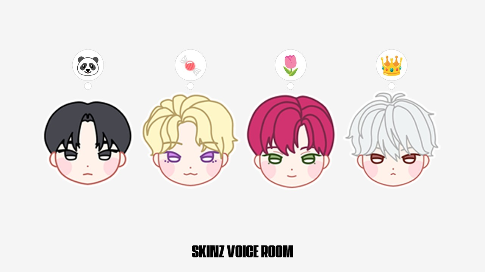

SKINZ分類：Voice Room · 直播日期：2026-03-19SKINZ VOICE ROOM (W. DOVIN, DAEL, FINN, ILANG KWON)DOVIN, DAEL, FINN, ILANG 字幕初始紀錄：2026-10-07（依文章發布日期）在 YouTube 觀看原始影片×載入 YouTube 播放器 繁中韓文雙語字幕大小20%字幕位置 原先位置懸浮字幕全螢幕劇院模式繁體中文點播放後，字幕會顯示在這裡韓文 1010速度 0.75×1×1.25×1.5×2×00:00 / --:-- 分享這篇@fLINE𝕏 影片翻譯評分☆☆☆☆☆選擇 1～5 星展開雙語逐字稿 點擊查看完整內容雙語逐字稿雙語韓文繁中 自動跟隨播放文字大小 A−A＋重設字幕偏移（秒） 字幕比聲音早出現時填正數00:00:00여러분大家00:00:01하나 둘 셋 안녕하세요一 二 三 大家好00:00:04스킨즈입니다我們是 SKINZ00:00:09안녕하세요大家好00:00:10안녕하세요大家好00:00:16보고 아니 듣고 싶었어 음네 저희도想見 不對 想聽你們的聲音 我們也00:00:19보고 아니 말하고 싶었어요.想見 不對 想跟大家說話00:00:23안녕하세요 여러분大家好00:00:24안녕하세요.大家好00:00:26어 왜 이렇게 오랜만 같죠?怎麼感覺隔了好久?00:00:28오랜만인가? 오랜만이죠.隔很久了嗎? 是啊00:00:29오랜만. 오랜만이죠.好久不見 是啊00:00:33말 좀 하세요.說點話吧00:00:34진짜 말하고 싶었어요.真的很想跟大家說話00:00:37아니 말 좀 하세요.說點話啦00:00:39지금 긴장되시나 봐요 다엘 형Dael 哥現在好像很緊張00:00:44저 말을 못 해요.我說不出話00:00:46안녕하세요.大家好00:00:49오늘은今天00:00:52연습실이 아니고 녹음실이죠.是在錄音室 不是練習室00:00:54스튜디오. 스튜디오.錄音室 錄音室00:00:55스튜디오. 예.錄音室 對00:00:57다들 저녁 뭐 먹으셨나요?大家晚餐吃了什麼?00:01:01저는 아까 빵 사와서 먹었습니다.我剛剛買了麵包來吃00:01:04빵?麵包?00:01:04빵으로 밥이 돼?麵包?00:01:05안 되죠.不能啊00:01:06저는 오늘 새로운 시도를 또 한번我今天又嘗試了新的東西00:01:09했거든요.試了一下00:01:10오케이. 뭐 먹었는데?好 吃了什麼?00:01:11좀 마라 먹었는데吃了麻辣料理00:01:12어.嗯00:01:13아니 그 평소에 안 시키는 다른我點了平常沒點過的00:01:15가게에서 시켰는데另一家店00:01:16응.嗯00:01:17속이 너무 안 좋아요 지금.現在胃很不舒服00:01:18아啊00:01:20조금 잘못된 주문이었다.這次有點點錯了00:01:23음.嗯00:01:24맛은 있었어.味道是好吃的00:01:25예.對00:01:26그럼 됐지 뭐.那就好了啊00:01:27네. 거기가 또 특이한게 거기는對 那家還有個特別的地方00:01:29마라롱샤를 추가할 수 있더라고可以加點麻辣小龍蝦00:01:31마라 마라롱샤 가재인가?麻辣小龍蝦 是螯蝦嗎?00:01:33어어.對00:01:34아啊00:01:35그것도 빵이에요?那也是麵包嗎?00:01:36예.對00:01:37가재 덮인 빵이에요?上面放螯蝦的麵包嗎?00:01:38아니요 그냥 가재不是 就是螯蝦00:01:39아啊00:01:40그 약간 마라 소스에就是用麻辣醬00:01:42볶은 거 조그마한 가재지 예炒的小螯蝦 對00:01:44맞아 맞아.對 對00:01:45내가 생각해 봤는데 5억은 안 돼요我想了一下 五億不行00:01:48먹은 거 아니야?是吃了那個嗎?00:01:49맞아.對00:01:505억은 부족하오.五億不夠00:01:51무조건一定00:01:5210억은 줘야겠어.得給十億才行00:01:53맞아 맞아. 이렇게 해서 근데對 對 不過00:01:55마라롱샤가 그렇게 해서 유명해졌잖아麻辣小龍蝦也是因為那個出名的00:01:57맞아 맞아.對 對00:01:58또 아까 잠깐 들었는데 도빈형은剛剛也有稍微聽到 Dovin 哥00:02:01도시락을 챙겨왔는데 못 먹을 거帶了便當 卻好像00:02:03같다고.沒辦法吃00:02:04왜?為什麼?00:02:04예. 시간이 없어서 못 먹었어요.為什麼?00:02:07근데 그 나도 한 번씩不過我偶爾也00:02:08궁금한 게很好奇00:02:10그러면 싸오지 말고 그 시간에 먹고那就別帶便當 用那段時間吃完00:02:11오면 안 되나?再來不行嗎?00:02:13아 그니까 그 오늘就是我今天00:02:15오늘 어떻게 했냐면 그今天是怎麼安排的呢00:02:17소리가 좀 작다고 하시네.大家說聲音有點小00:02:20오늘 어떻게?今天怎麼安排?00:02:22네. 오늘 어떻게 했냐면요.對 我今天是這樣00:02:26저희가我們00:02:26지금 어때요?我們00:02:27지금은요?現在呢?00:02:29지금은 괜찮나요?現在可以嗎?00:02:34아啊00:02:35마이크를 드시면 안 돼요.不能把麥克風拿起來00:02:37그러면은 계속 그렇게 해야 되기這樣就得一直00:02:39때문에維持那個姿勢00:02:40저 지금 마이크에 거의 입술我現在嘴唇幾乎00:02:41닿거든요.碰到麥克風了00:02:46이거 지금 최대인데現在已經最大聲了00:02:47어 잘 들린데요.說聽得很清楚00:02:48아 잘 들려요?聽得清楚嗎?00:02:49아 완전히 뚫고 소리가 들어오네.聲音直接穿進來了00:02:53저희 서로 붙我們互相靠近00:02:54우리가 약간 조금 더 붙어서我們稍微靠近一點00:02:56얘기하겠다說話好了00:02:56그래야겠네요.說話好了00:02:57잠깐만. 이거 마이크를等一下 這個麥克風00:03:02스튜디오에 가서進錄音室設定00:03:06마이크 설정에 가서進麥克風設定00:03:10여기서 볼륨을 일단 올리겠습니다.先在這裡把音量調大00:03:13오케이. 좋다. 그리고 여기도好 很好 然後也進這裡00:03:15들어가서進去00:03:17혹시 뭐를 어看看有沒有什麼00:03:19됐다.好了00:03:19아好了00:03:20기본값預設值00:03:23어 마이크 테스트 23%네. 엄청麥克風測試才 23% 好小聲00:03:25작네. 통신으로 바꾸면은換成通訊的話00:03:27아 그럼 안 돼.那樣不行00:03:28왜為什麼?00:03:29무서워 나好可怕00:03:31잘못될 것 같아요.感覺會出問題00:03:32지금은 좀 크지 않나요? 여러분現在是不是比較大聲了? 大家00:03:34잠시만요.稍等一下00:03:36어 또 줄어 들었다.又變小聲了00:03:37어嗯00:03:38아 저거那個00:03:38아니 아니야. 이건 이거는 요거야.那個00:03:40저거那個00:03:40응那個00:03:41됐다. 어 됐다 됐다. 와우 딱好了 好了 好了 哇 剛好00:03:45어嗯00:03:46오케이好00:03:4780에서 20을 올렸습니다從 80 調高了 2000:03:50예對00:03:50아 80에서 100으로對00:03:51예 그래서 그 도시락을 싸오셨는데對 所以你帶了便當00:03:55제가 오늘 그러니까 도시락을 어떻게我今天便當是怎麼弄的呢00:03:56하냐면 그거예요. 제가 오늘 도시락을就是這樣 我今天先準備00:03:59싸고便當00:03:59응便當00:04:01헬스장에서 운동을 하고去健身房運動00:04:02네對00:04:03그다음에 이제 지하철을 타고然後搭捷運00:04:04왔거든요.過來00:04:05네. 그러니까 그 그러니까 4시에對 就是四點00:04:08출발을 한 거예요.出發00:04:08음. 약간 시간 순서 분배가 약간 좀出發00:04:12그죠. 아쉬웠네요.對吧 有點可惜00:04:14예.對00:04:15배고프시겠어요 그러면.那你應該很餓吧00:04:17그래서 끝나고所以結束之後00:04:19그 타고 가면서 먹으려고요我打算回去的路上吃00:04:23아 저는 또 오늘 그 갈비탕 떡국을我今天吃了排骨湯年糕湯00:04:26먹었는데吃了那個00:04:27진짜 너무 맛있어.真的超好吃00:04:28업로드했잖아요.你有上傳嘛00:04:28예.你有上傳嘛00:04:30맛있어. 보이는데. 지금 요즘 운동看起來很好吃 你最近00:04:32열심히 하고 있어요.很認真運動00:04:36그럼요. 그럼요.當然 當然00:04:40저 요즘 갓생 살기 프로젝트를 하고我最近在執行充實生活計畫00:04:41있어서.在做那個00:04:42몇 일차인가요?第幾天了?00:04:44며칠 차지?第幾天了啊?00:04:46운동한지 한運動大概00:04:47아, 운동은 저 저번 주부터運動是從上星期00:04:50시작했어요.開始的00:04:51음.嗯00:04:53아, 그 갈비탕 떡국 레시피를 여쭤很多人問排骨湯年糕湯的00:04:56보시는 분들이 많은데요. 진짜食譜 真的00:04:58쉬워요. 갈비탕 떡국이 사실 그很簡單 其實排骨湯年糕湯00:05:01갈비탕이 맛있으면 되거든요.只要排骨湯好喝就行了00:05:04그죠? 갈비탕 떡국은 이제 갈비탕에對吧? 排骨湯年糕湯就是在排骨湯00:05:08떡 넣으면加年糕00:05:09사실 제가 약간 그 좋아하는其實這是我喜歡的00:05:13요리하는 이제 그 채널에서 그料理頻道上00:05:15본 레시피인데요.看到的食譜00:05:17혹시 레오쌤인가요?是 Leo 老師嗎?00:05:18어, 아니요. 레오쌤. 레오쌤은不是 Leo 老師00:05:22레오쌤 셰프 님 말씀하시는데네你是說 Leo 主廚嗎?00:05:23강레오 쌤姜 Leo 老師00:05:24아 강레오 셰프님 아 아니에요姜 Leo 主廚? 不是00:05:26아니에요 아니에요不是 不是00:05:27네對00:05:28근데 갈비탕에 이렇게 고기를 해서就是在排骨湯裡再加肉00:05:32이제 약간 더블 스탁을내는 거예요.做成雙重高湯00:05:33어嗯00:05:34그래서 엄청 엄청 맛있어요.所以非常非常好吃00:05:36음嗯00:05:37그렇게 해서 이제 뭐 소금이랑 뭐這樣煮之後 再用鹽和00:05:39액젓으로 좀 간하고 저 왜魚露調味 你為什麼00:05:41웃으세요?在笑?00:05:43아 이런 식這樣00:05:44핀이형 리액션이Finn 哥的反應00:05:46어嗯00:05:49음嗯00:05:50사실 그 대파 그거 물 국물 우려其實加蔥去熬湯00:05:53가지고 하면 시원하고 맛있잖아요.湯就會很清爽很好喝嘛00:05:55어嗯00:05:56그 아닌 무不是 是白蘿蔔00:05:57무는 안 들어갔어요.沒有放白蘿蔔00:05:59제가 갈비탕을 잘 모르긴 해요 음其實我不太了解排骨湯00:06:00당면冬粉00:06:02당면 안 들어갔어요.沒有放冬粉00:06:03당면 아冬粉 啊00:06:04떡국 떡이 있으니까因為有年糕湯的年糕了00:06:05음음嗯嗯00:06:08아 이모지 설명해 달라고 하시는很多人想要我們解釋00:06:10분들이 많네요. 음.表情符號00:06:12이모지表情符號00:06:13이거 썸네일 말씀하시는 건가요? 네.是說縮圖上的嗎? 對00:06:16네.對00:06:16음.對00:06:16이랑이 왜 왕관이에요?對00:06:19킹國王00:06:19네가 왕이에요?國王00:06:20아니요 그냥 딱 오늘 뭐 이게 하고不是 只是今天想用這個00:06:23싶었을까? 아想用看看00:06:24그냥 보다가 어 이거 좀 반짝반짝거릴看了一下 覺得這個亮晶晶的00:06:26거 예쁠 거 같은데 해가지고應該會很好看00:06:28네對00:06:29했죠.所以就選了00:06:30어嗯00:06:31형은요? 왜 피는 왜 장미해요?那哥呢? Finn 為什麼用玫瑰?00:06:33저는 장미가 아니라 튤립인데我這個不是玫瑰 是鬱金香00:06:35어 튤립이에요是鬱金香00:06:37그지? 음.對吧? 嗯00:06:37그냥 갑자기 팬분들 보여 드리면對吧? 嗯00:06:39좋겠다 생각이 들어서 꽃 꽃을 주고應該不錯 想送花給大家00:06:42싶은 느낌 그래서 튤립을 했습니다所以選了鬱金香00:06:46그 너 왜 판다예요?你為什麼是熊貓?00:06:48어?嗯?00:06:49어. 귀여워서.因為可愛00:06:51음. 형이요?嗯 你嗎?00:06:53그러니까 본인이你是說自己00:06:54아니 아니 판다가 귀엽고. 그리고不是 是熊貓很可愛 而且00:06:56일단 그 제 캐릭터를 딱 보시면 살짝看我的角色就會發現00:06:58그 색배치가 비슷합니다.配色有點像00:07:00아 예.對00:07:01아 블랙 앤 화이트黑白色00:07:02약간 범고래의 느낌有點像虎鯨的感覺00:07:03어 그죠. 그죠. 그 색배치가對 對 配色00:07:05비슷해서很像00:07:06그 블랙앤 화이트 이모지 중에 가장所以在黑白的表情符號裡00:07:08귀여운 것을 골라봤어요.挑了最可愛的00:07:10안 되겠다. 형 한번 염색시켜야겠다.不行 得讓你染一次頭髮00:07:13형은 딱 봐도 뭔가 킨디 캔디 약간哥這個一看就覺得是 K!NDY 跟糖果00:07:15이거를 노리고 한 건가요? 혹시?你是有意這樣選的嗎?00:07:17설마 그렇게 직관적으로該不會這麼直觀吧00:07:21저 사탕 먹고 싶어서我想吃糖果00:07:23단 게 당겨 가지고 네想吃甜的 對00:07:26아 갑자기 갑자기 단 게 당겨 가지고突然想吃甜的00:07:28아 사탕 먹고 싶네.突然想吃糖果00:07:29오케이. 사탕 캔디.음好 糖果 Candy 嗯00:07:32사실 킨디 때문에 한 건 맞고其實確實是因為 K!NDY 選的00:07:33네. 캔디 킨디對 Candy K!NDY00:07:36형님 저도 왕관 킨디 때문에 한 거긴哥 我的皇冠其實也是因為 K!NDY00:07:38해요.才選的00:07:38왜요?才選的00:07:39킨디가 왕이다.K!NDY 是國王00:07:40음.嗯00:07:41어. 오케이.好00:07:43오케이.好00:07:48좋습니다.很好00:07:52자,來00:07:53묘하다很妙00:07:55떼려야 뗄 수 없는 이제 묘 묘現在已經離不開這個妙字了 妙00:07:59아, 근데 이번에 춤을不過這次練了很多00:08:02많이 연습해 주셔 가지고 형이 되게舞蹈 哥跳得00:08:05잘 추시던데.很好耶00:08:05근데 열심히 하긴 했는데 약간 저는很好耶00:08:07약간 큰 그림 그리는 걸喜歡把眼光00:08:08좋아하거든요.放遠一點00:08:10그래서 지금 약간의所以現在稍微00:08:11결핍이 있어야 또 다음 앨범 때 더還有不足之處 到下一張專輯時00:08:14성장된 모습을 보여 드릴 수 있을 것才能展現更進步的樣子00:08:16같아서我是這樣想的00:08:17뭐 90% 정도라고 했다까?就說這次發揮了 90% 吧?00:08:21다음 앨범 때 120 보여 드릴게요.下一張專輯會讓大家看到 120%00:08:23맞아요. 팬분들도 다對 粉絲也都00:08:24응.嗯00:08:29그렇다고 하시네요.這麼說00:08:30그 저번에 태재율 방송 봤어? 거기서有看上次 Theo Jaon Yull 的直播嗎? 他們00:08:34뭐 하나 정했는데決定了一件事00:08:35알죠? 그거?你知道那個吧?00:08:37아,啊00:08:38이모티콘.表情符號00:08:39음 외모 순위 그거 말씀하시는 건가?嗯 是說外貌排名嗎?00:08:44이모지랑 외모 순위表情符號和外貌排名00:08:51묘한 건 덜 한데 뚝딱거리긴 해.沒那麼妙了 但還是有點僵硬00:08:53음.嗯00:08:53어디?嗯00:08:54어디요?哪裡?00:08:55아.啊00:08:56어.嗯00:09:03묘를 근데 졸업하고 싶진 않아요但我不想擺脫妙這個稱號00:09:05어 묘해요.很妙00:09:06좀 귀여워 가지고因為有點可愛00:09:08이게 어쩌다 생긴 거지? 이게 이게這個是怎麼出現的? 是00:09:10태오가 저 놀리면서 별명이라 했나?Theo 逗我時這麼說的嗎?00:09:12아니면 팬분들이 묘라고 하셨나?還是粉絲說我很妙?00:09:14제가 기억하기로는 태오형이 댓글을我記得好像是 Theo 哥00:09:17읽었었던 거 같아요. 묘하다 이거를讀了留言 讀到很妙00:09:19읽어서這句話00:09:19아, 태오의 입을 통해 이제 전송이這句話00:09:21됐군요. 저한테는傳到我這裡的00:09:21그런 거 같아요.傳到我這裡的00:09:26오케이.好00:09:28외모 순위?外貌排名?00:09:28외모 순위外貌排名?00:09:32야, 이거 상당히這個真的00:09:35쉽지 않은 질문이네요.是很難回答的問題00:09:36그죠? 그렇죠.對吧? 對00:09:39아, 근데이 약간 그不過這個有點00:09:41응. 저희가 근데 정하는게 약간嗯 我們決定的會變成00:09:43오피셜이 되는 건가요? 아니면 개인의官方排名嗎? 還是依照個人的00:09:45취향에 맞게喜好00:09:46한 명씩 이렇게 말을 하는 건가요?一個一個說?00:09:48아, 저희끼리 뭐 그我們自己00:09:49토의를 약간 해 가지고討論一下00:09:50네 토의를 해서 오늘 오피셜을 한번對 討論後今天決定00:09:52정해 볼까요?官方排名看看?00:09:52음.官方排名看看?00:09:57아, 근데 이거 저는不過我00:09:58음嗯00:10:00아시겠지만이 사진에선 또 와, 너大家也知道 有時看到照片會說 哇 你00:10:03진짜 잘 나왔다 이러고 또 어떤拍得真好 有時看到00:10:05영상에서 와, 네가 진짜 잘 나왔다.影片會說 哇 你拍得真好00:10:06막 이러고. 그죠? 아, 맞아 맞아就像這樣 對吧? 對 對00:10:08맞아.對00:10:08아, 그 객관적인 순위를 정하기엔對00:10:10굉장히 어려울 수 있는데可能很困難00:10:11네. 사실 다 너무 멋있어 가지고對 其實大家都很帥00:10:14그러면은那麼00:10:15근데 일단 율이 2위 2위 받고 가야不過 Yull 說他一定要拿到00:10:18된다는데요.第二名00:10:19아, 근데 좀 반대 좀 반대요.有點反對 有點反對00:10:21왜요? 왜요?為什麼? 為什麼?00:10:23율이는 그냥 괜히 7등으로 놓고我就是想把 Yull 放在第七名00:10:26싶네.想這樣00:10:26아,想這樣00:10:27근데 사실 이게 피지컬도 있잖아요.其實體格也包含在裡面嘛00:10:30아, 율이는 뭐Yull 的話00:10:31전체적인 그죠? 그렇죠.是整體的 對吧? 對00:10:33전체적인 그거를 좀整體的部分00:10:35번외로 오케이 그러면 율이 1등好 那給 Yull 額外的第一名00:10:36줄게. 깍두기로算是特別名額00:10:39그죠? 이게 외모 외모 순위지만 외모가對吧? 雖然是外貌排名 但外貌00:10:42이게 피지컬도 포함이 되기 때문에 음也包含體格00:10:44맞죠.沒錯00:10:46그러면 꼴등은 우 그 할까요?那先選最後一名嗎?00:10:51아 이거 근데 되게 이게 좀這個真的00:10:53이렇게 밖에 고민이 많이 된다.需要想很多00:10:55아啊00:10:56뭔가 섣불리 뱉을 수 없어 그感覺不能隨便說出口00:10:59그럼 위에서부터 할까? 위에서부터那從上面開始? 從上面00:11:021위부터第一名開始00:11:031위第一名00:11:05각자 생각한 1등이 있나요?大家心裡有第一名的人選嗎?00:11:07저도 그럴 거 같아서 그냥 한 명씩我也這麼想 一個一個說00:11:101등 1등 꼴등 말하기 좀 그러니까第一名 說最後一名有點尷尬00:11:121등을 먼저 한 명씩 말하는 건不如先輪流說第一名00:11:14어떤가?음怎麼樣?00:11:16좋습니다.好00:11:17그래서 좀 많은 득표를 받은 사람이得票比較多的人00:11:191등이면은 좀當第一名就00:11:21음嗯00:11:21그럼 이렇게 해봅시다. 저희끼리嗯00:11:24어 주관적인 느낌으로 1등을 먼저依照主觀感受 先選出00:11:26한번 정해 봅시다.第一名00:11:28하나 둘 셋 한번 얘기해 볼래?數一二三一起說看看?00:11:29아하.好00:11:30자 떠오르셨나요?來 想到了嗎?00:11:32저는 뭐 아,我嘛00:11:33너 너 할 거지?你會選自己吧?00:11:35아 이게 안 돼요?這樣可以嗎?00:11:37아, 되긴 해 되긴 해. 어.可以 可以00:11:39어.嗯00:11:40어허.哦00:11:43오케이.好00:11:45골랐어.選好了00:11:45네. 골랐어요.選好了00:11:47하나 둘 셋 묘하다 예一 二 三 很妙 對00:11:49저도我也00:11:51네.對00:11:51아, 나 하나 둘 셋 하면 말하라고對00:11:54하려고 나 신호 준 거였어.我是在給提示00:11:55저는 아, 저는 태오예요.我選 Theo00:11:57어. 아,哦00:11:58예.對00:12:00형은요?哥呢?00:12:00전 다엘 했습니다哥呢?00:12:02형은요?哥呢?00:12:03난 도빈했습니다.我選 Dovin00:12:04다 다르네 누구 했어? 저 권이랑都不一樣 你選誰? 我選 Ilang Kwon00:12:07일단 권이랑 7등이요.那 Ilang Kwon 先排第七名00:12:12다엘은 어 태오를 뽑았고 도빈은Dael 選了 Theo Dovin00:12:16다엘을 뽑아줬고 또 핀이는 도빈이를選了 Dael Finn00:12:19뽑아줬고 이랑이는 본인을 뽑았습니다選了 Dovin Ilang 選了自己00:12:22본인을 뽑았습니다.選了自己00:12:24근데네 명이 다 하나도 안 겹친다.不過四個人都完全沒重複00:12:26그러니까就是啊00:12:27너무 좋은 현상이라고 봐야 저는我覺得這是很好的現象00:12:29각各自00:12:30그렇네요. 본인을 말한 것까지.음是啊 連說自己的人也算進去00:12:33좋은 현상이죠. 아니 자기가 자기를這是好現象 明明自己選了自己00:12:34뽑아 놓고요還這樣說00:12:36아니不是00:12:37그럼 저那我00:12:38그럼 결국에 너 이거 왕관도 너 너所以你這個皇冠也是 你00:12:39네가 킹인 거 맞네. 아니就是國王沒錯嘛 不是00:12:41킨디분들이 킹이 아니不是 K!NDY 才是國王嗎?00:12:43그러면은 궁금한 게那我很好奇00:12:43저는 이거 왕관을 굳이 왕이라고 해서那我很好奇00:12:46한게 아니에요.它代表國王00:12:47여왕女王00:12:48퀸 퀸디Queen K!NDY00:12:51아 좀 억지다 이거. 어這個有點牽強00:12:55아 그러면 재온이 그러니까 그 이렇게那 Jaon 就是 這樣吧00:12:57합시다. 그就是00:12:591등 이렇게 하지 말고不要這樣選第一名00:13:01네對00:13:01일단 율태제부터 지금 없으니까 아對00:13:04율태제 중에서 1등을 가리자고요.在 Yull Theo Jaon 裡選第一名嗎?00:13:05아니 아니 그니까 율 하면 각자不是 就是說到 Yull 時 大家00:13:07생각하는 일곱 명 중에 순위說出自己覺得他在七個人中的排名00:13:09말해 버리기 순위把排名說出來00:13:11잠깐 아 이건 좀 어려운데等等 這個有點難00:13:14그리고 솔직히 말하면 우리네 명이고而且說實話 我們四個人00:13:16거고 거기 세 명이잖아他們只有三個人00:13:17우리 뜻대로 밀어붙이면 걔네 이길 순我們堅持自己的想法 他們就贏不了00:13:19없어 우리가 정하는 거야 사실其實是我們來決定00:13:21그죠 그러면 제가 뭐 일단 뭐對 那先從00:13:23태오부터 해 볼까요 태오해서Theo 開始? 說到 Theo00:13:26몇 등 딱 이렇게 각자 이제 얘기를大家就直接說第幾名00:13:28하는 거죠 네 태오는 좀 재미가 없는 게對 Theo 有點沒意思00:13:30다 상위권을 생각하고 있을 것 같긴感覺大家都覺得他排前面00:13:32해. 아, 전 아니에요.我不是耶00:13:33아니에요.不是00:13:40자,來00:13:41가보겠습니다.開始吧00:13:43아, 어렵네.好難00:13:44지금 태 태오부터 하는 거죠?現在先從 Theo 開始吧?00:13:45아, 네. 태오.對 Theo00:13:48하나, 둘, 셋.一 二 三00:13:503등.第三名00:13:52오,哦00:13:531 2 3 4一 二 三 四00:13:53어, 진짜 아니야. 아니야. 4 4一 二 三 四00:13:55뽑았고 너 3등이라 했지? 나你說第三名吧? 我00:13:571등이라 했어. 어說第一名00:14:001 하나 3 하나 4두 개一票第一 一票第三 兩票第四00:14:04네對00:14:05그러면은那就是00:14:05그 중상위권이네요那就是00:14:07그렇네요.네是啊 對00:14:07그러면 대충 봤을 때 한 3위에서是啊 對00:14:104위 정도네第四名左右00:14:11그렇죠.對00:14:12평균을 따졌을 때 3위 어 평균算平均的話第三名 平均00:14:14따졌을 때來說00:14:14좋습니다.來說00:14:15오케이. 지금 좀 좀 적을까요?好 現在記一下?00:14:17좋아요. 좋아.好 好00:14:17태오 3등. 네.好 好00:14:19태오는 아무래도 그Theo 畢竟00:14:21맞아. 각자 이유를 한번 들어보죠.對 聽聽大家的理由00:14:23그 건강한那種健康的00:14:24신체身體00:14:25느낌에 이제那種感覺00:14:27약간 저희한테 없는 느낌이에요.是我們沒有的感覺00:14:29저희한테 없는 느낌의 좀 건강한我們沒有的健康感00:14:31느낌과 좀 피지컬還有體格00:14:33아 못하죠. 네.比不上 對00:14:36그게 한這個大概00:14:39해서 한 3등 정도至少第三名00:14:40근데 갑자기 생각한 건데不過突然想到00:14:41네.對00:14:41이렇게 태재율 하나 둘 셋 몇 위對00:14:44하잖아.說第幾名嘛00:14:45그 끝나면 저희도 면전에서 하나요?結束後我們也要當面這樣嗎?00:14:47예.對00:14:50아 차라리 1등을 누구라고 꼽면直接選誰第一名還沒關係00:14:52괜찮은데 감히 앞에서 순위를 매겨但要當面幫人家00:14:54준다는 게排出名次00:14:55되게 재밌겠다. 히.一定很好玩00:15:02그다음은 누구 가나요?下一個是誰?00:15:03다음은下一個是00:15:04재온이Jaon00:15:05아 아니요 율 먼저 가죠 잠깐不是 先從 Yull 開始00:15:07잠깐 좀 생각 좀 할게요.我先想一下00:15:10아하 전 다 정했습니다 저我都決定好了00:15:121부터 7까지 다 정했어요.第一到第七名都決定好了00:15:14아 그래 벌써真的? 這麼快?00:15:15재온이Jaon00:15:17아 아니 아니 아니율부터不是 不是 先 Yull00:15:22어허哦00:15:24좋아요가 볼까요? 준비되셨나요好 開始吧? 大家準備好了嗎?00:15:27다들?네 네.大家? 對 對00:15:28잠깐만요. 아, 잠깐만요. 진짜等等 等一下 真的00:15:31잠깐만요. 아, 네. 정했습니다.等一下 好 我決定了00:15:38좋아요. 자, 하나, 둘, 셋.好 來 一 二 三00:15:416등.第六名00:15:46한 명 빼고 다 숫자가 같았던 거好像除了一個人之外 數字都一樣00:15:48같은데.是吧00:15:48네. 그 세 명이是吧00:15:506등이說第六名00:15:51그까 누가 몇 등을 했는지 말하지不要說誰選了第幾名00:15:52마시죠. 예.對00:15:53아, 그렇죠. 그렇죠.對 對00:15:55세 명이三個人00:15:56세 명이 6등했고 한 명이三個人選第六名 一個人00:15:583등했습니다.選第三名00:15:59그럼 몇 등에 배치해야 되죠?那要排第幾名?00:16:015등.第五名00:16:035등第五名00:16:04아 근데 6등으로 가는 게 맞는不過應該排第六名00:16:06거 같아요.才對00:16:076등 일단 적고 일단 조율 한번第六名 先寫下來 再調整00:16:09해 볼게요.一下00:16:10만약에 똑같은 등수가 세 표 나오면은如果同一個名次有三票00:16:12평균치 내지 말고 그냥 다수결로就不要算平均 直接多數決00:16:15그렇죠 아 오케 그것도 괜찮겠다.對 好 這樣也不錯00:16:166등 6등第六名00:16:17율이니까 6이 맞는 거因為是 Yull 所以第六名00:16:20같아요 네 6등으로 갈게요應該沒錯 對 就第六名00:16:23자, 그다음 재온이.來 下一個 Jaon00:16:25재온이.Jaon00:16:26오케이.好00:16:29아, 근데 이거 피지컬 점수를 너무不過感覺他的體格分數00:16:30많이 받을 것 같긴 한데.會很高00:16:33음.嗯00:16:36잠시만요. 태오가 몇 등이었지? 아,等等 Theo 第幾名來著?00:16:373위였지.第三名00:16:38지금 3위로 배치돼 있습니다.現在排第三名00:16:43오케이. 전 정했습니다.好 我決定了00:16:44저도요.我也是00:16:45잠시만요.等一下00:16:49외모 순위니까 음因為是外貌排名00:16:52아, 네. 네. 저 정했어요.好 好 我決定了00:16:54자,來00:16:55하나 둘 셋.一 二 三00:16:58오,哦00:16:59만장일치 4위다.一致通過第四名00:17:01말도 안돼.太扯了!00:17:03재온아 1등 아니야 어떡해?Jaon 你不是第一名 怎麼辦?00:17:05거기서 재온이가 1등했어?他們那裡是 Jaon 第一名嗎?00:17:07어? 아니 그 세 명에서嗯? 不是 他們三個之中00:17:09아 재온이가Jaon00:17:11자기 무조건 1등이다.說自己一定是第一名00:17:13어嗯00:17:14아니 저 솔직히 강아지상을 별로 안說實話 我不太喜歡00:17:15좋아합니다.狗狗長相00:17:16아 아 근데 이게 사실 그네不過這個其實00:17:17개인 취향是個人喜好00:17:18예 저희의 취향이니까 맞아對 是我們的喜好 沒錯00:17:21재온이는 좋아합니다. 그래도 아 그但還是喜歡 Jaon 啊00:17:23그죠. 예.對 對00:17:24음.嗯00:17:25친구朋友00:17:26근데 근데 정말 놀랍게도不過很驚人的是00:17:28여러분大家00:17:28아大家00:17:29애매한 재온이라뇨? 저희 그런 말을什麼叫不上不下的 Jaon? 我們沒說過00:17:31한 적이 없는데.那種話00:17:32근데 정말 웃긴게不過真的很好笑00:17:35저희가 일곱 명인데 없는 세 명이我們有七個人 不在的三個人00:17:383위 4위 6위예요. 그럼 저희네 명是第三 第四 第六名 那我們四個人00:17:40중에 7등이 있단 겁니다.當中有一個第七名00:17:417등과 1등이有第七名和第一名00:17:44잠깐等等00:17:45이거 여기까지 할래? 저희네要到此為止嗎? 我們四個人00:17:46명 중에 7등이 있어요.當中有第七名00:17:48아니면 한 명씩 들어와서 하던가 쓰고不然輪流進來寫完00:17:50나가던가再出去00:17:51그때 그 완벽한 X처럼像那時完美的 X 一樣00:17:54이거 너무 잔인한 거 같. 그는這個好像太殘忍 他00:17:56누구를 선택했습니다選擇了某某人00:18:00그러니까 여기서 1등 7등이 다就是啊 第一名和第七名都在這裡00:18:01나오네요. 빈부격차가 너무 심한데요.貧富差距也太大了00:18:03그러니까就是啊00:18:04음嗯00:18:06와哇!00:18:08핀이다是 Finn00:18:09뭐 아 어떻게什麼 怎麼會00:18:12진짜 우리 아무것도 안 했는데我們真的什麼都沒做00:18:14좋습니다.好00:18:14그러면 어 누구부터 해야 되니?好00:18:17어嗯00:18:19지금 1 2 1 2 5 7現在是一 二 一 二 五 七00:18:221 2 5 7一 二 五 七00:18:221 2 5 7一 二 五 七00:18:23뭐 순서대로 할까?照順序來嗎?00:18:25그럽시다.好00:18:26오케이.好00:18:27좋아요. 그럼 뭐 이랑이부터 갈까요?好 那從 Ilang 開始?00:18:30오케이.好00:18:34에嗯00:18:36아 음 아 근데 여기에 빈 숫자만不過不一定要只選剩下的數字吧00:18:40할 필요는 없는 거잖아요.不一定吧00:18:41어.嗯00:18:42근데 근데 만약에 겹치게 나오면不過如果重複了00:18:43약간의 조정이 필요할 것 같아요.感覺需要調整一下00:18:45그러니까 만약에 이제 막 뭐 이랑이就是說如果 Ilang00:18:473이 나왔어.得到了第三名00:18:48그럼 태오랑 이랑이랑 해서 누가 3위인지就讓 Theo 和 Ilang 比一下誰第三名00:18:50해서 하나 둘 셋 해서 그걸 또 해야數一二三 再選00:18:52되지.一次00:18:52오케이. 자, 갈게요.이一次00:18:54치열합니다. 이게 밀어내고.很激烈 會把人擠下去00:18:56음.嗯00:18:56자.嗯00:18:57자 그럼 이렇게 합시다 자기가 자기那這樣吧 如果自己只能選自己00:18:581등 뽑기 그러면第一名的話00:19:00아니, 아니, 그 상 그런 사람은不是 不是 那種人00:19:01없어요 상관없어요沒有 沒關係00:19:02아, 상관없어요. 그리고 너 말고沒關係 而且除了你00:19:03그런 사람 없어요.沒那種人00:19:06자,來00:19:08하나 둘 셋一 二 三00:19:102등.第二名00:19:13와, 2등 두 명, 3등 한 명,哇 兩票第二 一票第三00:19:165등 한 명. 와. 근데 5등 한一票第五 哇 不過有一票第五00:19:18명은 좀 심하게. 5등 5등은有點太過分 第五名00:19:20아니잖.不至於吧00:19:20아, 왜냐면은 아, 왜냐면 저 그런게不至於吧00:19:22있어요. 와. 되게 잘생기고 섹시한데他很帥也很性感00:19:24전 약간但我有點00:19:26고양이상을 안 좋아해요? 아니 그게不喜歡貓系長相嗎? 不是00:19:27아니고那個意思00:19:28약간 눈 착하게 뜨는 사람을 좋아해요我喜歡眼神溫柔的人00:19:30아啊00:19:31그러니까 예의 발라 보이고 선한就是我本來就喜歡看起來有禮貌00:19:33이미지를 제가 원래 좋아해 가지고又善良的形象00:19:35근데 이랑이는但 Ilang00:19:37섹시하지만 동시에 약간 너무雖然性感 同時又有點00:19:39차갑잖아요.太冷了00:19:39아 저는 그래서 되게 매력이 있다고太冷了00:19:41생각해요.我這麼覺得00:19:42아啊00:19:44예對00:19:45아 저도 매력이 없다고 생각을 하진我也沒說他沒有魅力00:19:47않았어요.我沒有這麼想00:19:47예 저는 굉장히 매력 있는 친구라고我沒有這麼想00:19:50생각합니다.네對00:19:50저는 착한 착한 사람을 좋아해요.음對00:19:53그러면은 몇 등 해야 돼요?那要排第幾名?00:19:562 2 5二 二 五00:19:572 두 개 3 하나 5 하나兩票第二 一票第三 一票第五00:19:59아니 아니야 그게 아니고 뭔 뭔不是 不是這樣 你在00:20:01소리야?說什麼?00:20:012 1說什麼?00:20:02아니에요 2 두 개예요不是 是二 二00:20:03아 아니 아不是00:20:042등으로 뽑았어.選了第二名00:20:05예 전 2등對 我選第二00:20:062 두 개 3 하나 5 하나兩票第二 一票第三 一票第五00:20:082등第二名00:20:08아 그지 그 5등 한 명第二名00:20:102 2 3 5 그러면은 다 더해서二 二 三 五 全加起來00:20:144로 나누면除以四00:20:153등이네 그 태오랑就是第三名 那跟 Theo00:20:18아啊00:20:19태오랑 붙어야 되는데要跟 Theo 比00:20:21근데 태오랑 붙어서 태오가但如果跟 Theo 比 Theo00:20:22이기잖아요. 그러면贏了的話00:20:25내려가나요?會往下掉嗎?00:20:26태오가 올라가나요?還是 Theo 往上升?00:20:28그 이렇게 되는 거예요. 봐봐요.是這樣 看喔00:20:30태오랑 이랑이랑 붙었어. 만약에Theo 和 Ilang 比 如果00:20:32떨어진 사람이랑 또 바로 밑에 재온輸了就再跟下面的 Jaon00:20:334등이랑 또 붙어야 돼.第四名再比一次00:20:35그렇게 한 거죠?是這樣做吧?00:20:35아 떨어지는 거구나.是這樣做吧?00:20:39와 재밌다 근데 이거哇 這個很好玩耶00:20:41자來00:20:42그러면은那麼00:20:43아니 그냥 공동 3위 주면 안 돼요?不能直接並列第三名嗎?00:20:46아 그럴까요?要這樣嗎?00:20:47아 그러시죠. 너무好 就這樣吧 太00:20:483위하고 4위가 없고 바로 5등으로第三名後面沒有第四名 直接00:20:50가는 거.跳第五名00:20:50너무 또 그렇게跳第五名00:20:51아 근데 하나의 하늘에 두 개의但同一片天空不能有00:20:52태양이 뜰 수가 없는데.兩個太陽00:20:53근데 3등은 태양이 아니기 때문에不過第三名不是太陽00:20:573등은 뭐 지나가는 비행기잖아.第三名只是經過的飛機嘛00:21:00소행성 정도 되겠네요.大概是小行星00:21:023등은 조금.第三名稍微00:21:02오케이 그러면은 태오 이랑으로第三名稍微00:21:04적겠습니다.我這樣記00:21:04좋습니다. 좋습니다.我這樣記00:21:07자 그럼 다음 핀 가겠습니다.來 下一個 Finn00:21:11아 잠깐만 기권 있나요?等等 能棄權嗎?00:21:15왜 기권을 하시죠? 왜 기권을為什麼要棄權? 為什麼00:21:18하시죠?要棄權?00:21:19내가 너무 잘생긴 탓인가?是因為我太帥嗎?00:21:20아니 그니까 제 마음이 너무 들켜不是 我怕我的心意00:21:21버릴 거 같아.會全被發現00:21:23그 그쪽을 향한 제 마음이我對你的心意00:21:24네. 자 가겠습니다.對 來 開始吧00:21:25네.好00:21:28하나 둘 셋一 二 三00:21:307등第七名00:21:33아 여러분各位00:21:34아쉽게도很可惜00:21:351등第一名00:21:36한 명 7등 세 명 나왔습니다.一票第一 三票第七00:21:39아쉽게도很可惜00:21:40아 미쳐버리겠다.我要瘋了!00:21:411등 한 명 7등 세 명 나왔어요.一票第一 三票第七00:21:45누가 1등 뽑았어요?誰選第一名?00:21:46저요.我00:21:46아我00:21:48너 네가 1등이라고 하지 않았어? 아你不是說自己第一名嗎?00:21:49아닌데요. 형 1등했어요. 진짜不是 我選哥第一名 真的00:21:51아 잠깐만 얘 착해 착해 병 걸렸다等等 他得了裝好人病00:21:54아 저는我00:21:55아 착해 착해 열매 먹는다 혼자서他自己吃了善良果實00:21:56자기 1등 하려고. 저는 핀이처럼想當第一名 我很喜歡像 Finn00:21:58이렇게 귀엽게 생긴 얼굴 굉장히這樣長得可愛的臉00:22:00좋아하기 때문에 저는 1등을所以我選第一名00:22:03너 아까 1등으로 다엘 뽑았잖아你剛剛不是選 Dael 第一名?00:22:06근데不過00:22:06뭔 소리야?不過00:22:07근데 다엘 형 저 눈 착하게 많이但 Dael 哥 我眼神明明很溫柔00:22:09뜨는데 왜 7등 주신 거예요?你為什麼給我第七名?00:22:10너무 착해서.因為太善良了00:22:11아啊00:22:12진짜 너무 착해서. 나 또 너무 착한真的太善良了 我又不喜歡00:22:14사람은 또 싫더라.太善良的人00:22:15아 저는 너무 착한 사람도我覺得太善良的人00:22:16굉장히 매력 있다고 생각해요.네也很有魅力 對00:22:19알겠어요. 네知道了 好00:22:21저는 정말 좋습니다. 비이. 자,我真的很喜歡 來00:22:24그러면那麼00:22:25근데 우리 큰 그림을 그린 거야.其實我們是在做長遠打算00:22:26우리가 이렇게 해버리면 지금 봐봐.這樣做的話 你看00:22:29너에 대한 이 킨디들의 마음이 확K!NDY 對你的心意00:22:31이렇게 올라와 버린다고.就會猛然高漲00:22:32아 저는 괜찮아요 저도 7등我沒關係 我也很喜歡00:22:34좋는데요. 뭐.第七名啊00:22:35아.啊00:22:36아, 왜 그래? 그러면幹嘛這樣? 那麼00:22:39그럼 7등 핀인가요?那第七名是 Finn 嗎?00:22:42일단 세 명이 나와 버렸으니까畢竟有三個人選了00:22:43아쉽게도요.很可惜00:22:47자, 그럼 저 가겠습니다.來 那換我00:22:50네.好00:22:50도빈입니다好00:22:52자,來00:22:53지금 몇 등 남았죠?現在還剩幾名?00:22:54뭐 1,5 1등 2등 남았는데요.一 五 還剩第一和第二名00:22:585등은 없어. 왜냐면은 이게 공동이沒有第五名 因為00:23:00돼 가지고是並列的00:23:00아,是並列的00:23:01사실상實際上00:23:02그냥 뭐 둘이 다 해 드세요.你們兩個都拿走吧00:23:06아, 누가 태양인지 가려보시죠.看看誰是太陽吧00:23:08네 네 좋습니다 자 그럼 도빈好 好 來 換 Dovin00:23:10갈게요.開始00:23:13하나, 둘, 셋, 1등.一 二 三 第一名00:23:18아, 이것도 뭐 오케이.這個也 好00:23:21아,啊00:23:21몇 등 나왔어? 저 2등이라 했어요.啊00:23:23누가 7등이라 하죠?誰說降級?00:23:24저 1등我說第一名00:23:257등 2등降級 第二名00:23:251등 2등降級 第二名00:23:271등第一名00:23:271등 둘 2등 둘 7등 하나第一名00:23:317등 누구?誰選第七名?00:23:32아, 제가 7등했습니다.我選了第七名00:23:33아 착해 착해 병 어떡하죠?這個裝好人病怎麼辦?00:23:35아 자 오케이 너 7등으로好 那你第七名00:23:37핀 다시 올라갈게Finn 再往上升00:23:40아, 잠깐만. 너 1등이라 했다고?等等 你說第一名?00:23:41너는你呢?00:23:421등第一名00:23:437등 2등?第七名 第二名?00:23:49그럼 뭐 1등은 뭐 정해 준 건가요?那第一名是已經決定了嗎?00:23:53형 1등 드리죠讓哥當第一名吧00:23:57야, 너무 1.5등 뭐 이런 거.一點五名之類的00:23:59마라탕 단계는麻辣燙辣度嗎?00:24:031.5등이 진짜 웃기다.一點五名真的好好笑00:24:05아. 참 그러면 뭐예요? 제가那我是什麼?00:24:072등이죠.第二名吧00:24:091등.第一名00:24:09아, 근데 그건 들어봐야 돼요. 제第一名00:24:10거를.排名00:24:11아. 아, 좋습니다.好00:24:13자 다엘 갈게요來 換 Dael00:24:14자 다엘 가시죠來 換 Dael00:24:16하나, 둘, 셋. 1등.一 二 三 第一名00:24:19에, 몇 등이요?第幾名?00:24:196등.第幾名?00:24:22아, 너 때문에 나 1등 못 하잖아.因為你 我就當不了第一名啦00:24:24그럼這樣的話00:24:25바로 앞에서當面這樣說00:24:26저는 너 몇 등이라 했어?你說我第幾名?00:24:273등.第三名00:24:283등. 너는第三名 你呢?00:24:29저 1등이요我說第一名00:24:30와, 3등. 3등 두 개. 저도哇 第三名 兩票第三名 我也00:24:323등이라 했거든요.說第三名00:24:36그러면 잠깐만.那等一下00:24:36아니 근데 왜 6등이에요?那等一下00:24:38한번 뭐 재밌게 해봐라.想說讓場面有趣一點00:24:42그러면은 도빈 1등을 하시죠.那就讓 Dovin 第一名吧00:24:45아啊00:24:45그래도 저보다 점수가 좀 높기啊00:24:47때문에.高一些00:24:48근데 뭐 저희끼리 정한 외모 순위가不過我們自己排的外貌排名00:24:50무슨 의미가 있겠어요? 저有什麼意義呢?00:24:53저 저희 킨디 여러분들이 정해 주신게我們 K!NDY 排的才00:24:54중요하죠.重要啊00:24:55아 킨디 여러분들이 정해 주시나요?要讓 K!NDY 來排嗎?00:24:58그럼 이렇게 하죠. 제가 발표를那這樣吧 我來公布00:24:59할게요.排名00:25:00네. 그래서 이제 어 나 이건 아닌對 所以如果覺得這不對的00:25:03거 같다 하시는 분들은朋友00:25:05순위를 정해서可以自己排出名次00:25:06네對00:25:07뭐 올려 주셔도 되고然後發文00:25:10아 항소 가능한 거可以上訴00:25:11그렇죠 그렇죠 그렇죠 그래서 저희가對 對 對 所以等我們00:25:13일곱 명이 다 모였을 때 그걸 주제로七個人聚在一起時 可以用這個主題00:25:15한번 다시 재판을 열어 보는 것도再開一次庭00:25:17괜찮지 않을까應該也不錯吧00:25:18좋습니다. 좋습니다.好 好00:25:19왜냐면 또 각자의 반론이 또 있을 수因為大家也可能有自己的反駁00:25:21있으니까. 예. 저도 6등은 아닌 거對 我也覺得我不是第六名00:25:23같거든요. 제가我覺得00:25:27좋습니다.好00:25:29이렇게 저희 외모 순위 끝났고요我們的外貌排名就到這裡00:25:30네.對00:25:31와 너희 다 공동 1등이야 심쿵哇 你們都是並列第一名 心動00:25:38야.哇!00:25:41자, 그러면은 이제來 那接下來00:25:43음.嗯00:25:45제가 조금 준비한게 있는데 조금 덜我準備了一點東西 不過還沒00:25:48됐어요. 그래서 형들이 보시고完全準備好 哥哥們可以看一下00:25:50뺄 만한게 있으면 빼고 진행하면 좋을有可以刪掉的就刪掉 再進行00:25:52것 같습니다.應該會不錯00:25:53뭔데요? 바로 스킨즈 곤란 밸런스什麼? 就是 SKINZ 困難二選一00:25:56게임.遊戲00:25:58음.嗯00:25:58우와.嗯00:25:59일단 핀의 준비성에 박수 한번先為 Finn 的準備鼓個掌00:26:01드릴게요.給他掌聲00:26:06지금 그 와중에現在這時候00:26:08비스테이지에 글이 왔네요b.stage 有人發文了00:26:09뭐라고요?說什麼?00:26:10율이Yull00:26:12뭐라고왔나요?他說了什麼?00:26:14뭐라고 까說什麼?00:26:14율이요? 저 멤버들이 외모 순위說什麼?00:26:176등이라 해서 라디오지만 소리排第六 雖然是廣播 我還是把聲音00:26:18껐어요.關掉了00:26:20오늘 라디오 흥미롭네요.今天的廣播真有意思00:26:23이게 뒤에 하는게 좋은 거 같아.這個好像最後再做比較好00:26:286등 6등이면 많이 좋은 건데 난第六名已經很好了 我是00:26:307등인데.第七名耶00:26:32아이고 아이고哎呀 哎呀00:26:34아이고哎呀00:26:34아니야. 7등 없어.哎呀00:26:35네. 근데 이렇게 일부러 자학을 하면對 不過我們故意自嘲時00:26:38안타까워 하지 마시고 좀不要覺得我們可憐00:26:40웃어 주세요. 너무 비참해지잖아.笑一下吧 這樣會太悲慘00:26:42아니라고도 좀 해주고也說一下不是這樣嘛00:26:43그래요.好00:26:44나는 1등 뽑았어.我選你第一名00:26:45아 착해 착해 열매善良果實00:26:49자 그러면 밸런스 게임 뭐 해來 那二選一遊戲要來玩00:26:50볼까요? 제가 문제 그러면은 불러.看看嗎? 我來念題目00:26:53근데 이거 그 킨디들이 답을 하는這個是讓 K!NDY 回答00:26:55거죠?對吧?00:26:56아니요. 저희들이.不是 是我們00:26:56아 저희들끼리.不是 是我們00:26:58자 첫 번째 문제 보시면 안 돼요.來 不准看第一題00:27:00잠깐만. 왜 본인이 자연스럽게 진행자等一下 你怎麼很自然地當起主持人00:27:02짠 건 핀인데 왜 본인이 진행을這是 Finn 做的 你怎麼自己00:27:04하세요?主持了?00:27:05어 그게 뭐 저도 근데 모르니까.因為我也不知道題目00:27:07아 오케이. 자, 첫 번째好 來 第一題00:27:11태오랑 하루 텐션 맞추기配合 Theo 的亢奮程度一天00:27:15도빈이랑 하루 공룡 토론하기還是跟 Dovin 討論恐龍一天00:27:20아,啊00:27:22야, 잘 짰다.你題目出得真好00:27:24괜찮죠?不錯吧?00:27:24잘 짰다. 야, 근데 둘 다 피곤은不錯吧?00:27:26하다. 둘 다 피곤은 해.很累 兩個都很累00:27:28음.嗯00:27:32아니, 근데可是00:27:34근데 공룡 얘기는 토론할게 딱히恐龍好像沒什麼可以討論的00:27:37없잖아요.不是嗎?00:27:38그러니까 이제 그 듣는 것만으로就是光聽好像就00:27:40괴로울 것 같은很痛苦00:27:40공룡 관련 얘기는很痛苦00:27:42음嗯00:27:42공룡을 싫어하면嗯00:27:45그렇지 않을까?應該會這樣吧?00:27:45근데 아니 아무리 좋아하는 것도 하루應該會這樣吧?00:27:48얘기하는 거는 힘들긴 해.講一整天也很累00:27:52그러면 그러면 말해 보시죠. 아, 전那說說看吧 我喜歡00:27:55도빈형 좋은데 공룡은 안 좋아할 것Dovin 哥 但應該不會喜歡恐龍00:27:56같습니다.應該是這樣00:27:57저는 근데 저는 공룡 토론할게요.但我選討論恐龍00:28:00진짜요?真的嗎?00:28:01공룡 진짜 좋아해요. 저도我也真的很喜歡恐龍00:28:02근데 저도 공룡 토론이 나을 것我也覺得討論恐龍00:28:03같아요. 태오형 텐션은比較好 Theo 哥的亢奮程度00:28:05아이고, 막 으, 왜 이런 거?哎呀 怎麼會這樣?00:28:08어,嗯00:28:09아 너도 그랬어? 나 너무 힘들어你也這樣想? 我好累00:28:11너무 격해서.因為太激烈了00:28:12예. 막對 就是00:28:12아, 아니, 여러분, 여러분 조금對 就是00:28:15진정하시고. 네. 지금 이제 다른冷靜一點 現在不能00:28:17멤버 비방하시면 안 됩니다.詆毀其他成員00:28:19아 근데 저도 태오 사랑하죠但我也愛 Theo 啊00:28:21음. 그렇죠.嗯 沒錯00:28:22핀이는 아 얘기했구나.Finn 你 已經說了00:28:24네 전 태오 형 텐션 맞추는 걸로對 我選配合 Theo 哥的亢奮程度00:28:26하루.一整天00:28:28이거는 왜냐면 제가 들어가 있기因為這題裡有我00:28:30때문에 제가 답변을 할 수가 없어요.所以我不能回答00:28:32답변. 아, 그래서回答 所以00:28:34자 두 번째 핀 농담 한 시간 듣기來 第二題 聽 Finn 講笑話一小時00:28:38VS 재온 감성 이야기 한 시간 듣기還是聽 Jaon 感性的話一小時00:28:40아, 근데 이거는 밸런스가這題的平衡00:28:42무너졌어요.被打破了00:28:42왜요?被打破了00:28:43핀 핀 그거 듣기는 너무 좋죠.聽 Finn 講那個很好啊00:28:45좋죠.很好啊00:28:46재밌어요.很好笑00:28:46핀 뭐 듣기?很好笑00:28:47농담 농담.笑話 笑話00:28:48어, 핀. 전 핀농담 너무 좋아해요.Finn 我很喜歡 Finn 的笑話00:28:49요즘 요즘 괜찮아요.最近 最近還不錯00:28:50아, 요즘 폼이 미쳤죠.最近狀態超好00:28:52저도 핀 형 농담.我也選 Finn 哥的笑話00:28:53응.嗯00:28:53그리고 너는 약간 말할 때 그냥 존재嗯00:28:55자체가 좀 귀여워서本身就很可愛00:28:56일단 스트레스가 없어.總之沒壓力00:28:58아.啊00:28:59어. 근데 저는 여기 문제에서 살짝不過這題我有點00:29:02재온 감성 이야기가 뭐예요?在意 Jaon 感性的話是什麼?00:29:04맞아. 이게 뭐지? 감성 이야기를對 這是什麼? 他平常有講00:29:06평생에 하나?感性的話嗎?00:29:07아, 이제 그 비스테이지에 올리는就是像他在 b.stage 發的00:29:08글처럼 이제 그런 이야기를 형들한테文章那樣 對哥哥們講00:29:10하는 거예요.那些話00:29:11그러질 않잖아.他不會那樣啊00:29:12아. 그니까 예쁜 얘기를 계속 예쁜就是一直講美好的話00:29:14얘기美好的話00:29:15들어 줘야 돼요.你得聽00:29:16아, 힘들 거 같아 나는. 근데我覺得會很累 不過00:29:17어. 어嗯 嗯00:29:19근데 이제 저는 이제 한 번씩 그 안可是我偶爾會講00:29:22웃긴 농담을 하잖아요. 그것만 한不好笑的笑話嘛 要聽那些00:29:24시간 들어야 돼.整整一小時00:29:25아 그렇게 상관없어.那也沒關係00:29:26아 진짜요? 형真的嗎? 哥00:29:28아 너무 좋다.太好了!00:29:29평소에도 듣긴 들으니까.平常就有在聽啊00:29:31형 이따가 남아요.哥 等一下留下來00:29:33야 뭐야 이거? 뭐야? 형 이따這是什麼? 什麼? 哥 等一下00:29:36남아요.留下來00:29:37저도 핀 농담. 이건 만장 해치로 핀我也選 Finn 的笑話 這題一致通過00:29:39농담이네요Finn 的笑話00:29:40자 세 번째來 第三題00:29:43무대에서 안무 틀리기 VS 가사在舞台上跳錯舞 還是唱錯00:29:45틀리기.歌詞00:29:47음.嗯00:29:48아, 저는我00:29:50갑자기 가슴 한 곳이 아프네요.突然覺得心裡某個地方好痛00:29:51아,啊00:29:53왜요?為什麼?00:29:55아,啊00:29:55저는 가사를 틀리겠습니다.啊00:29:57근데不過00:29:58그 안무도 틀리셨잖아요你也跳錯過舞嘛00:30:01야,喂00:30:03그러니까 이제所以就是00:30:04아, 그니까 이건 거죠. 두 개다就是這樣 兩種都犯過錯的人00:30:05틀린 입장에서 뭐가 더 가슴覺得哪個比較心痛00:30:07아팠는지.就是這樣00:30:08아, 저 가사 틀린 적 있나요?我有唱錯過歌詞嗎?00:30:10없지 않아요, 가사는?歌詞沒有吧?00:30:11저 가사 없어요.我沒唱錯過歌詞00:30:11아, 가사는 없나?我沒唱錯過歌詞00:30:12네. 가사는 없나? 조 아, 너對 沒唱錯歌詞嗎? 你00:30:14조용히 좀 해 주세요. 네.安靜一下 對00:30:15네 네 야 야 야 판다 조용히 좀對 對 喂 喂 熊貓 請安靜00:30:18해 주세요. 진짜로네 알겠습니다.真的 好 知道了00:30:20뭐 있지?有什麼呢?00:30:22근데 잠깐 떠올려 봐도不過稍微回想一下00:30:24응嗯00:30:24가사 실수보다嗯00:30:26아 그니까 제가 약간 그래도 그就是我可能還是00:30:29안무보다는 노래에서 자존감이 좀 더比起舞蹈 對唱歌更有00:30:32높은가 봐요.自信吧00:30:33그 진짜 부족한 걸 틀렸을 때가 더真的不擅長的地方出錯00:30:35아플 거 같아.應該會更痛苦00:30:35음.應該會更痛苦00:30:38저도 저도 가사.我也選歌詞00:30:40저도 가사.我也選歌詞00:30:42가사가 더 싫어요我更不想唱錯歌詞00:30:43예. 아, 네가 확실히 춤 자존감이對 你就是對舞蹈00:30:45높아서 그래.比較有自信00:30:47그지 않아?不是嗎?00:30:48그 뭐지?那是什麼?00:30:50너도 가사.你也選歌詞00:30:51네.對00:30:51너는 자존감이 높아서 그런게 아니라對00:30:54아니 아니不是 不是00:30:55춤 자존감이 높아서 그런 게 아니라不是因為對舞蹈比較有自信00:30:56근데 핀 요즘 날아다녀. 진짜但 Finn 最近真的很厲害00:30:59가사 틀리면은 너무 그게唱錯歌詞的話 感覺會00:31:02심할 거 같아요. 내가 당황하는게很嚴重 我會很慌00:31:04춤은 조금 늦더라도 바로 따라가서 할舞蹈就算慢一點 也能馬上跟上00:31:07수 있거나 그러는데 가사 틀리면但唱錯歌詞00:31:09거기서 머리가 하얘질 것 같은데感覺當下腦袋會一片空白00:31:11저는 그래요. 저도 가사.我是這樣 我也選歌詞00:31:13음. 또 랩퍼하다 보니까嗯 又是饒舌歌手00:31:15한번 꼬이면은一旦亂掉00:31:17음嗯00:31:19아니다 안不對 沒有00:31:20그땐 안 꼬였지那時候沒有亂掉00:31:21언제요?什麼時候?00:31:23언제지?什麼時候啊?00:31:26맞아요. 근데 가사 틀리는 건 자막이對 不過唱錯歌詞時有字幕00:31:28보이니까 더 눈에 띄는 것도 있고所以也更明顯00:31:30그리고 일단 또 그것도 있어요.而且還有那個00:31:32근데 이게 안무를 어떤 걸 틀렸느냐에但要看跳錯的是什麼舞步00:31:34따라서 살짝 다른 느낌. 왜냐면은感覺會有點不同 因為00:31:36나 혼자 나와서 하는 파트에서如果是我自己出來的段落00:31:39내가 틀렸다 그러면 상관없거든요. 전跳錯了就沒關係 我00:31:41그건 상관없어요.覺得那沒關係00:31:43근데 군무 파트但團體的部分00:31:44다 같이 추면서 막 동선 이동할 때大家一起跳 在移動走位時00:31:46틀려서出錯00:31:47아啊00:31:48더 티가 나긴 하겠다就會更明顯00:31:49피해를 주면 그니까 뭐 예를 들어如果影響到別人 例如00:31:50제가 가는 가면 안 되는 곳에가 버린我走到不該去的地方00:31:53거죠. 음.就是這樣00:31:54그래서 막 동선이 망가진다던가 아니면導致走位亂掉 或是00:31:57제 발에 누가 걸려 넘어진다던가.有人被我的腳絆倒00:31:59아,啊00:31:59그런 거 생각하면 좀 아찔하긴 해요.啊00:32:01음.嗯00:32:03형은 안무.哥選舞蹈00:32:04그래서 이제 만약에 그니까 그거에所以要看情況00:32:06따라 다를 것 같다.會不一樣00:32:07음 근데 나 안무고 다 가사였어嗯 我選舞蹈 其他人都選歌詞00:32:09음.嗯00:32:10근데 안 틀리는게 제일 좋죠.但最好還是不要出錯00:32:12안 틀리는게 좋죠.不要出錯最好00:32:13파이팅. 파이팅.加油 加油00:32:15좋아요. 다음.好 下一題00:32:19율한테 반말로 앨범 설명 한 시간 듣기聽 Yull 用平語介紹專輯一小時00:32:23VS 다엘한테 인생 상담 한 시간 듣기還是聽 Dael 給人生建議一小時00:32:28쉽지 않은데好難選00:32:29그니까 저는 빠질게요.所以我不回答00:32:33와 이거 뭐 언제부터 생각한 거예요?哇 這些從什麼時候開始想的?00:32:35오늘 출근하면서 계속今天來上班的路上一直想00:32:37와哇!00:32:42제 인생 상담 듣겠습니다.我選聽人生建議00:32:44인생 상담人生建議00:32:45낫다.比較好00:32:45예. 아, 또 동생이 반말하는 건 좀比較好00:32:48보기 싫어 가지고對我說平語00:32:51아, 그게 좋다기보다는 앞에게 더不是喜歡這個 而是前面的00:32:52싫어서.更不喜歡00:32:54아유哎呀00:32:55둘 다 버겁긴 한데.兩個都很吃力00:32:58저도 다엘한테 인생 상담 한 시간我也選聽 Dael 給人生建議00:33:00받겠습니다一小時00:33:04핀이는Finn 呢?00:33:04저는 이 문제 만들 때 율이가 약할 거Finn 呢?00:33:07같아서 반말이라고 넣었거든요.所以加了用平語00:33:09음. 근데이 반말을 넣으니까 너무 센嗯 不過加了平語就好像00:33:10거 같네요. 저도 인생 상담 듣기로太強了 我也選聽人生建議00:33:13하겠습니다.我選這個00:33:16좋습니다. 아,好00:33:17근데 솔직히 저는不過說實話 我00:33:19뭐 일단 뭐 저를 골라 주셔서 감사는雖然很謝謝你們00:33:20한데요.選我00:33:22도빈이는 인생 상담해 줄 자신이但我沒自信給 Dovin00:33:23없어요.人生建議00:33:24왜요?為什麼?00:33:24제가 만약에 이제 아 도빈아 이런為什麼?00:33:26거는 뭐 형이 생각했을 때 이래서哥認為是這樣 所以00:33:30먼저 해 봐 그러니까 이런 거先試試看 就是這種00:33:31아니, 근데 그거는不過那個00:33:33내가 알기로 그거보다는 그게 그게據我所知 比起那個 不是那樣00:33:34아니고 이거야.而是這樣00:33:36아 그러니까 도빈아 네가 물어봤잖아Dovin 是你問我的嘛00:33:37인생에 대해서. 아니 근데 그거는問人生的事 可是那個00:33:39아니긴 해.真的不是那樣00:33:39아 그래 아 오케이 알겠어 하고 바로真的不是那樣00:33:425분 컷 될 게五分鐘結束00:33:46그럼 뭐 율한테 반말로 앨범 설명 한那聽 Yull 用平語介紹專輯00:33:48시간 듣기는요?一小時呢?00:33:49형한테對哥來說00:33:50그 고막에서 피날 것 같아.感覺耳膜會流血00:33:55요즘 그 요즘 율이랑 태오가 하는 게最近 Yull 和 Theo 會做一件事00:33:58있어요 그 율이가 맨날 애교 떨 때Yull 撒嬌時00:34:01뭐 자기 마음에 안 들면 응 응有什麼不合他心意 就會 嗯 嗯00:34:03하거든요. 근데 그 데시벨이 태오한테但那個音量好像讓 Theo00:34:06너무 힘든가 봐 태오 형이 아 그만很受不了 哥就說 別鬧了00:34:08좀 해. 그럼 또 으 이러거든요.他又會 嗯 這樣00:34:12그거 엄청 보고 있으면 귀여운.看著真的很可愛00:34:13귀여워.可愛00:34:14근데 그게 그 요즘에 그 바리에이션이不過最近變化00:34:17엄청 다양해져 가지고越來越多00:34:19예상하지 못한 곳에서 튀어나와 막會在意想不到的地方突然冒出來00:34:21이런 거 하고 막 이상해요.就做那種事 很奇怪00:34:24갑자기 하품하다가도 하고 막 이제突然打呵欠時也會 然後00:34:26기지개 펴다가 아伸懶腰時也會 啊00:34:30맞아 맞아 맞아 아對 對 對00:34:33좀 변화가 많이 됐어요.變化很多00:34:34예. 귀엽더라고요. 그래서對 很可愛 所以00:34:36자, 다음 문제가 볼게요.來 看下一題00:34:40도빈이 정해 준 규칙대로 하루 살기照 Dovin 定的規則生活一天00:34:44핀이 시키는 대로 하루 살기.照 Finn 的指示生活一天00:34:47아, 근데 핀이가 누구한테 뭘但 Finn 會叫別人00:34:48시킨다는 걸 제가 아예 상상이 안做什麼 我完全想像00:34:50가네요.不出來00:34:51저는 시킨다고 하면은 제가 하는 거를如果要我指示 應該會叫對方00:34:53아마 시킬 거 같아요.做我平常做的事00:34:55예를 들면比如說00:34:56이때쯤에 네가 미움받을 용기 얻어這時候鼓起被討厭的勇氣00:34:58가지고 개그 한번 쳐라.講個笑話00:34:59아, 슬프게. 왜 그래?好悲傷 為什麼這樣?00:35:01잠깐만. 근데이랑 이랑이가 그런 걸等一下 Ilang 很不擅長00:35:03되게 못 하거든요. 그래서 이랑이가那種事 所以如果 Ilang00:35:05한번 제가 시키는 대로 살면 좋을 것照我的指示生活一次00:35:07같긴 한데應該不錯00:35:08아니 저는 근데可是我00:35:10형처럼 살고 싶다.想像哥那樣生活00:35:11그래 그러니까 그러기 어려울 거라對 所以覺得會很困難00:35:14생각해서 만들었어요.네才出這題 對00:35:15형.哥00:35:16아 저는 핀이 시킨 대로 할게요我選照 Finn 的指示00:35:18근데 저도 그게 나을 거 같긴 해요.我也覺得那樣比較好00:35:20왜요? 도빈형이 규칙을 정해 주면은為什麼? 如果 Dovin 哥定規則00:35:22아 그러니까 저는 약간 어떤 상상까지就是我甚至想像到00:35:24했냐면 핀이가 만약에 시킨 대로 해.如果 Finn 叫我照做00:35:27근데 도빈이가 시키든 핀이가 시키든但不管是 Dovin 還是 Finn 叫我做00:35:29뭐 약간 저랑 안 맞을 수 있잖아요.都可能有不適合我的事00:35:31그러면은 핀이는 아 형 근데 해야那 Finn 應該會說 哥 可是你要00:35:33돼요. 막 이럴 것 같거든. 근데做啊 但00:35:35도빈이는 아 형 근데 있잖아Dovin 應該會說 哥 你知道嗎00:35:38이거 형이 내가 정한 규칙這個 哥 你得照我定的規則00:35:40내가 하는 대로 해야 돼서 어 형照我說的做 哥00:35:42이거 꼭 지켜야 돼. 이럴 거 같아서這個一定要遵守 他應該會這樣00:35:44그때부터 저 바로 약간 혼미해질 것我從那時候就會開始有點昏了00:35:46같아요. 아就是這樣00:35:47아 그럴 거 같네요. 진짜真的感覺會這樣00:35:48음나嗯00:35:50옷도 막 입으라는 대로 입고 그래야衣服也要照他說的穿00:35:51되나요?嗎?00:35:52뭐 전부지 않을까요?應該是全部吧?00:35:53응. 뭐 기간에 따라서. 아 그러면은嗯 看期間 那麼00:35:58근데 그래도 둘 다 힘들어 그不過兩個都很累00:36:02너 경찰 신고할게.我要報警00:36:05경찰 신고할게요. 아我要報警00:36:11좋습니다.好00:36:13그냥 바로 다음으로 넘어갈게요.直接下一題00:36:16라방에서 애교 열 번 하기 VS 고음直播時撒嬌十次 還是唱高音00:36:20세 번 하기.三次00:36:23고음 돌아오는 길高音 回來的路00:36:25돌아오는 길回來的路00:36:27전 애교 열 번 고음 백 번我選高音一百次 比起撒嬌十次00:36:28하겠습니다. 전我選這個00:36:30해 주세요.唱一下00:36:31어느 정도로 해 드릴까요?要唱到什麼程度?00:36:33돌아오는 길 코러스回來的路副歌00:36:35안 클려나? 좀 떨어져서會不會太大聲? 離遠一點00:36:39이건가?是這個嗎?00:36:41그那個00:36:46근데 이거 돌아다니면不過這個如果傳出去00:36:49큰일 나는 거 아니에요?會不會出大事?00:36:51잘하셨어요.唱得很好00:36:53애교 한 번 해 주셔도 돼요也可以撒嬌一次00:36:55아, 근데 이거 지금 해야 되는不過現在要真的做00:36:56건가요?嗎?00:36:56아, 아니요. 아니요. 그냥嗎?00:36:58그죠? 그죠?對吧? 對吧?00:36:58밸런스 게임이니까.對吧? 對吧?00:36:59그죠?對吧?00:36:59왜 했어요?對吧?00:37:01아니,不是00:37:02아, 너무 착 너무 착해. 시킨 대로太善良了 叫你做什麼00:37:04다 하는데.都會做00:37:04아니 왜냐면은 여기 분명히 고음 세都會做00:37:07번 하기인데 아 전 백 번도 할 수三次 他卻說我一百次都可以00:37:08있어요. 이러니까 해보라고 한 거죠.所以才叫他試試看00:37:12민망하구만.好尷尬00:37:13저는 뭐 사실 이것도 약간 벨붕이라고其實我也覺得這題不平衡00:37:16보는게 둘 다 저는 뭐因為兩個我都00:37:18충분히 할 수 있다.完全做得到00:37:19네. 막 아, 이거 못 하겠다, 하기對 沒有覺得做不到00:37:21싫다 이런게 없네요.或是不想做的00:37:22음.嗯00:37:23음 그럼 고음 하면서 애교 보여那一邊唱高音一邊撒嬌00:37:30그게 또 율이 애교였네 이거這個也是 Yull 的撒嬌00:37:34어 죄송합니다. 아, 둘 다對不起 我兩個都00:37:38자신 없는 걸로沒自信00:37:39둘 다 자신 없는 걸로 할게요.我選兩個都沒自信00:37:42음.嗯00:37:42니는요?嗯00:37:44저는 고음 세 번이 낫죠我選唱高音三次00:37:47음. 해 주세요.嗯 唱一下00:37:50뭐 항상 하는데요. 뭘平常一直都有在唱啊00:37:53지금 하기에는 조금 오늘 턱이 아파現在唱的話 我今天下巴有點痛00:37:56가지고因為這樣00:37:58턱이 아파요 지금 잠을 잘못 잤나下巴很痛 可能睡姿不對00:38:01봐요.應該是這樣00:38:01제가 고막 터졌다는 분이 계셔서 다시應該是這樣00:38:04한번 사과드립니다.向大家道歉00:38:06아, 지금 소리가 많이 큰가 봐요.現在聲音好像很大00:38:08아, 그니까 제가 할 때 좀 제所以我剛剛唱的時候00:38:09목소리가 컸나 봐요.聲音可能太大了00:38:10아,啊00:38:12좋습니다.好00:38:15근데 약간 핀이는 고음 세 번을 택할不過 Finn 的確可能會選高音三次00:38:19법도 한게 그냥 평소에 네가 섞여因為平常就有摻雜00:38:21있어 가지고撒嬌00:38:22아 그죠. 음.對00:38:23어, 제가 봐도 귀엽긴 해요. 이게我看也覺得很可愛00:38:24요즘 약간 사실 약간 뭐 본인은最近 其實他本人00:38:27본인이 뭐 섹시 보이라고 어필을雖然會宣稱自己是性感男孩00:38:29하지만 사실 팀 내 약간 큐티 보이는但團裡的可愛男孩其實是00:38:32율이였잖아요Yull 嘛00:38:33약간 이제 근데 약간不過現在有點00:38:36두 명이變成兩個人00:38:37두 명이요 핀이랑 율이兩個人 Finn 和 Yull00:38:40다른 결의 귀여움이긴 한데是不同類型的可愛00:38:42맞아요.沒錯00:38:42아 저는 제가 애교를 막 부린다고沒錯00:38:44생각은 하지 않는데 평소에有在撒嬌00:38:47원래 원래 그래요.本來就是那樣00:38:49그래요.是這樣00:38:49예 본인이 모르게 나오는 애교가是這樣00:38:51음. 그렇구나.原來如此00:38:52짱이에요.最棒了00:38:54맞아. 말투가 약간 애교가 있다고對 該說講話方式有點00:38:56해야 되나?撒嬌的感覺嗎?00:38:58피 귀엽지?Finn 很可愛吧?00:38:59응.嗯00:39:01생활 애교.日常撒嬌00:39:02생활 애교.日常撒嬌00:39:03아, 맞아對00:39:03맞아對00:39:04맞아 맞아.對 對00:39:04오히려 약간 애교는對 對00:39:08율이는 좀 오히려 애교가 엄청 많은Yull 其實不算00:39:11편은 아니에요. 성격 자체가 좀特別愛撒嬌 他的個性本身有點00:39:13아, 그런가? 그럴 수 있겠다.是嗎? 也有可能00:39:16애교는 태오도 많고Theo 也很愛撒嬌00:39:19재온이도 많고Jaon 也很愛00:39:22형도 많고哥也很愛00:39:23저도 한 애교 하죠 사실其實我也滿會撒嬌的00:39:25전 사실 솔직히 말하면說實話 其實我00:39:27뭐 라방할 때나 이럴 때보다 저희끼리比起直播時 我們自己00:39:29있을 때 애교가 더 많지 않나요?在一起時不是更愛撒嬌嗎?00:39:30맞아요 맞아요. 맞아요. 맞아對 對 對 對00:39:32맞아요 저는 약간 뭐 이렇게 해對 我就是有人說00:39:34주세요. 뭐 이렇게 애교 보여줘做這個吧 撒個嬌吧00:39:36이러면 진짜 못 하고那樣就真的做不出來00:39:37그냥 평소에 그냥 제가 제가 하고就是平常自己想做的時候00:39:40싶어서 딱 나올 때 하는게 하는 걸自然表現出來00:39:43잘하는 거 같아.那樣比較擅長00:39:44맞아. 형 평소에는 잘하는 거對 哥平常好像很會00:39:46같아요.撒嬌00:39:47맞아.對00:39:49이랑이는Ilang00:39:50재온이 애교 재온이 애교는 어때요?Jaon 的撒嬌怎麼樣?00:39:53재운이 애교가 진짜 없지.Jaon 真的不撒嬌00:39:55그죠?對吧?00:39:57어 그렇네요. 저희들끼리是耶 我們自己在一起時00:39:59어 없는 편인 거 같아對 算是不太會00:40:04팬한테만只對粉絲00:40:07애교 부리고撒嬌00:40:08우리한테는 애교 안 부려주고不對我們撒嬌00:40:14근데 사실 도빈형이랑 이랑이가 애교를但其實 Dovin 哥和 Ilang 撒嬌00:40:18하는 게的時候00:40:20맛있지 않아요? 그거 한 번씩 할不是很有看頭嗎? 每次他們00:40:21때마다 방송在節目上做的時候00:40:23예. 우리가 시켜서 할 때나 어쩔 수對 我們叫他們做 或是00:40:24없이 벌칙으로 해야 될 때.不得不接受懲罰的時候00:40:28네. 저요.對 我嗎?00:40:31아 근데 재밌다 이거 질문 몇 개不過很好玩 還剩幾題?00:40:33남았나요?還剩多少?00:40:34아 근데 거의 끝났어요 네 다섯 개快結束了 對 還剩五題00:40:35남았네요.剩五題00:40:36많이 남았네.還剩好多00:40:37꽤나 남았어요.還滿多的00:40:37좋은데.還滿多的00:40:39다음下一題00:40:41멤버들이 정해준 헤어스타일成員決定的髮型00:40:45멤버들이 정해 준 의상.成員決定的服裝00:40:48어떤 멤버가 정해주네요.是哪個成員決定?00:40:53음. 뭐嗯00:40:57멤버 드리니까.因為是成員們00:40:57어.因為是成員們00:40:58부위별로 모자는 누구按部位分 帽子是誰00:41:01뭐 다시 질문 한 번 더 말주.再說一次題目吧00:41:02멤버들이 정해 준 헤어스타일.成員決定的髮型00:41:04멤버들이 정해 준 의상成員決定的服裝00:41:07멤버들이야. 근데 나를 제외한成員們 但不包含00:41:08멤버들.我自己00:41:09음.嗯00:41:11아, 저는 의상. 의상이요.我選服裝 服裝00:41:13의상이 낫다.服裝比較好00:41:14아니, 헤어은 한 번이면은 그 복구가髮型只要弄一次就真的00:41:16진짜 안 돼.恢復不了00:41:18제가이 금발을 어떻게 유지를 하고我費了多大力氣維持00:41:19있는데 지금這頭金髮啊00:41:20그렇네요.是啊00:41:20갑자기 삭발시켜 버리면 어떡해?是啊00:41:22아이 멤버들이 삭발을成員們不可能00:41:23시킬리가叫你剃光啦00:41:26필요하긴 해.確實有必要00:41:28예.對00:41:30저도 의상我也選服裝00:41:32상상이想像起來00:41:32낫다想像起來00:41:34저는 헤어 한번 맡겨 맡기고 싶긴我想把髮型交給成員決定00:41:36해요. 멤버들한테.一次看看00:41:38왜요?為什麼?00:41:39머리 안 한 지 좀 돼 가지고因為有一陣子沒弄頭髮了00:41:40음.嗯00:41:41그냥就是00:41:42유지비용이 아무래도 좀 많이 들죠.維持費用也很高吧00:41:44네 저 전 탈색만 하면 되는데 아對 我只要漂髮就好00:41:47나 갑자기 뭐지?突然在說什麼啊?00:41:52예對00:41:54아니 핀은 염색을 해야 되니까因為 Finn 要染髮00:41:56저 맨날 염색해야 되니까我一直都要染髮00:41:58저는 의상이요我選服裝00:42:01저도 의상이 다 의상 응 다 의상我也選服裝 都選服裝 嗯 都選服裝00:42:04핀인 머리했어Finn 選髮型00:42:07그럼 지금 정해 줄까요? 저희가那我們現在幫你決定?00:42:09지금요現在?00:42:11뭐 어떤 머리를 정해 주시길想幫我決定什麼髮型?00:42:13다음 주 라방까지 해 오기下星期直播前弄好00:42:15어떤 거를什麼樣的?00:42:19무슨 머리일까요?會是什麼髮型?00:42:21아 색깔을 바꾸고 싶어요. 그럼想換髮色嗎? 還是00:42:22스타일링을 바꾸고 싶어요. 맡겨 보고想換造型? 想交給我們00:42:24싶어요.決定嗎?00:42:25둘 다 맡기고 싶兩個都想交給你們00:42:26둘 다 아무나 해도 돼요?兩個都可以隨便決定嗎?00:42:28아 저는 약간 짧은 머리 보고 싶어요我有點想看短髮00:42:31짧은 머리短髮00:42:31짧은 머리短髮00:42:32아, 짧은 머리短髮00:42:35그냥 안 할게那我不要了00:42:36아, 그러니까 그 짧은 머리가 막不是 那個短髮不是00:42:37진짜 이만큼 짧은 거 말고 지금短到只有這麼一點 現在00:42:39핀이가 약간 여기 이렇게 눈썹 라인Finn 這邊的頭髮有點00:42:42밑으로 이렇게 약간 나오잖아요.在眉毛下面嘛00:42:44그렇죠?對吧?00:42:44근데 약간 어느 정도라고 해야 되지?對吧?00:42:49아 좀 시원 아 약간의 시원한就是有點清爽00:42:51느낌. 여름에 맞는 그런 시원한適合夏天的那種清爽感00:42:52느낌의 머리 되게 훨씬 잘생겼을 것那種髮型應該會帥很多00:42:55같아요.我覺得00:42:55맞아요 킨디 우리 킨디들 허락我覺得00:42:58그거 받아야 죠.要先取得同意00:42:59아 킨디 컨펌K!NDY 確認00:43:00다엘 제발 덮머Dael 拜託放下瀏海00:43:03다엘이 덮머 보고 싶긴 하네요也很想看 Dael 放下瀏海00:43:04한번 해 볼게요. 근데 저 약간 지금我會試試 不過我現在有點00:43:07그 깐 머리잖아요是露額頭的髮型嘛00:43:09네對00:43:09지금 약간對00:43:10반깐半露額頭00:43:11아 그니까 반깐 반깐 뭐就是半露額頭 半露00:43:13그죠? 약간 6대 4.對吧? 大概六比四00:43:15음. 아, 잠깐만. 잠깐만. 무슨等等 等等 怎麼00:43:17아저씨 머리 같잖아요好像大叔的髮型00:43:196대 4. 6대 4 느낌이죠. 음.六比四 六比四的感覺00:43:21아, 가르마 말씀하신 거 아니죠?你不是在說分線吧?00:43:23아, 그 가르마 6대 4 가르마分線 六比四分線00:43:27저는 5대 5.我是五比五00:43:29이랑이 완전 깐 머리Ilang 全露額頭00:43:31이랑이 깐 머리도 괜찮을 것 같기도Ilang 露額頭好像也00:43:33하고.不錯00:43:34한번 해보고 싶긴 해요. 근데 되려想試試看 不過反而可能00:43:36착해질 거 같아.變溫柔00:43:36약간 슬릭백 이런 걸. 슬릭백 스타일變溫柔00:43:38같은 것도 잘. 오 슬릭백也適合 哦 Slick Back00:43:40진짜 더 나빠지겠다 그럼 더那真的會更壞00:43:43무서워질 듯.會更可怕00:43:44거기 내 눈썹 스크래치.再加上我的斷眉00:43:46그죠? 그죠?對吧? 對吧?00:43:48와 멋있게 했는데哇 一定很帥00:43:51다엘이 덮머 이랑이 깐 머리 제발 오케이Dael 放下瀏海 Ilang 露額頭 拜託 好00:43:53스타일링 변화 한번 줘 보겠습니다.會試著改變一下造型00:43:56도빈 형 그게 도빈 형 깐 머리 얘 나Dovin 哥 那個 Dovin 哥露額頭00:43:59맞아 그때 내가 그 뮤비에서對 那時我在 MV 裡00:44:01포이즌 아이비 뮤비에서 그 물속에서Poison Ivy MV 裡 在水中00:44:04찰랑거릴 때 마지막에 도빈형 딱晃動的時候 最後 Dovin 哥00:44:06깐 머리처럼 나오거든 그때 기준이면 저有點像露額頭 那時的話 我會給00:44:071등 줄게요. 저까 2등 줬는데第一名 我剛剛給第二名00:44:11그때 진짜 너무 멋있어 가지고.那時真的太帥了00:44:17그런 미가 있다고美感00:44:18좀 반했어. 그때만큼有點心動 那時候00:44:20그 약간 느끼하지 않았어.有點不油膩00:44:22머리 허리까지 길게 늘리고 사극把頭髮留到腰 像古裝劇00:44:24스타일로 포니 스타일로 질끈 묶기那樣綁馬尾00:44:26어디? 그런 글이 있어요?哪裡? 有那種留言嗎?00:44:27예.對00:44:28어嗯00:44:30여기.這裡00:44:32아啊00:44:33누가요? 도빈형이요? 죄 죄송해요.誰? Dovin 哥嗎? 對不起00:44:38자신이 없어. 그렇게까지 길 기르려면我沒自信 留到那麼長00:44:40엄청 오래 걸리니까.要花超久00:44:41그죠? 보여 드리려면 그래도 한對吧? 要讓大家看見 至少00:44:432년은 걸리겠죠?要兩年吧?00:44:44좋네요. 그럼 그때까지 저희를 지켜봐很好啊 那就會一直關注我們00:44:46주시는 거니까.到那時候00:44:47아니 근데 가발을 써도 되잖아.但可以戴假髮啊00:44:49아 진정성이 없네요.那就沒誠意了00:44:51전 실제로 제 머리를 하려 했죠.我本來想真的留自己的頭髮00:44:59단종 머리하기.做端宗髮型00:45:01음.嗯00:45:04굿 이브닝晚安00:45:07박보검 머리요? 죄송 그건 저희 얼굴이朴寶劍髮型? 對不起 我們的臉00:45:09안 되거든요辦不到00:45:11머리에 문제가 아닌 거 같아서好像不是髮型的問題00:45:12죄송합니다.對不起00:45:14진짜 연장도 많이 하고 사실其實也有很多人接髮00:45:16근데 이제 질문이不過題目00:45:18쓰다가 와 가지고 이제 재밌는 게是想到就寫的 好玩的是00:45:21뒤로 갈수록 약간 퀄리티가 좀越後面品質越00:45:22떨어지나요? 맞아요下降嗎? 對00:45:23맞아요.對00:45:25자, 다음 질문 갑니다.來 下一題00:45:28재온 감성 글 쓰기寫 Jaon 風格的感性文章00:45:31핀 개그 글 쓰기寫 Finn 風格的搞笑文章00:45:33이거는這個00:45:34어,嗯00:45:35킨디들한테 쓰는 글이에요.是寫給 K!NDY 的文章00:45:37비스테이지 기준인가요?以 b.stage 為準嗎?00:45:38네. 네.對 對00:45:40아,啊00:45:40그러면은 재온 감성 글 쓰기啊00:45:42저도 재온 감성 글 쓰기 가겠습니다.我也選寫 Jaon 的感性文章00:45:44전 핀 개그 갈게요我選 Finn 的搞笑文章00:45:45어,嗯00:45:47막 우산 돌리고 뭐 그런 거.轉雨傘之類的00:45:49아 재온 감성 글 쓰기啊 我選寫 Jaon 的感性文章00:45:53아니 왜 왜 내 개그가 어때서?不是 為什麼 我的笑話怎麼了?00:45:56사실 재온 감성을 쓰고도 저 사실其實 Jaon 的感性文章00:45:58재온이 엄청난 능력이라고 보기 때문에我覺得 Jaon 那個能力很厲害00:46:01음.嗯00:46:01그러니까 저는 약간嗯00:46:03똑같은 의미인데一樣的意思00:46:05그렇게 해서 저는 못 할 거 같아요.那樣寫我應該做不到00:46:06너무 대단해서 그게因為太厲害了00:46:08음.嗯00:46:09아, 물론 이제 너무 좋은 거니까當然 那很好00:46:11닮아야 되는 부분이긴 하지만 어,是該學習的部分 不過00:46:13어떻게 저렇게 저런 글을 잘 쓸 수가怎麼能把那種文章寫得那麼好?00:46:16있지? 저도 감탄을 하기 때에怎麼能寫得那麼好? 我也會很佩服00:46:18맞아 맞아 맞아對 對 對00:46:19근데 저도 핀이는 저도 막不過 Finn 我也00:46:21뭐 웃기지는 않아도 저도 개그 개그막就算不好笑 我也喜歡00:46:23하는 걸 좋아하잖아요. 네.講笑話嘛 對00:46:25그 저도 약간我也有點00:46:28물론 항상 그러니까 진지한 걸當然 我一直都00:46:30좋아하는데喜歡認真的事00:46:32킨디들한테는 항상 진지하게 뭔가 내가但對 K!NDY 一直很認真00:46:34약간 오그 오그라든 느낌이 좀 그런我就有點害羞00:46:36성격이에요 제가 그죠 그 핀我是這種個性 對 大家問 Finn 的00:46:40개그가 어떤 거냐고 물어보시는데 그搞笑文章是怎樣00:46:42최근 비스테이지에 핀이가 이제 비最近 Finn 在 b.stage 說00:46:44온다고 이제下雨了 然後00:46:47제 제 루틴 얘기하면서聊到我的日常習慣00:46:49우산 돌리기轉雨傘00:46:50그런 얘기를 한 적이 있었어요.有講過那種事00:46:52우산 돌리기를 한다고 했는데 그게他說會轉雨傘 原來那是00:46:54개그였다고 합니다笑話00:46:55개그가 아니라 다큐긴 한데 그냥其實是紀錄片 不是笑話 只是00:46:58저 바꿔도 되나요?我可以換答案嗎?00:47:00그냥 제가 하는 개그 스타일이 약간我的搞笑風格有點就是00:47:03그런 거예요. 별거 아닌데那樣 沒什麼大不了的00:47:05곱씹을수록 웃긴 거. 처음에는越想越好笑 一開始00:47:08들었어요. 뭐야 이런 느낌인데聽了會覺得這什麼啊00:47:11곱씹으면은 웃긴데라고 생각하는但越想越覺得好笑00:47:13아 그니까 자기 전에 피식하는 거 아就是睡前會噗哧一笑的那種00:47:14예 그렇죠.對 就是那樣00:47:15우산 돌리기가요?轉雨傘嗎?00:47:16그건 아닌데 아니에요.不是那個 不是00:47:19제대로 한번 준비해서 보여我會好好準備一次00:47:20드리겠습니다.讓大家看00:47:21그건 있어. 핀은 내가 보니까有一點 我看 Finn00:47:22귀엽다.很可愛00:47:23그냥 툭 던질 때 진짜 웃긴데 아隨口講的時候真的很好笑00:47:24개그쳐야지 할 때가 안 웃긴 거但想著我要講笑話的時候00:47:26같아.好像不好笑00:47:26어 그런 거 같아요.好像不好笑00:47:28너는 그냥 너 하는 대로 한게 제일你照自己平常的樣子00:47:29귀엽고 웃겨.最可愛也最好笑00:47:31헐天啊!00:47:31헐. 그게 개그였다니.天啊!00:47:34아 진짠데.但是真的00:47:35아니야 아니야. 재밌었어.不是 不是 很好笑00:47:37예 아 착해 착해 열매對 善良果實00:47:39개그 1등.搞笑第一名00:47:41하나, 둘, 셋. 1등.一 二 三 第一名00:47:45아이거, 이거 상처만 남고 이거.這個只留下傷痛00:47:47아,啊00:47:47아니, 아니, 좋아요. 좋아요. 자,啊00:47:50다음. 라방에서 애교 챌린지랑下一題 直播做撒嬌挑戰00:47:55춤 프리스타일.還是即興跳舞00:47:58어.嗯00:47:59와.哇!00:48:02저는 대충 프리스타일 좋은 거我覺得即興跳舞00:48:04같은데요.好像不錯00:48:05자신감 진짜 짱이다. 나는 프리스타일自信真的超強 我覺得即興跳舞00:48:08너무 어려운 거 같아.太難了00:48:09막춤이잖아요. 어떻게 보면은某種程度來說就是隨便跳啊00:48:12그렇죠 직역하면은 막춤이긴對 直譯的話就是隨便跳00:48:14한데요.沒錯00:48:15그러면 우리끼리 잘 놀면은 할 수는那我們自己玩得開心就00:48:17있어요.做得到了00:48:18어, 근데 이거 발상의 전환이다.這是轉換思考方式耶00:48:20프리스타일이라고 항상 멋있어야 될即興跳舞不一定要一直00:48:22필요 없는 거잖아.很帥啊00:48:22그죠?很帥啊00:48:24아, 잠깐. 아니요.等一下 不是00:48:26맞죠?對吧?00:48:27전 프리스타일 하겠습니다.我選即興跳舞00:48:28아啊00:48:30저는 애교 챌린지 할래요 애교 챌린지我選撒嬌挑戰 撒嬌挑戰00:48:31애교 챌린지 네撒嬌挑戰 對00:48:32보여주세요.做給我們看00:48:34아니 그러니까 라방 때요不是 這是直播的時候00:48:35지금 보이스現在是聲音直播00:48:39이거 이런 거 꼭 시킨다.這種事一定會叫人做00:48:41아 근데 그거 있어요. 제가 약간不過有那個 我剛剛00:48:42아까 그 뭐 멤버들이랑 있을說過跟成員在一起時00:48:45때 좀 더 그게 자연스럽고 많이 한다更自然 也做得比較多00:48:47그랬잖아요.我剛剛說了嘛00:48:48그래서 막 어떤 거 하는지所以好像有人很好奇00:48:49궁금해하시는 분들이 계신 거 같은데我會做些什麼00:48:51제가 좀 많이 쓰는 저의 유행我常用的流行語00:48:53유행어까진 아닌데也不算流行語00:48:56그걸 해요. 막 뭐 하다가 약간 그까我會那樣 有時候00:48:59도빈이가 저한테 막 장난으로 이렇게Dovin 跟我開玩笑00:49:01막 놀리고 그러면 내가 미워逗我的時候 我就說 討厭你00:49:04이러잖아요.음我會這樣00:49:04맞아요.我會這樣00:49:05그거 엄청 엄청 크게 하잖아요.你會超級大聲說那個00:49:08진짜真的00:49:08미真的00:49:10근데 그 약간 포인트가 미오라고 해야重點是要說討厭你那種可愛發音00:49:12귀엽거든요.才可愛00:49:12아才可愛00:49:13미오 이렇게討厭你 像這樣00:49:15귀여워. 어때요? 그런可愛吧? 怎麼樣?00:49:17음嗯00:49:18귀엽죠?네 네. 그러면 애교 애교可愛吧? 對 對 那做撒嬌00:49:21챌린지 보여 주세요.挑戰給我們看00:49:24아 죄송해요.對不起00:49:28미오 이렇게 하시죠. 미오就說討厭你 討厭你00:49:30미오討厭你00:49:31그냥 뭐했을 때이 아형 아닌데就是做什麼時說 哥 不是啦00:49:35미오 이렇게討厭你 像這樣00:49:37예對00:49:37그러면 이제 옆에가 옆에서 율이가 응對00:49:40이러면 태오 아這樣 Theo 就 啊00:49:42아 그만別鬧了00:49:45율이 싫어하는 태오 미오 이렇게 하는討厭 Yull 的 Theo 討厭你 就這樣00:49:47거예요.就是這樣00:49:47음就是這樣00:49:49귀엽다고 하시大家說很可愛00:49:50오케이好00:49:51감사합니다.謝謝00:49:51좋은데요?謝謝00:49:53좋습니다. 좋습니다.很好 很好00:49:55또 해 달라는데요 녹음 또又叫你做了 又叫你錄音00:49:59시키는 너 미오討厭又叫我做的你00:50:03아 귀엽다.好可愛00:50:04감사합니다.謝謝00:50:05와哇!00:50:06이랑이도 한번 해 주세요.Ilang 也做一次吧00:50:08예好00:50:11그 뭐 다 같이 하죠. 한 명씩那大家一起做吧 大家都00:50:13했잖아요.做過一次了00:50:15저도 방금 아까 했고我剛剛也做了00:50:16저 할게요. 이랑 씨 하면如果 Ilang 做 我就做00:50:18제가 마지막에 할게요. 할게. 미오我最後做 我會做 討厭你00:50:21하세요.做吧00:50:25미오 미오討厭 討厭00:50:26야 잠깐만等等00:50:27미오가討厭那個00:50:29미워討厭你00:50:31이런 느낌 안 돼. 그 멋있잖아.不能那種感覺 太帥了00:50:33미오討厭你00:50:34괜찮은데. 아 근데 약간 그거不錯耶 不過你不是00:50:37있었잖아. 너도 너 그거 있잖아. 아有那個嗎? 你也有那個00:50:39옛날에 예또以前的好喔00:50:41아啊00:50:41그거는 나도 못 따라해.啊00:50:42예또好喔00:50:43근데 그거는 귀엽다기보다 약간但那個比起可愛00:50:45아 근데 진짜 귀여워. 요즘에 안真的很可愛 最近都不做了嗎?00:50:46해주냐 너? 생각보니까. 요즘 왜 안想想也是 最近怎麼00:50:48해줘?不做了?00:50:48요즘 카톡 그런 걸로 많이不做了?00:50:50그러니까 음성으로는 제가 안 드리니就是有一陣子沒有00:50:51좀 됐어요.用聲音做了00:50:51예또用聲音做了00:50:52그냥 이렇게 카톡할 때는 예또라고在 KakaoTalk 聊天時 常常00:50:55많이 하는데打好喔00:50:56아 그 좀 귀여웠는데那個有點可愛00:50:57요즘에 뭐라 하죠? 제 다엘最近都說什麼? 我是 Dael00:51:00이러네요會說這個00:51:01얘기를 우리가 많이 하我們說了好多話00:51:04대화가 좀 필요하다需要多聊聊00:51:06이랑아. 응Ilang 啊 嗯00:51:07오케이.好00:51:08예또好喔00:51:09예또好喔00:51:09예또好喔00:51:10예.好00:51:11저 발음이 안 나와 나我發不出那個音00:51:12예또好喔00:51:12예또好喔00:51:13예또好喔00:51:15자 다음. 야 근데 너는 왜 안 해?來 下一題 但你為什麼沒做?00:51:17우리 다 했는데我們都做了00:51:18저 했잖아요.我做了啊00:51:19뭘요?做什麼?00:51:19아까做什麼?00:51:20뭐什麼?00:51:20미오什麼?00:51:21미오 했어?你說了討厭你?00:51:21예你說了討厭你?00:51:22했는데 했는데 넘어가듯이 하긴有做 有做 但有點像00:51:24했어요. 아隨口帶過00:51:24그냥 해 줘.隨口帶過00:51:25미오討厭你00:51:26아이 그렇게 소리가 그렇게 표정聲音怎麼那樣 看那個表情00:51:29봐 여러분들 이게 표정 봐요大家 看這個表情00:51:32아 진짜真是的00:51:37오늘도今天也00:51:37제대로 한번 해 봐 봐.今天也00:51:39소리가 나와야 돼.要發出聲音00:51:40완전 뒤로 뺏어.整個往後退了00:51:49됐다. 넘어가자.好了 下一題00:51:54좋습니다.好00:51:56다음下一題00:51:58태오가 하루 동안 나 대신 말하기.Theo 代替我說話一天00:52:01VS 핀이 대신 말하기還是 Finn 代替我說話00:52:03아 내가 하고 싶은 말을 대신해 주는代替我說出我想說的話00:52:05사람 그죠? 저는 태오요對吧? 我選 Theo00:52:09저도 태오요我也選 Theo00:52:11태오. 형은 추임새를 막 넣을 수Theo 哥可以加很多語氣詞00:52:13있어요. 형이 말하는 거를 입력을把想說的話輸入給他00:52:15하면은. 근데 저는 이제 길을 잃을但我可能會迷失方向00:52:17수 있어요. 말을 하다가.說著說著就這樣00:52:18그니까 그니까 내 뜻이 잘 전달이 될就是感覺我的意思會被好好00:52:20거 같아.傳達出去00:52:21태오가.Theo 的話00:52:22음 근데 조금 버터리하게 갈 순嗯 不過可能會比較油膩00:52:25있겠죠.一點吧00:52:25응.一點吧00:52:26태오가 하면.如果是 Theo00:52:27아. 그니까 미사구가 많이 붙긴就是會加很多修飾語00:52:28하죠. 하지 않아도 될 얘기까지 할可能連不必說的話都會說00:52:30순 있는데有可能00:52:32그래도 내가 나 이렇게 하고 싶어는但我想要這樣做的意思00:52:34정확히 전달이 될 거 같아.應該會準確傳達00:52:37이랑이는?Ilang 呢?00:52:38이랑이네.換 Ilang00:52:38저도 태오요換 Ilang00:52:39아 태오요選 Theo00:52:41뭐야?什麼啊?00:52:43뭐야? 저도 이야기 잘해요.什麼啊? 我也很會說話00:52:45근데 이건 밸런스가 좀 안 맞네요但這題有點不平衡00:52:47아 그러니까 약간 근데 그지 않아?就是有點 不是這樣嗎?00:52:48네.이 얘기는 처음 하는 거 같은데好像第一次講這件事00:52:50태오가 한 번씩Theo 偶爾會有00:52:52저렇게까지라는 모먼트가 한 번씩需要做到那種程度嗎的時候00:52:54있는데 예를 들어서 막 어떤 사람이例如有個人00:52:56우리를 막 도와줬어幫了我們00:52:57그러면은 아 정말 감사합니다 이那就說 真的很謝謝你00:52:59정도라고 쳐. 약간 우리가 생각하는我們覺得大概這樣就好00:53:00느낌이 태오는 약간 비유를Theo 就有點 如果比喻的話00:53:03하자면就是00:53:05아 오늘도 이렇게 시간 내서 저희今天也這樣花時間00:53:06도와줘서 감사하고 이렇게 합니다幫助我們 很感謝你00:53:08이렇게 약간 얘기하는 그게 있지他會有那種說法00:53:09않아. 그래서不是嗎? 所以00:53:10감사합니다 하면 성은이 망극합니다如果我們說謝謝 他就是皇恩浩蕩00:53:11이런 느낌.那種感覺00:53:12어 약간 그런 느낌이 있어 가지고有點那種感覺00:53:14그래서所以00:53:15맞아 맞아.對 對00:53:16어 뭔 느낌인지 알지? 아 이게 약간知道是什麼感覺吧? 得把那個00:53:18그 신을 정확히 보여 드려야 되는데場面完整呈現給大家才行00:53:20약간 그 기본적인 애티튜드가 약간基本的態度就有點00:53:22어 이런 누추한 곳에 귀한 분이感謝貴客來到如此簡陋的地方00:53:24오셔서 감사합니다 약간 이런 느낌有點這種感覺00:53:28그런 느낌이지. 어 그런 느낌이就是那種感覺 有那種00:53:30있습니다.感覺00:53:31그래서 형 태오 형이 태오 예所以哥選 Theo 哥選 Theo 對00:53:34형 진짜 태오哥真的選 Theo00:53:35형도 태오哥也選 Theo00:53:37웅변 학원도 다녀야겠네요.我也得去上演講課了00:53:40개그 학원 위층에 있더라고요.就在搞笑補習班樓上00:53:42자 그럼 다음來 下一題00:53:43이것도 개그지?這個也是笑話吧?00:53:45네.對00:53:47아 진짜真是的00:53:49잠깐만요. 저는 재온 감성 글 쓰기等一下 我選寫 Jaon 的感性文章00:53:50하겠습니다.我選這個00:53:51뭔데요?什麼?00:53:53재온 감성 글 쓰기 하겠습니다 네我選寫 Jaon 的感性文章 好00:53:55네. 네.好 好00:53:55자, 마지막 문제예요.好 好00:53:57도빈이 모든 선택 대신해 주기 VSDovin 代替我做所有選擇 還是00:54:01핀이 랜덤으로 결정해 주기.Finn 隨機幫我決定00:54:04아 이거 근데 이거 밸런스 안 맞는데這個不平衡耶00:54:07도빈이요. 도빈이형.Dovin Dovin 哥00:54:09아, 왜요?為什麼?00:54:09저도 도빈이요.為什麼?00:54:10저 잘 선택 잘해요.我很會做選擇00:54:12근데 도빈이형의 선택은 좀 더 현명.但 Dovin 哥的選擇會比較明智00:54:14아니, 근데 심지어 핀이而且 Finn 的是00:54:16랜덤이잖아요. 그러니까隨機嘛 所以00:54:18근데 그건 핀이가 아니어도 되는那就不一定要 Finn00:54:19거잖아. 그럼來做啊00:54:20보통 사실 도빈이 형을 랜덤하고通常其實要把 Dovin 哥變隨機00:54:23그러니까 그게 그래야 밸런스가哥00:54:24맞잖아. 핀이 신중한 선택해 주기那樣才平衡嘛 Finn 慎重幫忙選擇00:54:26VS 도빈이 랜덤으로 선택해 주기還是 Dovin 隨機幫忙選擇00:54:28이러면 약간 맞는데這樣就有點平衡00:54:29죄송해요 여러분 이때 지하철에서對不起大家 那時在捷運上00:54:31그걸로 한번 해 볼까요?用那個試試看?00:54:32지하철에서 어지러웠나 봐요.在捷運上可能有點頭暈00:54:34어떤가?怎麼樣?00:54:35도빈이 막 막 선택해 주기. VSDovin 隨便幫忙選 還是00:54:38핀이 신중하게 골라주기Finn 慎重幫忙選00:54:40핀이 심사숙고해서 골라주기Finn 深思熟慮地幫忙選00:54:43아 그게 좀 어렵다. 이렇게 하니까這樣就有點難 這樣出題00:54:44좀 어렵네.就難了00:54:49랜덤으로 골라주는게隨機幫忙選00:54:52그러니까 진 뭐 랜덤으로 선택지가就是隨機出現選項00:54:54뜨면 도빈형이 그 중에 하나를Dovin 哥從裡面挑一個00:54:55골라주는 거예요.是這個意思00:54:56그러게 뭐 아니면 내가 주사위를或是我擲骰子00:54:57굴려서 나오는 숫자로 가는 거按照擲出的數字選00:54:58그랜덤인 거 같은데.那好像才是隨機00:54:59응.嗯00:55:00어.嗯00:55:04아 근데 이거 진짜 어렵다. 제일但這個真的很難00:55:05어려운 거였다.是最難的一題00:55:11그 마지막이니까 핀이 핀이 걸로 가는因為是最後一題 就選 Finn00:55:13거.選 Finn00:55:13아 그게 나을 거 같아選 Finn00:55:15들려요.聽得到00:55:15하나 둘 셋 핀. 와聽得到00:55:18그래도 왜냐면은 핀이가 항상 중요할因為 Finn 每次重要的時候00:55:21때 선택을 잘해 주기 때문에都會做出好的選擇00:55:22예.對00:55:23음. 아, 마지막 문제 확실히 핀이가嗯 最後一題確實是 Finn00:55:26이겼네.贏了00:55:27진짜真的00:55:28근데 핀 형의 신중한 선택 저는 상당히我覺得 Finn 哥慎重做選擇的樣子00:55:31멋있다고 봐요很帥00:55:31아, 저도요.很帥00:55:33리스펙해요 저도我也很佩服00:55:33아, 진짜요?我也很佩服00:55:34그렇지. 그지.對 對00:55:35이렇게 밸런스 게임이 끝이 났습니다.二選一遊戲就這樣結束了00:55:38와.哇!00:55:39아니요. 저는 우리 킨디들한테도 받을還沒 我還要收 K!NDY 的00:55:41건데요.題目00:55:41어, 진짜요?題目00:55:42어, 맞아. 그럼 킨디들이對 那 K!NDY00:55:45그 밸런스 게임 즉흥으로 뭐 한 두 개即興出個二選一題目00:55:48한 두 개 두 세 개 받아볼까요?收個一兩題 兩三題看看?00:55:51좋아요.好00:55:54이게 약간 그 딜레이가 있어 가지고.這個有點延遲00:55:56음.嗯00:55:57조금 기다려 보죠.等一下看看00:55:58응.嗯00:56:05과연 뭐가 있을까요?會有什麼呢?00:56:07지금 각자도 한번 생각해 보세요.大家現在也各自想想00:56:10음. 좀 많이 생각해 가지고我已經想很多了00:56:13아 맞네 너는 너는對 你 你00:56:15쉬었대休息一下00:56:17음嗯00:56:20킨디가 스킨즈 잊기 VS 스킨즈가 킨디K!NDY 忘記 SKINZ 還是 SKINZ 忘記00:56:23잊기K!NDY00:56:24어嗯00:56:27둘 다 너무 싫다兩個都很討厭00:56:29저는 킨디가 스킨즈 잊기요我選 K!NDY 忘記 SKINZ00:56:32킨디분들이 스킨즈 잊는 게 좋다?覺得 K!NDY 忘記 SKINZ 比較好?00:56:35아니죠不是00:56:36잠깐만 너 아 너 표적이等等 你針對的00:56:39누군데 그래서是誰?00:56:40설명을 딱 들어야得聽完解釋00:56:41오케이. 오케이.好 好00:56:43킨디가 스킨즈 잊기 그러니까 이게K!NDY 忘記 SKINZ 就是00:56:45완전 그냥 기억 속에서 스킨즈은記憶裡完全沒有 SKINZ00:56:47존재가 없어지는 거예요 네這個存在 對00:56:49가정했을 때.假設是這樣00:56:50응.嗯00:56:52저희만 상처를 받으니까.就只有我們受傷00:56:55근데 반대면은 킨디가 상처받을 거但反過來的話 K!NDY 會受傷00:56:57아니에요.不是嗎?00:56:58그죠? 저희가 상처 받는게 낫죠.對吧? 我們受傷比較好00:57:00음.嗯00:57:01킨디가 스킨즈 잊기 저도我也選 K!NDY 忘記 SKINZ00:57:03좋습니다. 저도 킨디가 스킨즈好 我也選 K!NDY 忘記 SKINZ00:57:04잊기요 사실其實00:57:06그게 낫네요.那樣比較好00:57:06자 도빈이랑 하루 종일 단둘이那樣比較好00:57:08연습하기 이랑이랑 하루 종일 단둘이練習一整天 還是跟 Ilang 單獨00:57:10연습하기.練習00:57:14이게 실력을 실력 향상을 위한 건지這要看是為了提升實力00:57:16재밌는 걸 위한 건지가 되게還是為了開心00:57:18많이 다를 것 같은데요. 진짜 내가應該會差很多 如果真的想00:57:20늘고 싶다. 그럼 도빈이랑 해야죠.進步 那就要跟 Dovin00:57:23저는 도빈이랑 하겠습니다. 아 싫지만我選跟 Dovin 雖然不想00:57:25도빈이랑 아 저 이랑이랑 할게요.還是跟 Dovin 我選 Ilang00:57:27예.好00:57:29아 근데 자꾸不過老是00:57:30자 똑같이 해 줄까?來 要一樣做給你看嗎?00:57:31아 이러면 오늘 우리 둘이 연습해야這樣我們兩個今天就要一起練習了00:57:33돼. 해야죠.要練啊00:57:35어가 봐야죠.要去看看00:57:37연습 한번 해야죠.得練習一次00:57:38오케이. 어 맞아 맞아. 그래서 한好 對 對 所以就00:57:40번 딱 치고拍一下00:57:44아 나도 이랑이랑 해야겠다.我也要跟 Ilang 練00:57:45저 이랑이랑 할래요.我選跟 Ilang00:57:46삐뚤어 삐뚤어지겠습니다我要叛逆了00:57:48전 도빈형한테 너무 많이 혼나 가지고我被 Dovin 哥罵過太多次00:57:50무서워요.很害怕00:57:51참 멤버 밸런스가 잘 맞는 거成員之間真的很00:57:52같아요.平衡00:57:53맞아.對00:57:53연습할 때.對00:57:54응.嗯00:57:55누군가 너 못생겼다고 50만 원 주면有人說你很醜 給你五十萬韓元00:57:58받기 VS 다른 멤버가 더 못생겼다며收下 還是說別的成員更醜00:58:01데리고 오기.把他帶來00:58:01혹시 중복으로 못생겼다들을 수把他帶來00:58:03있나요?嗎?00:58:06데리고 오기.帶來00:58:08아.啊00:58:09아. 아.啊 啊00:58:11아, 그니까 이런 거잖아요. 누가就是這樣嘛 有人00:58:12와서過來00:58:13응.嗯00:58:13와, 너 너무 못생겼다. 내가 50만嗯00:58:15원 줄게. 이러면 받기 때 아니면韓元 這樣就收下 還是00:58:18아, 근데 저보다이但這個朋友比我00:58:20친구가 더 못생겼어요. 하면서 데리고更醜 然後把他帶來00:58:22오기 이거 아니에요?不是這樣嗎?00:58:23그러네요. 50만 원.是啊 五十萬韓元00:58:25저도 50만 원.我也選五十萬韓元00:58:26저는 5만 원 해도 그거 선택해요五萬韓元我都選那個00:58:28저 5,000원이어도就算五千韓元00:58:32저도 그거 하겠습니다.我也選那個00:58:33저 진짜 부자 될 수 있을 것那我真的可以變有錢人00:58:34같아요. 그럼感覺可以00:58:36스SKINZ00:58:38스킨즈 더 이상 안 보고 행복하게不再看 SKINZ 幸福地生活00:58:40살기 VS 스킨즈 계속 보는데 너무還是一直看 SKINZ 卻過得非常00:58:42힘들게 살기.辛苦00:58:43아 이거 저희가 많이 골라 줘야 되는這個是我們得幫忙選的00:58:45거.題目00:58:45근데 이거는 이건 저희 저희가 답변을題目00:58:49하는 그 주체가 저희가 아닌 거主體好像不是我們00:58:51같은데요.不是我們吧00:58:51그니까 우리가 그러니까 골라줄 수不是我們吧00:58:53있는 거지. 킨디들한테.幫 K!NDY 選00:58:54음.嗯00:58:55저는 행복하게 살기 골라 드리죠我幫大家選幸福地生活00:58:57나도 킨디들이 행복했으면 좋겠어요.我也希望 K!NDY 幸福00:59:01저는 스킨즈 계속 보면서 행복하게我選繼續看 SKINZ 然後幸福地00:59:03살기.生活00:59:05저희를 보면 안 행복하실 수가 없으실看我們不可能不幸福00:59:07텐데不是嗎?00:59:07이거는.不是嗎?00:59:09음.嗯00:59:09노 코멘트 하겠습니다.嗯00:59:13재온이한테 노래 배우기 VS 다엘이한테跟 Jaon 學唱歌 還是跟 Dael00:59:15춤배우기.學跳舞00:59:16아 이거는 제가 약간 변론을 해我稍微辯護一下00:59:18드리면的話00:59:19밸런스가 너무 무너졌어요. 다엘리한테這太不平衡了 跟 Dael00:59:21춤 배우기는 좀 극악무도하긴 하거든요學跳舞有點太殘忍00:59:24근데 재온인 노래 잘해요. 그죠?但 Jaon 唱歌很好 對吧?00:59:27잘 잘해요 재온이Jaon 唱得很好00:59:29근데 형 춤 잘 쳐요.但哥跳舞很好啊00:59:32역시果然00:59:32근데 저 저는 저는 다엘 형한테 춤果然00:59:35배울 거예요.學跳舞00:59:36응 저도 다엘 형嗯 我也選 Dael 哥00:59:37왜 그러세요?為什麼這樣?00:59:37예為什麼這樣?00:59:38왜 그러세요?為什麼這樣?00:59:40아啊00:59:40춤을 어떻게 배워요? 아니 뭐 좀啊00:59:41가르쳐 주는 것도 좀 해야教別人也要多練習一下00:59:43들어요.才行00:59:44아啊00:59:46오哦00:59:46아 고맙습니다.哦00:59:48멤버의 성장을 위해서 역시 저 생각한為了成員的成長 果然只有隊長00:59:50건 리더밖에 없으시네요.在為我著想00:59:52감사합니다.謝謝00:59:55킨디들한테 최애 되기 VS 다 좋아하는 멤버成為 K!NDY 的本命 還是成為喜歡的成員00:59:59중에 한 명 되기其中一個01:00:02아 솔직히 어때요 이거? 저는說實話 這題怎麼想? 我01:00:04음嗯01:00:05전 최애 되기選成為本命01:00:07저도 약간 그런 마음이 없지 않아我也不是沒有那種想法01:00:09있는데 그래도 모두를 좋아했으면但還是希望大家喜歡01:00:11좋겠거든요 사실.所有人 其實01:00:13음.嗯01:00:15왜냐면은因為01:00:16저 저를 최애로 생각해 주시는 분有人把我當本命01:00:18있으면 다른 멤버를 최애로 생각하시는也有人把其他成員01:00:20분이 있잖아요 그럼 사실 스킨즈當本命 那其實就會更喜歡01:00:22전부를 더 좋아하게 되는 거예요.整個 SKINZ01:00:24그죠? 그렇죠. 한 번 빠지게 되면對吧? 對 一旦喜歡上01:00:25다 좋아하게 되는就會喜歡所有人01:00:27저희 그런데 여러분들이 우리不過大家 我們01:00:29킨디분들이 엄청 많이 주시고K!NDY 給了很多題目01:00:31있거든요. 그 빠르게 빠르게 대답을我們快速回答01:00:32해 보시죠.看看吧01:00:33음. 알겠습니다.嗯 知道了01:00:34막내 도빈 VS 맏형老么 Dovin 還是大哥01:00:36맏형 율大哥 Yull01:00:37막내 도빈老么 Dovin01:00:38에이 맏형 율이 훨씬 낫지 막내大哥 Yull 好多了 老么01:00:41도빈인데 아 형 근데 그게 아니고Dovin 哥 可是那不是這樣01:00:44왜냐면 나는 지금 그걸 겪어보고 있는因為我現在就是在體驗這個01:00:46사람이잖아. 너희는 다 너희는 다的人嘛 你們都01:00:48너희는 다 형이 그거지만你們都是哥哥01:00:50아 무조건 맏형 막내 도빈은 너무絕對選大哥 老么 Dovin 太01:00:52무서워요.可怕了01:00:55내가 거지 돼서 스킨즈 보러 가기 VS窮到沒錢吃飯還是去看 SKINZ01:00:57다른 사람 보러 가서 못 가기還是讓別人去 自己去不了01:01:00어 진짜 아쉽지만 이거는雖然真的很可惜 但這個01:01:04전 다른 사람 보러 가서 먹고 못 보기我選讓別人去 自己吃飯 去不了01:01:06저는 노 코멘트 하겠습니다.我不予置評01:01:10그래 거지되는 것보다 밖에서對 比起變窮 在外面01:01:11거지 밥도 못 먹어. 그지?變窮連飯都吃不了 對吧?01:01:13약속約定01:01:14갔다 오는게 좋죠.去一趟比較好01:01:15재온이가 리더되기. 이랑이가Jaon 當隊長 還是 Ilang01:01:17리더되기. 이야當隊長 哇01:01:19전 재운이我選 Jaon01:01:20아 근데 이씨 어렵다.這個好難01:01:22아 저는 이랑이我選 Ilang01:01:23아 저도이 아 저도 지금 이랑이 되면我也選 Ilang 可是如果 Ilang 當01:01:26근데 진짜真的01:01:28저 큰일 나요.我會出大事01:01:29없어질 수도 있어서 진짜로可能會消失 真的01:01:31진짜真的01:01:33오늘 한번 쉴까요?今天休息一下吧?01:01:37좋습니다.好01:01:44갑자기 말이 많아진 이랑이 VS 갑자기突然話變多的 Ilang 還是突然01:01:46말이 없어진 율이.不說話的 Yull01:01:47갑자기 말이 없어진 율이는 너무突然不說話的 Yull 很01:01:49무서운데요.可怕耶01:01:49갑자기 말이 없어진 율이.可怕耶01:01:51저도요.我也是01:01:53좀 없어도 뭐.就算少一點也01:01:55왜 빨리 내리시는데 실시간으로 봐야 돼為什麼下滑那麼快? 要即時看這個01:01:57이거. 예. 예.對 對01:01:58다 내렸어.都往下滑了01:01:59이게 그 느려요. 딜레이가 있어서.這個比較慢 因為有延遲01:02:01아 우리 밸런스 게임 본다고 지금我們在看二選一遊戲 下面不是01:02:03밑에 더 남아 있지 않아? 아니요.還有更多嗎? 不是01:02:05이게 끝입니다.這是最後了01:02:06자 그리고 킨디가 남자 아이돌로來 然後 K!NDY 改追其他男偶像01:02:07갈아타기改追他們01:02:10아이돌로 갈아타기改追偶像01:02:11그 무슨 말이야?什麼意思?01:02:12킨디분들이K!NDY01:02:13응.嗯01:02:14우리 킨디들이我們 K!NDY01:02:15데뷔를 하시는 거야?要出道嗎?01:02:16아니, 아니요.不是 不是01:02:19저희 말고.追我們以外的人01:02:21아, 근데 너무해. 왜 이런 거밖에太過分了 為什麼只給01:02:23안 줘요?這種題目?01:02:24그니까 이거 너무 이거 안 할래?就是啊 太過分了 不玩了吧?01:02:26안 해. 안 해. 안 해. 안 해.不玩 不玩 不玩 不玩01:02:27돌아가 돌아가.回去 回去01:02:27진짜 퍼졌어.回去 回去01:02:28키 큰 율 VS 키 작은 도빈高個子 Yull 還是矮個子 Dovin01:02:32아 근데 키 큰 율 좀 징그러울 거但高個子 Yull 不會有點怪01:02:33같지 않아?嗎?01:02:35약간 진짜 그런 느낌일 거 같아요.感覺真的會有點像01:02:37짱구가 갑자기 키다. 짱구 얼굴에小新突然長高 小新的臉01:02:41키 작은 도빈은 그냥 코난인데矮個子 Dovin 就是柯南01:02:45진짜.真的01:02:46어 맞네.對耶01:02:47아 귀여운데.很可愛耶01:02:48머리 끝에 이렇게 띄워 올려頭髮頂端這樣翹起來01:02:49키 큰 짱구 VS 도 코난이네 도난高個子小新還是 Dovin 柯南 Dovin 柯南01:02:54우와哇!01:02:55아니 근데 이거 킨디가 넘어지면不是 K!NDY 跌倒時抓住01:02:56스킨즈 바지 잡고이 저희 바지 벗기는SKINZ 的褲子 為什麼這麼喜歡01:02:58거 왜 이렇게 좋아하세요? 이거脫我們的褲子?01:03:00옛날부터 엄청 있었던 질문이지.這是以前就常有的題目01:03:05목욕탕에 불이 나면 얼굴 가리기. 몸澡堂失火 要遮臉01:03:08가리기.還是遮身體?01:03:10저는 얼굴. 저는 몸.我遮臉 我遮身體01:03:14얼굴 가리면 누군지 모르니까遮臉就認不出是我01:03:16아, 근데 그 약간 내 개인의 내면의但我個人內心的01:03:19자존감이 너무나 너무 좀 부끄러울 것自尊會覺得太羞恥01:03:22같아.感覺會這樣01:03:23내 감.我的感覺01:03:23응.我的感覺01:03:25저는 얼굴.我遮臉01:03:26음.嗯01:03:27형은요?哥呢?01:03:28저는. 근데 왜 몸이랑 얼굴 둘 중에我 可是為什麼身體和臉01:03:30하나밖에 못 가려요? 그럼 어디도只能遮一個? 我兩邊都01:03:32가리고 싶?想遮01:03:33아 근데 이거 이런 식으로 접으면但這樣折起來01:03:36도빈이 이런다고 생각해 봐想像 Dovin 這樣01:03:37아니, 이러면 되잖아.這樣就好了啊01:03:41아, 여러분들 이걸 봤으면 좋겠는데希望大家能看到01:03:44형이 둘 다 가린다고 마이클 잭슨처럼哥說要兩個都遮 像 Michael Jackson01:03:47두 개를 손으로 막았거든요.用手擋住兩邊01:03:50어, 내 말 무조건 따라하는 다엘,完全照我說的做的 Dael01:03:51내 말 무조건 반대하는 도빈. 이건完全反對我的 Dovin 這不是01:03:54지금 저희가 하고 있는 거 아닌가요?我們現在正在做的事嗎?01:03:55약간有點像01:03:56그렇네요.是啊01:03:57현재 스킨즈의 실상現在 SKINZ 的真實情況01:03:59네.對01:04:00뭐 무조건 반대하진 않습니다라고一邊說不會全部反對01:04:02하면서 반대하기.一邊反對01:04:04벌써 반대를 해 버렸죠.已經反對了01:04:09평생 스타벅스 무료 VS 평생 맥도날드一輩子免費喝 Starbucks 還是一輩子免費吃 McDonald's01:04:12무료.이免費01:04:12너무 쉽다. 너무 쉽잖아. 맥免費01:04:15응.嗯01:04:15저도 맥도날드.嗯01:04:16저도 맥我也選 McDonald's01:04:19맥도.McDonald's01:04:19아, 근데 커피 하루에 두 잔 먹으면McDonald's01:04:21만만치 않은데 가격이.價格也很可觀01:04:24확실히 가성비를 생각하는구나.果然很在意划不划算01:04:25근데 커피 두 잔보다 맥 세트가 더但 McDonald's 套餐比兩杯咖啡01:04:27비싸요.還貴01:04:28응. 그렇긴 해요. 음.嗯 的確是01:04:30근데 자바칩 이런 거 먹어 버리면但如果喝 Java Chip 那種01:04:32그래 버리면 이제 하루에 2만 원을這樣一天就要花兩萬01:04:34쓰죠韓元01:04:35스타벅스 하겠습니다. 저는我選 Starbucks01:04:37저도 맥도날드.我也選 McDonald's01:04:39오케이.好01:04:42오케이. 한 딱 두 개만 더好 再收兩題01:04:44받아볼까요?看看?01:04:44좋아요.看看?01:04:45도빈이형 되기. 그냥 이대로 살기.變成 Dovin 哥 還是照現在這樣生活01:04:48저 이대로 살게.我照現在這樣01:04:49그냥 이대로 살겠습니다.我照現在這樣生活01:04:50저도我也01:04:50저도 이대로 살게요.我也01:04:52예.對01:04:55다음.下一題01:04:55어, 이거 재밌겠다.下一題01:04:56음.嗯01:04:56다음 앨범 다엘이 랩 파트 맡기 VS嗯01:04:59이랑이가 메인 보컬 맡기還是 Ilang 負責主唱01:05:02근데 솔직히 저희 둘 다 잘해요.但說實話 我們兩個都很擅長01:05:05제가 랩파트 맡아도 잘하고 이랑이도我負責饒舌也很行 Ilang 也01:05:06다엘 형도 랩 잘하고Dael 哥也很會饒舌01:05:07메인 보컬 맡아도負責主唱也01:05:09저도 뭐 사실 장난식으로 부르는 거지我其實只是開玩笑那樣唱01:05:11노래 제대로 부르면認真唱歌的話01:05:14저희 다 뻑 가죠 끝장我們全都會被震撼到01:05:15나요會很厲害01:05:16다 아시잖아요大家都知道嘛01:05:17알죠 알知道 知道01:05:18알죠 알죠 알죠知道 知道 知道01:05:19비웃으시네你們在嘲笑我01:05:20그리고 약간 이랑이 맨날 그게 있어요而且 Ilang 每次都有那個01:05:23그니까 이랑이가 녹음할 때 되게 빨리就是 Ilang 錄音時做得又快01:05:25잘하잖아요 그래서 맨날 들어가기 전에又好嘛 所以每次進去前01:05:28아 이런 자신 있지 이러면은 약간 한問他有信心吧? 他就大概01:05:313초 동안 막 대답 안 하다가三秒鐘不回答01:05:333분 분三分鐘01:05:34맞아.對01:05:36얘기會這麼說01:05:36근데 맨날 3분 안에 절대 안 끝나.會這麼說01:05:39절대 안 끝나긴.雖然絕對不會結束01:05:39확실히 너 3분 안에 안 돼雖然絕對不會結束01:05:41오케이.好01:05:41오케이. 오케이. 이제 오케.好01:05:435분. 근데 뭐 한 20분은 걸리긴五分鐘 但其實大概要二十分鐘01:05:45해요.才行01:05:46다엘이 랩 못 봐서 모르겠어요.沒看過 Dael 饒舌所以不知道01:05:48다엘랩 랩 보여 주세요.Dael 表演饒舌吧01:05:50형 랩 잘해요.哥很會饒舌01:05:51보여주세요. 어 근데 갑자기 랩을表演一下 可是突然饒舌01:05:56아 그건 있어요. 약간 약간 약간 좀有那個 有點01:06:00아쉬웠던 부분인데 그 WHY U MAD에서可惜的部分 WHY U MAD 裡01:06:05제가 그 코러스 파트를 부르지我不是沒有唱副歌01:06:07않았잖아요. 좀 그게 저도 아쉽긴嗎? 那個我也覺得有點可惜01:06:10했어요.我覺得01:06:12코러스 파트 부른 게 아쉬웠어요?唱副歌很可惜嗎?01:06:14랩 파트饒舌部分01:06:14아니 WHY U MAD에 내가 코러스 파트 하나도饒舌部分01:06:16없었잖아.不是嗎?01:06:17어 형 없었나?哥沒有嗎?01:06:19예對01:06:22프리코러스 그걸 뭐 없었으니까也沒有副歌前段那個01:06:24근데 왜 형이 한 거라고 생각이但怎麼覺得是哥唱的?01:06:26들었지? 그 거기 부분을 많이 형이那個部分哥指導錄音時01:06:28디렉할 때 불러 주셨나?唱了很多次嗎?01:06:30내가 형이 그냥 착각한 거죠.只是哥記錯了01:06:31응.嗯01:06:34그게 맞아.沒錯01:06:38다엘 형이 너무 찰떡이었어서真的很適合 Dael 哥01:06:39아 그래서 그랬구나.所以才這樣01:06:43제가 착각해서 죄송합니다.我記錯了 對不起01:06:46괜찮아요.沒關係01:06:49아, 근데 저희 약간 녹음할 때 되게不過我們錄音的時候01:06:51재밌어 가지고很好玩01:06:53기회가 되면은 다음에 뭐 또 레코딩有機會的話 下次也可以01:06:55비하인드 같은 것도 한번拍個錄音幕後01:06:57하면은如果做的話01:06:59좋겠네요.就好了01:06:59아니, 위에 왜냐면은 이랑이 뭐就好了01:07:01녹음할 때 잘 안 되면 화나서 혼잣錄音不順時會生氣01:07:03말한다며 막 이렇게 말씀하셔 가지고.自言自語01:07:05맞아요.對01:07:06네.對01:07:07근데 그건 태오도 진짜 장난不過 Theo 也真的01:07:09아니에요.很誇張01:07:10태오도Theo 也會01:07:11태오는 갑자기 가상에 누군가 자꾸Theo 突然會跟想像中的某個人01:07:13얘기하잖아요.一直說話嘛01:07:15아 진짜 아 왜 이러지?真的 怎麼會這樣?01:07:18어 맞다 어 맞다 맞다 맞다.對 對 對 對01:07:20그리고 한 번씩 그런 건데而且偶爾還會01:07:21아 야 태오 할 수 있어 막 이런 것도喂 Theo 你做得到01:07:23하잖아.會做這種事嘛01:07:24잠깐 약간 이런 식이죠. 막 이렇게大概像這樣 錄音錄著01:07:27녹음하다가 아 형 잠 형 잠시만요.哥 等一下 哥 等一下01:07:29진짜 죄송합니다. 아 진짜 왜真的對不起 真的 為什麼01:07:31이러지? 아會這樣?01:07:33야 자 가자.來 開始吧01:07:37신들린像被附身01:07:39가자. 그리고 이런 것들. 야야 야來吧 還有這些 喂 喂01:07:41너 그거밖에 안 돼. 아니 나你只有這點本事嗎? 不 我01:07:42아니야. 아 나 할 수 있어 할 수不是 我做得到 做得到01:07:44있어 렛츠 고 이러고 막 이런 이런 거開始吧 會做這種事01:07:45엄청 많이 해요.非常多01:07:46영어도 많이 하고也會講很多英文01:07:49좀 무서워.有點可怕01:07:51저는 귀여워요. 그 막 아 진짜我覺得可愛 就說 真的01:07:56죄송해요. 아 진짜 맞아.對不起 對01:07:58아 왜 자꾸 죄송하다 그러는지不知道為什麼一直說對不起01:07:59모르겠어. 아 진짜 죄송해요.真的對不起01:08:01아 진짜 죄송해요. 아 다시 한번만真的對不起 再來01:08:03갈게요.一次01:08:04아 진짜 죄송해요.真的對不起01:08:06맞아 약간 태도 넘치는데 녹음실對 明明很有態度 進錄音室01:08:09안에서 갑자기 아기가 돼 버려.突然變成寶寶01:08:11맞아. 또 엄 또 공손하게對 又說得很恭敬01:08:13말하잖아요. 또 형님 근데 한번 다시哥 那可以再錄01:08:15녹음해 볼 수 있습니까?一次嗎?01:08:17그때도 미사여구 맞아那時也有修飾語 對01:08:21아 특이하긴 하다 애들. 근데 진짜大家真的很特別01:08:22다真的都01:08:23형 진짜 죄송한데 제가 듣기에는 좀哥 真的對不起 我聽起來有點01:08:24그렇긴 한데 그래서 다시 녹음할 수那樣 所以如果能重錄01:08:26있으면 좋을 것 같은데 형이 괜찮다고應該很好 但如果哥覺得可以01:08:27하면 안 해도 되긴也可以不用重錄01:08:28하거든요. 한번 들어봐 주시겠어요?能幫我聽一下嗎?01:08:30네. 거기서 괜찮다 하잖아요.對 那時你說沒問題了嘛01:08:31그럼然後01:08:32한 10분 뒤에 또 물어봐.大概十分鐘後又問01:08:33맞아.對01:08:34아 형 근데 여기 한 번만哥 可是這裡 再試一次01:08:36트라이해 봐야 돼應該可以01:08:37아 태오야 괜찮다니까 아 진짜 나Theo 我就說可以了 真的01:08:39믿어 봐.相信我01:08:40아啊01:08:40아 진짜 괜찮아. 아 근데 네가啊01:08:42마음에 안 들면 한 번 더 해도不滿意 可以再錄01:08:43되는데一次01:08:43아 그러면 한 번만 더 해 볼게요.一次01:08:45오케이. 이런 느낌이 결국好 就是這種感覺 最後01:08:47더해요. 예.會再錄 對01:08:49근데 약간 그래서 열번 중에 여덟 번不過十次有八次01:08:51정도는 태오야 그 전 게 나은 거會說 Theo 之前那個比較好01:08:53같은데 오케이 알겠습니다 하고 나는好 知道了 然後結束01:08:55경우가 굉장히 많죠 음這種情況很多01:08:59맞아.對01:09:02율은 또 어떻죠? 율이는Yull 又怎麼樣? Yull01:09:05아 율이는 진짜 녹음할 때 자아가 아예Yull 錄音時真的完全01:09:07없어져 버려요.沒有自我了01:09:07맞아 맞아. 시키는 대로 잘해.沒有自我了01:09:09예.對01:09:11뭐 다들 뭐 자아가 있고 고집이 있는雖然大家也不是有自我或是很固執01:09:13건 아닌데 그래도 그냥 예.不過就是 對01:09:18음.嗯01:09:20아, 근데 또 핀 녹음할 때가 진짜但 Finn 錄音時真的01:09:22귀여운데.很可愛01:09:23아, 저 녹음할 때 너무我錄音時太01:09:24핀 진짜 여러분들이 핀 녹음할 때Finn 真的 大家在 Finn 錄音時01:09:27뒤에서 보고 있잖아요. 재밌어요,從後面看 很有趣01:09:29진짜로.真的01:09:30음. 아, 전 그렇게 힘들었던我第一次那麼01:09:33처음이었어요.辛苦01:09:34약간 세 살짜리 딸 소꿉有點像偷偷看三歲女兒01:09:38장난 몰래 지켜보는 느낌이랄까 약간玩扮家家酒的感覺01:09:40아, 그래요?是嗎?01:09:40어, 약간 그런 느낌이 있어요. 아,是嗎?01:09:43진짜 귀여움.真的很可愛01:09:45그 저희 본 녹음할 때 말고不是我們正式錄音的時候01:09:47응. 핀 작업실 가서 녹음하는 걸嗯 我去 Finn 的工作室 從後面01:09:49제가 뒤에서 한번 지켜봤거든요. 진짜看過他錄音一次 真的01:09:51귀여워요.很可愛01:09:52약간 왜 귀여웠다고 제가 생각하는지不知道為什麼我會覺得01:09:54모르겠는데可愛01:09:56일단 뭐 좀 자기만의 약간 그 방식이就是他有自己的一套01:09:59있거든요. 되게 귀여워요. 말로方式 很可愛 沒辦法01:10:00형용할 수가 없다.用言語形容01:10:01일단 그 마이크랑 거리가 말이 안首先跟麥克風的距離就很離譜01:10:03되구나.真的01:10:05네. 저기 멀리 있는 친구 부르듯이對 像在叫遠處的朋友01:10:09가기 때문에因為是這種感覺01:10:10저 마이크 줄이면은 수음이 잘 안我以為調低麥克風會01:10:13되는 줄 알았어요.收不到聲音01:10:15그래서 일부러 멀리所以故意站很遠01:10:17다엘이 저번에 요즘 최애 이랑이라고Dael 上次說最近最喜歡 Ilang 最近的本命01:10:19했는데 요즘 최애 아 근데 요즘에不過最近01:10:21이랑이가 좀 저희 집을 좀 잘 안Ilang 不太來01:10:23오긴 해요 그래서 요즘 최애 아我家 所以最近的本命01:10:27그래서 밸런스에도 막 넣으려고 했던所以才想放進二選一01:10:29거 같다. 맨날 형 이거 어디遊戲吧 每次問 哥 這在哪裡01:10:31있어요? 물어보는 이랑이 VS 뭐 이런這在哪裡? 的 Ilang 之類的01:10:33거 하려 그랬었던 거 같아.好像想出這種題目01:10:33아 그거 옛날에 근데 했었잖아요.好像想出這種題目01:10:35네 그 막 다섯 살짜리 권이랑對 五歲的 Ilang Kwon01:10:38권이랑 다섯 명 막 이런還是五個 Ilang Kwon 那種01:10:48좋습니다.好01:10:49아 마이크와 거리 이랑跟麥克風的距離和01:10:53요즘 다시 길랑이에요最近又變成流浪 Ilang 了01:10:56예對01:10:57근데 얼마 전에 다엘 형 집에 놀러不過前陣子去過 Dael 哥的家01:10:58갔어요.有去玩01:10:59아 맞아 맞아 갔어요.對 對 有去01:11:00예對01:11:01어때요?怎麼樣?01:11:03똑같잖아 저는 아직 안 가 봤거든요一樣啊 我還沒去過01:11:08와봤잖아. 안 와본 척해.你來過啊 還裝沒來過01:11:11그런가?是嗎?01:11:12아 약간 이거 약간 초대 노린原來是在爭取邀請01:11:14거구나. 아 그럼 한번 와이 얘기想聽我們說 那來一次吧01:11:16들려.想聽這個01:11:16네네 네네.想聽這個01:11:18맨날 와.每天來01:11:21자 그러면 여러분 저희가 오늘來 大家 今天我們01:11:24이번에는 이걸 한번 해 볼까요? 저희這次來做這個看看? 我們的01:11:26그 앨범專輯01:11:29언박싱 아니開箱 不是01:11:30왜 본인이 말하고 본인이 웃으세요?為什麼自己說自己笑?01:11:32앨범 언박싱을 한번 해 볼까? 여러분要來開箱專輯嗎? 大家01:11:33잘 보이시나요?看得清楚嗎?01:11:34아니 어떻게 보여요?怎麼看得到?01:11:36따란登登01:11:37잘 보이시나요? 여러분大家 看得清楚嗎?01:11:39또 저희가 말하는 거 그 눈 감고大家可以閉眼想像我們說的01:11:41상상하시면 돼요. 들으면서.一邊聽一邊想像01:11:43자 여러분.來 大家01:11:48자 미오來 討厭你01:11:50어잉咦01:11:51이러면 소리這樣聲音01:11:52퍽 소리聲音破了01:11:53어 죄송합니다.對不起01:11:57자 뜯어 보시죠.來 拆開吧01:11:59맞아. 앨범 깡.對 開專輯01:12:03아 네 여기를對 這裡01:12:06끊는 게 나을 것 같아요剪開比較好01:12:10자, 비닐를 뜯고 있습니다.來 正在拆塑膠膜01:12:16자 나이프로 비닐을 벗기고用刀子拆開塑膠膜01:12:19있습니다.正在拆01:12:19벗기고 있습니다正在拆01:12:28이건 벗긴 비닐을 부스럭거리는這是拆下來的塑膠膜的01:12:30소리입니다.沙沙聲01:12:36자, 일단은 이랑이來 首先是 Ilang01:12:41아, 제 표지인가요?是我的封面嗎?01:12:42표지네요.是封面01:12:43오.哦01:12:44와,哇!01:12:45이랑Ilang01:12:46어, 이랑이는 흑백이에요.Ilang 是黑白的01:12:49흑백인데是黑白的01:12:49아씨.是黑白的01:12:50아 핀저씨Finn 大叔01:12:51어, 아니에요. 표지 흑백 아니에요.不是 封面不是黑白的01:12:54아니에요.不是01:12:54무슨 말씀이세요?不是01:12:56하나 더 뜯어 볼게요 다再拆一個看看 都是01:12:57흑백이에요.黑白的01:13:00표지 흑백 아닌데?封面不是黑白的啊?01:13:01다 흑백이에요.都是黑白的01:13:03다 흑백이에요.都是黑白的01:13:05아니不是01:13:06아 다른 면 보세요看另外一面01:13:08너 집에 가.你回家吧01:13:08너 집에 가.你回家吧01:13:09아 컬러 아니에요?不是彩色嗎?01:13:10아 그럼 하나 더 뜯어 볼게요. 이게那再拆一個 這次又剛好01:13:12또 하필 또 핀 앨범이네요. 아是 Finn 的專輯 不是01:13:13하필이 아니고 죄송합니다.偏偏 對不起01:13:16아 우연히 또 핀 앨범인데剛好又是 Finn 的專輯01:13:19뭐요? 어 흑백 아니잖아요.什麼? 不是黑白的啊01:13:21아 배경이 아 배경이 흑백이 아니고背景 背景不是黑白01:13:23이건 흑백이었데 이거는 이랑이 머리가這個是黑白的 因為 Ilang 的頭髮01:13:26흰색 회색이니까是白色灰色01:13:27아 저는 이거 얘기하는 줄我以為是在說這個01:13:29알았어요.이 캐릭터這個角色01:13:30캐릭터 캐릭터 늑대죠角色 是狼01:13:32자 그럼 뭐 자 열어 볼까요? 어來 那打開看看? 首先最後面01:13:36이거 일단 맨 마지막에 미니 CD有迷你 CD01:13:38들어 있고요.放在裡面01:13:39와 귀엽다. CD 안哇 好可愛 CD 裡01:13:41미니 CD迷你 CD01:13:43이랑이 눈 감는 사진까지還有 Ilang 閉眼的照片01:13:45어 근데 약간 개죽이 표정이 있네요不過有點像微笑狗狗的表情01:13:48귀엽다.好可愛01:13:48예好可愛01:13:51어 이랑이 포카Ilang 的小卡01:13:53누구누구 있나요?有誰呢?01:13:54이랑이Ilang01:13:56태오Theo01:13:58다엘 나왔네요.還有 Dael01:14:00와 다 있네.에哇 都有耶01:14:02예,對01:14:02세 명밖에 안 나왔는데요.對01:14:04잠깐만.等等01:14:05저희 3인조예요.我們是三人團體01:14:06뭐 뭐가 다 있다.什麼都有啊?01:14:08트리오三人組01:14:08아, 외모 상위권.三人組01:14:10자, 그럼 핀 것도 한번까 보시죠.來 那也開 Finn 的看看01:14:13자,來01:14:14와, 근데 이거 구성이 엄청 좋네요.哇 不過這個內容物真的很豐富01:14:17매번 느끼는 건데. 사진 진짜 저희每次都這樣覺得 我們照片真的01:14:19엄청 열심히 찍었잖아요.拍得很認真嘛01:14:21소리가 안 들리네요. 죄송합니다.聽不到聲音 對不起01:14:23자, 이번엔 누굴까요? 누구두구 누구來 這次是誰? 是誰 是誰01:14:25누구 누구是誰 是誰01:14:27도빈이고요.是 Dovin01:14:29봤지 뒤에 사인 아看到了吧? 後面的簽名01:14:32사인이 그려져 있네요.上面有簽名01:14:33어 근데 하나도 안 겹쳤어.完全沒重複01:14:35어嗯01:14:36어 그렇네요.是耶01:14:37율핀 도빈인데是 Yull Finn Dovin01:14:38재온이가 없네.沒有 Jaon01:14:40어嗯01:14:42재온이만 안돼.只有 Jaon 沒出現01:14:43재온이는 여기서 찾죠 네在這裡找 Jaon 吧 對01:14:48재온이 어Jaon01:14:51여기 있다.在這裡01:14:52또 여기 앨범이 뭐 궁금한거나 이런大家可能也會對專輯有些01:14:54거 있으실 수 있으好奇的地方01:14:58맥세이프 케이스의 그 동그란 부분에貼在 MagSafe 手機殼的圓形部分01:14:59붙여서 오 딱인데 근데 그러고 보니까哦 剛剛好 不過這樣看來01:15:02아 스티커 말씀하시는是在說貼紙01:15:03스티커 말씀하시는 거 같은데好像是在說貼紙01:15:04크기가 진짜 딱이긴大小真的剛好01:15:06어너 너희 혹시 있는 사람 있어?你們有人有嗎?01:15:07그 단추 모양那個鈕扣形狀的01:15:10어 없구나 있어.沒有啊 有01:15:12아 있어 크기가 오 완전 딱이다.有 大小 哦 完全剛好01:15:15누구?誰?01:15:16사실 이러려고 만든 거잖아요.其實就是為了這個做的嘛01:15:18맞아요.對01:15:19뭐 이런 거에 딱 맞긴 한데.很適合用在這種地方01:15:20맞아요.對01:15:23좋은데.很好耶01:15:23어.很好耶01:15:25자, 그리고來 然後01:15:25지나간 재온이였습니다 얼른 들어와來 然後01:15:27재온아.Jaon01:15:28이것도 있죠?이야也有這個吧? 哇01:15:34이게 스티커這是貼紙01:15:34아 스티커가 너무 귀여워.這是貼紙01:15:35스티커.貼紙01:15:37근데 약간 그런 거 기분 좋지 않냐?不過那種事不會讓人很開心嗎?01:15:39우리의 스티커가 누군가의 폰 뒤면我們的貼紙被驕傲地貼在01:15:41자랑스럽게 붙어 있는 게 진짜 행복하지某個人的手機背面 不會很幸福01:15:43않아? 너무 좋아요. 저는嗎? 我很喜歡01:15:46많이 붙여 주세요, 여러분들.大家 多貼一點吧01:15:47스티커도 엄청 많다.貼紙也很多01:15:49어 나도 붙였는데 접착력 떨어지길래我也貼了 但黏性變差01:15:51뺐다.就拿掉了01:15:54테이프로 다시 붙여 주세요.用膠帶重新貼上吧01:15:57언젠가 대중교통에서 막 저희 굿즈를不想有一天在大眾交通上01:16:00매는 분들을 보고 싶지 않아요.看到有人帶著我們的周邊嗎?01:16:02아, 그러니까就是啊01:16:03길을 걸어갈 때만.走在路上的時候也01:16:04홀로그램 다엘 나왔네.抽到雷射 Dael 了01:16:06어, 이런 것도 있었어. 홀로그램?有這種東西? 雷射?01:16:09응. 야, 근데 이거 뒤에 성이랑嗯 不過看這個背面的城堡01:16:11이렇게 보니까 되게 멋있다. 우와.很帥 哇01:16:14와.哇!01:16:15다엘Dael01:16:19도빈Dovin01:16:20도빈Dovin01:16:22다엘Dael01:16:23핀Finn01:16:24핀Finn01:16:26재온Jaon01:16:28재온Jaon01:16:30그때 일랑이라 그러나? 거기서那時叫 Ilang 嗎? 那裡01:16:32일I01:16:33랑lang01:16:34율Yull01:16:35율Yull01:16:36잠깐만 오늘부터 스티커 이마에 붙이고等等 今天開始把貼紙貼在額頭01:16:38아 그거는 그거는 괜찮아요.這個不用啦01:16:42어이 진짜 해 주세요.真的請這樣做01:16:44오케이 그럼 인증샷 비스테이지 올려好 那把認證照放到 b.stage01:16:45주세요.放上去吧01:16:47야 그래 저는 이것도 말씀 안 드릴對 我也不能不提這個01:16:49수가 없지.一定要說01:16:50아 이거 진짜 나 짱인 거 같아요.我覺得這個真的超棒01:16:51진짜로真的01:16:52이게 그거죠? 메인這是那個吧? 主打的01:16:55떨어뜨렸네 아 이게 진짜 아이디어가掉了 這個想法真的01:16:57아이디어가很棒01:17:00단추鈕扣01:17:00너무 이뻐. 단추가鈕扣01:17:14저희가 근데 또 단추가 약간 예쁜不過我們這個鈕扣不只是01:17:16것도 예쁜 건데 또 의미가 있잖아요.漂亮 也有意義嘛01:17:19맞아요.沒錯01:17:20네. 여기에 대해서 약간 설명을 드린對 我們好像沒有說明過01:17:22적이 저희가 없는 거 같아서這部分01:17:23그죠. 이게 저희가 앨범을 준비하면서對 準備專輯時01:17:27이게 사실 진심을 어떻게 전할 수其實一直想怎麼傳達01:17:30있을까?真心呢?01:17:30맞아. 저희한테 진정성에 대해서 항상真心呢?01:17:32고민하잖아요.真誠這件事嘛01:17:32맞아요.真誠這件事嘛01:17:33그러면서 이제 저희 앨범 이름도 약간專輯名稱也有一點01:17:35그런 느낌도 있고요.那種感覺01:17:36맞습니다.沒錯01:17:37그래서 이게 말보다 어떤 작은 이런所以比起言語 有時這種小小的01:17:41물건 하나가 좀 더 크게 느껴질 때가物品反而會讓人更有感覺01:17:43있잖아요. 그죠?不是嗎?01:17:44말보다 행동이다 이런 것처럼.就像行動勝過言語01:17:45네. 그래서이對 所以這個01:17:48그래서 이제 앨범에 단추를 넣자라는就有人提出把鈕扣放進專輯01:17:50의견이 생겨서 이거를 약간的想法 這個有點01:17:53목걸이나 팬던트나 약간 어디에든 약간可以當項鍊或墜飾 讓大家01:17:56활용하실 수 있도록能用在各種地方01:17:57음.嗯01:17:58예. 그리고 이제 그 이제 졸업식 때對 然後畢業典禮時01:18:01아시죠, 여러분? 그 일본大家知道吧? 日本01:18:03단추 떼서 주는 거會把鈕扣拆下來送人01:18:04예. 일본은 그 졸업식 때 다對 日本畢業典禮時01:18:07그 두 번째 위에서 두 번째 단추를會把從上面數第二顆鈕扣01:18:09떼서 좋아하는 사람한테 주거든요.拆下來送給喜歡的人01:18:11근데 그게 그래요.但那是因為01:18:12심장과 가장 가까이 있어서 와離心臟最近 哇01:18:14진짜 멋있다. 와真的很帥 哇01:18:15예對01:18:17의미가這個意義01:18:18그래서 약간 그런 교복 단추를 떼所以就像拆下制服鈕扣01:18:20주는 것처럼送出去一樣01:18:22저희의 이제 마음 진심이라고 생각해希望大家能把它看成我們的心意01:18:25주시면 감사하겠습니다.我們的真心01:18:26저희 심장을 바치는 거예요. 사실其實是獻出我們的心臟01:18:28신조 사사게요 신조獻出心臟 心臟01:18:30사사게 잠깐만 이거 나 이거 생각한獻出 等一下 我不是想這個01:18:32거 아닌데 야 감동 받아서我剛剛很感動耶01:18:34예 저희의 심장네對 我們的心臟 對01:18:37맞데 약간 뭐 약간 굿즈도 그렇고 뭐沒錯 周邊也好 或是01:18:41어떤 인형이라던가玩偶01:18:42뭐 그런 키링이라던가 그런 것도 다鑰匙圈之類的 都有01:18:44많지만很多01:18:45음嗯01:18:45단추야말로 약간 좀 생각지도嗯01:18:48못했잖아요 처음에는完全沒想到的01:18:49맞아요. 그렇죠.沒錯 對01:18:50근데 그리고 이거는 약간 진짜 옷에而且這個真的能縫在衣服上01:18:52달 수도 있는 거고 아니면 펜던트로也可以當墜飾01:18:54달 수도 있고 아니면 그냥 지니고或是隨身帶著01:18:56다녀도 되고都可以01:18:57맞아. 모자에 달아도 예쁘고對 縫在帽子上也很漂亮01:18:59털모자 비니 같은 거.毛帽之類的01:19:00예.對01:19:01그렇네요. 이렇게 붙이면 이쁠 것是耶 這樣貼上去應該01:19:03같아.很好看01:19:03예. 여기다 이렇게 딱 바느질 해很好看01:19:04가지고.就這樣01:19:06음.嗯01:19:07좋은데요.很棒耶01:19:08예. 그래서 어쨌든 뭐 저희 앨범對 總之因為是我們專輯的01:19:11구성품이라서 막 칭찬하기 좀 나內容物 這樣誇獎有點01:19:13부끄럽긴 하지만 그 굉장히 좋은 거不好意思 但我覺得非常好01:19:15같아요. 그래도還是很棒01:19:16네 이거 엄청난 거예요 진짜로對 這個真的很厲害01:19:19아, 그래요? 어.是嗎? 嗯01:19:21사사게요 사사獻出 獻出01:19:23안돼.不行01:19:26오늘깐今天拆的01:19:28거는 저희가 가져가면 되나요?可以讓我們帶回去嗎?01:19:31안 된다? 한번不行 好像說01:19:33여쭤볼게요. 하시는 거 같.幫我們問問看01:19:34근데 저 안깐 거 받고 싶은데.但我想拿沒拆過的01:19:35그렇긴 해. 나도也是 我也想01:19:38맞긴 해. 벌써 약간 새거沒錯 已經有點01:19:40받고 싶다는 말씀이시죠? 네. 저는是說想拿全新的吧? 對 我01:19:43제 거 받고 싶은데요.想拿自己的版本01:19:44저도요.我也是01:19:48꼭 단추 달아 주신다고 비니에도大家說一定會縫上鈕扣 也會縫在01:19:51달아 주신다고 하시네요.毛帽上01:19:53그리고 솔직히 이거而且說實話 這個01:19:54응.嗯01:19:55약간 그냥 일반 단추해도 믿을 수就算說是普通鈕扣 也會相信01:19:57있을 정도로 예쁘지 않아?不是很漂亮嗎?01:19:58응. 이게嗯 這個01:20:00멋있어요.很帥01:20:02게다가 또而且01:20:06그 그냥 그 플라스틱 아니라不是塑膠的01:20:10실버여서 더 좋은 거 같아요.是銀色的 所以更棒01:20:11이거 실버예요?這個是銀的嗎?01:20:13아니 그니까 빛나는不是 就是會亮的01:20:14아니 그니까 색깔 말하는 거야.不是 我是說顏色01:20:17왜 팔려고?怎麼 想拿去賣?01:20:19어嗯01:20:19어嗯01:20:22실버면 너무 비싸.如果是銀就太貴了01:20:25이게 약간 금색이면 좀 부담스러울 수如果是金色 可能有點難搭01:20:27있어. 근데 그 말인 거잖아. 그지?你就是這個意思吧?01:20:29그냥 매칭하기도 되게 편하다는很容易搭配01:20:31거잖아.맞. 어디 달기 달고 다니기對 縫在某些地方帶出門01:20:32조금 힘들 수 있죠.可能有點困難01:20:39모르는 사람들이 보면 그냥 간지 나는不認識的人看了就覺得是很帥的01:20:40단추 같다고. 음.鈕扣01:20:42맞아 맞아. 제가 하고 싶은 말이 그對 對 我想說的就是01:20:44얘기였어요.這個01:20:46나중에 한번 DIY라 그러나요?之後試試 DIY 是這樣說嗎?01:20:48네.對01:20:49하고 인증샷 남겨 볼게요.做完再拍認證照01:20:51아, 좋습니다.好01:20:51DIY가 뭐예요? 그러니까 내가好01:20:53커스텀해서 이렇게 직접 하는客製 親手做01:20:58뭘 뭘로 만들 거예요?要做成什麼?01:20:59저는 아 생각해 놓은게 목폴라 쪽에다我想的是放在高領那邊01:21:06별론가?不好嗎?01:21:07이게 형 그게 이렇게 하니까 훨씬哥 你這樣不是更01:21:09웃기지 않아. 그냥 이렇게好笑嗎? 就這樣01:21:11얘기할 때가 너무 웃겨. 그리고 우리說話時很好笑 而且看我們01:21:13눈치 보고 별론가 하는게臉色問不好嗎01:21:15너무 귀여워.很可愛01:21:18아이 뭐 집업에放在拉鍊外套上01:21:20별론가?不好嗎?01:21:22어 그런 생각 어떻게 그런怎麼會想到01:21:23생각 할 수가 있지?這種事?01:21:24제발 그만해拜託別鬧了01:21:28이게這個01:21:31어嗯01:21:33아 그니까 이게 아 이게 재밌는 거我覺得這個很有趣01:21:34같아요. 만약에 그냥 키링이나 막 그如果只是鑰匙圈或01:21:37막 인형 이런 거면玩偶那種01:21:39그냥 다 가방에 달고 이런 거잖아.就都是掛在包包上嘛01:21:40근데 그니까 이거 가지고 멤버들은但是用這個 成員們會01:21:42어떻게 꾸며는지 또 팬분들은 어떻게怎麼裝飾 粉絲又會01:21:44꾸몄는지 그런 거 약간 비교해 보면서怎麼裝飾 可以比較看看01:21:46서로 약간 소통할 수 있는 무언가有個能互相交流的東西01:21:48있는게 너무 재밌어.非常有趣01:21:49이랑이는Ilang 的話01:21:51피어싱으로 하는 거當穿孔耳飾01:21:54피어싱 아니 저 괜찮은 거 같아.穿孔耳飾 我覺得不錯01:21:56이거를 뭐 제 앨범을 그 여러 장這不是叫大家買我的專輯01:22:00사시라고 하는게 아니라好幾張01:22:01이거 단추 두 개 딱 그 겹치니까兩顆鈕扣疊起來01:22:03예쁜데요.很好看耶01:22:04아 앞뒤로 양면 단추처럼 되게前後像雙面鈕扣01:22:08사실은 그걸 노린 거야其實就是有意這樣做的01:22:09해가지고 사실 뭐 아까도就像剛剛01:22:11말씀드렸다시피 뭐 앨범 열장說的 不是叫大家買十張01:22:13사실하는게 아니라 이런 거를 그냥 옷專輯 就是像衣服01:22:16있잖아요.不是有那種嗎?01:22:16네. 그 여기 뭐 단추가 한 일곱 개不是有那種嗎?01:22:20되면 이걸 두 개씩 겹쳐 가지고 일곱就兩顆疊在一起 做成01:22:21개 이렇게 딱七個01:22:23아 근데 그거는 너무 힘들어요.但那樣太辛苦了01:22:24근데 그럼 진짜 예쁠 것 같아가지고感覺真的會很好看01:22:26단추가 너무 힘들어.鈕扣太辛苦了01:22:27지금 끼고 있는 반지에 납땜하는焊在現在戴的戒指上01:22:29건 어때요?怎麼樣?01:22:31납땜은 뭐야? 잠깐만焊接是什麼? 等等01:22:34그만하자. 우리 딱 다른 얘기해.停吧 我們換個話題01:22:36단추얘기만一直在聊鈕扣01:22:38괜찮은 거 같아.음好像不錯01:22:39인형 눈으로 달아. 어當玩偶的眼睛01:22:42무서울會很可怕01:22:42귀여울 것 같긴 하네요.會很可怕01:22:44무서울 거 같다고요?네你說會很可怕? 對01:22:46나도 눈대신데니까我也是 因為要代替眼睛01:22:48제가 겁이 많아가지고저我膽子很小01:22:49피젯 스피너 그 구멍 있잖아요指尖陀螺不是有孔嗎?01:22:52아啊01:22:53그 뭐요?什麼?01:22:53그 돌리는 거예요. 돌려가지 돌려什麼?01:22:56아 거기 그 구멍에다가 누가 또 이쁠放在那個孔裡也會很好看01:22:58것 같아.我覺得01:22:59너 답다.真像你會說的01:23:01너 다워.真像你01:23:04피젯 스피너 괜찮은데指尖陀螺不錯耶01:23:07납땜은 생각보다 뜨거운데요焊接比想像中熱01:23:12오 운동화 슈즈 참도 되게 예쁘겠다運動鞋的鞋飾也會很好看01:23:14슈즈 참鞋飾01:23:15그니까 요요 이런데 있는 거 있잖아.就是這種地方的東西嘛01:23:16여기 막 뭐 예를 들면像這裡 比如01:23:18나이땡 막 이런 거 여기 실버로 있는Nike 那種銀色的01:23:21그런 용도 생각했는데我想到那種用途01:23:23어 예쁘겠다.會很好看耶01:23:26어 예對01:23:27아 예쁠 것 같아. 아感覺會很好看01:23:30약간 그 크록땡 크록땡像 Crocs Crocs01:23:33어 크록땡에다 해도 되겠 되게用在 Crocs 上也會01:23:35예쁘겠다.很好看01:23:35크록很好看01:23:36그게 이름이 뭐였지?那個叫什麼來著?01:23:37크록땡.Crocs01:23:37아 지비츠Crocs01:23:40아 어 맞아 맞아 맞아 맞아對 對 對 對01:23:42거기에 돈을 더 쓰잖아. 맞아. 원래反而會花更多錢在那個上面 對01:23:44그거 사다 보면은 그냥本來買那個買著買著01:23:46엄청 비싸요.超貴的01:23:47근데 나 그거 여러 개 사는데 다我買了好幾個 但全都01:23:48떨어졌어.掉了01:23:49그 왜 이렇게 잘 떨어지냐? 저는 한為什麼那麼容易掉? 我一個01:23:51번도 안 떨어졌어요 크록스 짱이요都沒掉過 Crocs 最棒01:23:57여러분들이 원하시는 곳에 항상 보이는在大家想放的地方 經常看得到的01:24:00곳에地方01:24:02뭐라 하죠? 장착 장착이라 달아怎麼說? 裝上去 裝上去 或是縫上去01:24:05주시면은 저희들이讓我們可以01:24:07구경할 수 있게看看01:24:10비스테이지에 올려 주시기 바랍니다請上傳到 b.stage01:24:12어 근데不過01:24:15저희도 하고 다니죠. 저희도 하고我們也戴著吧 我們也01:24:17다니고 좋아요.戴 很好01:24:20그럼 저희는 약간 스킨즈면서 킨디가那我們既是 SKINZ 也是 K!NDY01:24:23되는 거네요.了01:24:23예. 스킨디.了01:24:24스킨디.SK!NDY01:24:25스킨디.SK!NDY01:24:27스킨디.SK!NDY01:24:28그럼 음. 음.那麼 嗯 嗯01:24:35멤버들 1절 Do You 비하인드 없나요?沒有成員第一段 Do You 的幕後故事嗎?01:24:39Do You 뭐요?Do You 什麼?01:24:40아, 그리고 막 그거 엄청而且大家很喜歡01:24:41좋아하시더라那個01:24:43이거.這個01:24:44유You01:24:45예.對01:24:49그거 할 때 비하인드 있긴 한데做那個時有幕後故事01:24:52못 풀 거 같아요.但好像不能說01:24:53그럼 말을 안 안 해야지. 네가 말한那就不要提啊 既然說了01:24:55이상 풀어야 돼. 풀고 올게요.就得講 講了再走01:24:57응.嗯01:24:58이렇게 쉽게 쉬운 남자. 삥這麼容易答應的男人01:25:01같이 그 이제 연습 끝나고 밥練習結束後 成員們一起01:25:04먹잖아요. 같이 멤버들.吃飯嘛01:25:06그리고 나서 한번 더 맞춰 볼까 하는之後有一段時間 想說再練01:25:08그런 텀이 있었어요. 근데 밥 먹은一次看看 但剛吃完飯01:25:10직후라就是剛吃完01:25:12아 잠깐만. 아 진짜 왜等等 你真的幹嘛這樣?01:25:13그래? 하면 안 되겠죠?不能說吧?01:25:16아, 알겠습니다. 알겠습니다.好 知道了 知道了01:25:17아, 진짜.真的01:25:18아근데 저는이 안무가但我覺得這個編舞01:25:19네.對01:25:20페어 안무잖아요. 근데 저만 안 안是雙人編舞 只有我01:25:22배웠잖아요.沒學嘛01:25:24제가 안 들어와 가지고 좀 아쉬웠다.沒參與有點可惜01:25:26그때 메인 하고 있잖아요那時你在跳主角的部分嘛01:25:28그때 저 뒤로 걸어 들어가고 있고那時我往後走進去01:25:36아 불미스러운데有點不妥01:25:38아 왜 불미스럽게 하냐고. 아為什麼弄得那麼不妥? 對不起01:25:40죄송합니다 물의를 일으켜서很抱歉造成困擾01:25:41죄송합니다.對不起01:25:42저는 그 엥我在那個咦01:25:44할 때的時候01:25:51아 진짜 너무 찐 바이브라서 엥? 근데真的太有那個感覺了 咦? 而且01:25:54심지어 귀여움도 없으시고 엥?一點都不可愛 咦?01:25:57아啊01:25:58저는 그 춤출 때 저 제 페어가我跳舞時 搭檔是01:26:02태오거든요.Theo01:26:02네Theo01:26:03근데不過01:26:05태오가 맨날 장난쳐요.Theo 每次都開玩笑01:26:07어떻게요? 맞춤 연습할 때怎麼開玩笑? 練習對舞時01:26:08장난쳐요他會開玩笑01:26:08막 가위바위보他會開玩笑01:26:10아 막 장난치고 가위바위보하고 막就鬧啊 猜拳啊01:26:12손가락 간지럽히고搔手指癢01:26:16그 짧은 시간에요?在那麼短的時間內?01:26:17예. 할 때마다對 每次都這樣01:26:18응 태오가 너 좋아하네.Theo 喜歡你耶01:26:22진짠가真的嗎?01:26:22남자 좋아하는 사람 생기면 짓궂은真的嗎?01:26:24장난치고 그러거든요. 태오가 더捉弄他 Theo 喜歡你01:26:26좋아하네.他喜歡你01:26:26음他喜歡你01:26:27태오 형이 그럼 두 번째 단추 주는那 Theo 哥是不是會送第二顆01:26:28거 아니에요?鈕扣?01:26:30이거 형 제 심장이에요. 이러면서哥 這是我的心臟 這樣01:26:36근데 어쩐지 막 아무 처음 시작할 때難怪編舞剛開始時01:26:39어 시끄럽더라고요. 둘이서. 음.他們兩個很吵01:26:42계속 그래서 계속 웃어요 저희 그거所以我們做那個時一直笑01:26:44할 때마다一直笑01:26:45근데 그러고 보니까 태오랑 너랑這樣想來 Theo 和你01:26:48페어고 나랑 재온이랑 페어면은一組 我和 Jaon 一組01:26:50아 저 율이랑 페어네 이거 할 때我跟 Yull 一組 這段01:26:52아, 그니까 그러면은所以就是01:26:54키가 다 비슷하게 잘 짰네라고 하려本來想說身高都差不多 配得很好01:26:56했는데 거긴 아니네요. 죄송합니다.但你們那組不是 對不起01:27:02맞습니다.沒錯01:27:07근데 그 안무 진짜 예뻐요 그리고不過那個真的很美 而且01:27:09저는 이렇게 손이 닿기 전에我在手碰到之前01:27:11이렇게 웨이브를 하잖아요 암不是會這樣做波浪嗎? 手臂01:27:13웨이브 하잖아요 그게 진짜 좋아요波浪 我真的很喜歡那個01:27:15네. 저도 그거 표현 너무 잘하고對 我也很想把那個表現好01:27:18싶은데 잘 안 되더라고요.但一直做不好01:27:21내가 봤을 때 핀 이거 아니야. 너我看 Finn 你是想聽到01:27:22잘하던데 이 소리 들으려는 거지? 네沒有啦 你跳得很好 這句話吧? 對01:27:25다시금 해 볼게.我再試一次01:27:27저는 근데 이렇게 암 웨이브 표현하고我想把手臂波浪這樣表現出來01:27:29싶은데 잘 안 되더라고요.但一直做不好01:27:31그 보이더라.看得出來01:27:32열심히 하지.你很努力01:27:34열심히 하지는很努力01:27:38왜 나 진짜 해 줄 줄 알았지?為什麼我以為大家真的會那樣說?01:27:39멤버들이 진짜 해 줄 줄 알았어以為成員會那樣說01:27:41아 바보 열심히 하지가 진짜笨蛋 很努力真的01:27:44웃긴해.很好笑01:27:46음.嗯01:27:47그리고 저는 이렇게 하고 그다음에而且我喜歡這樣做之後01:27:49이렇게 쓱쓱하고 뛰고 돌고 등 대고再這樣唰唰 跳起來 轉身 靠背01:27:52여기까지가 진짜 좋아요. 거기까지到這裡真的很喜歡 到那裡01:27:54페어잖아요 사실其實都是雙人編舞嘛01:27:55맞아요.對01:27:56맞아 맞아.對 對01:27:57그 저 한 번 더 그렇게 하긴 하는데我會再那樣做一次01:27:59손 맞대고 고개 앞에 보잖아요手碰著 頭往前看的時候01:28:03그럴 때 한 번씩 고개 옆으로 또偶爾會把頭往旁邊01:28:04털거든요.甩一下01:28:05응.嗯01:28:05저만 그렇게 하나 싶기도 하고.嗯01:28:07어, 언제요?에什麼時候?01:28:09에, 이렇게. 아, 혼자만 그러시는這樣 好像只有你這樣01:28:12거 같은데요.應該是01:28:14죄송합니다 물의를 일으켜서很抱歉造成困擾01:28:15아니, 좋아요. 또 근데不是 很好啊 不過01:28:17아니 근데 재온이도 그렇게 추었던可是 Jaon 好像也01:28:18거 같아.那樣跳01:28:22아까 개그였네.剛剛是笑話01:28:24아, 개그였어.原來是笑話01:28:25아, 잠깐만.等一下01:28:26저는 재온 감성 올리기.我選發 Jaon 的感性文章01:28:27저도 저도 아 전 재온 올리기요我也 我也 我選 Jaon01:28:29그냥 재온이 갈게요.就選 Jaon01:28:31아, 개그였는데.原來是笑話01:28:35오,哦01:28:36본인만의 쪼가 있으니까.有自己的習慣嘛01:28:40맞아. 각자 이제 자기가 제일對 大家最喜歡的01:28:42좋아하는 파트가 어디예요? 그 뭔가段落是哪裡? 以舞蹈01:28:44춤으로 봤을 때來說的話01:28:45포이즌 아이비요?Poison Ivy 嗎?01:28:45응.Poison Ivy 嗎?01:28:46춤.舞蹈01:28:47음.嗯01:28:49저 태오 형 파트 이거我選 Theo 哥那段 這個01:28:53음네.嗯 對01:28:55아, 그때 저도 진짜 힘들었던 게那時我也真的很辛苦01:28:57어쨌든 메인이 태오잖아요. 저랑畢竟主角是 Theo 我和01:28:59이랑이랑 옆에서 추고Ilang 在旁邊跳01:29:01혹시나 제가 잘 쳐버리면 태오가萬一我跳得太好 Theo 就01:29:02돋보이지 않잖아요. 일부러 그래서 좀不顯眼了 所以故意01:29:05이렇게 더 안 잘 추는 연습하느라고練習跳得沒那麼好01:29:08좀 힘들었어요.有點辛苦01:29:09어, 진짜요?真的嗎?01:29:09예. 제가 만약에 너무 잘해 버리면真的嗎?01:29:12그래도 센터가 태오인데畢竟 Theo 是中心01:29:14뭐 그랬잖아요.就是那樣嘛01:29:15도빈 너무하다 하시는데요大家說 Dovin 很過分01:29:17태오가 좀 더 돋보이게 하기 위해서為了讓 Theo 更顯眼01:29:19노력을 좀 많이 했다고 네. 말할 수我做了很多努力 可以01:29:21있죠. 근데 뭐 본인을這麼說 不過本人01:29:23아 다음 얘기 하는 좋을 것 같아요.還是聊下一個話題比較好01:29:25다음 얘기 아하고下一個話題01:29:27저는 저 제 안문은 아니지만雖然不是我的編舞01:29:30그 재온이랑 다엘 형이但 Jaon 和 Dael 哥01:29:33어쩐지難怪01:29:38아 제 편 들어 주시면 어떡해요?怎麼能站我這邊?01:29:41공감 안 해 주셔도 돼요. 방금은不用表示認同 剛剛那句01:29:46어쩐지가 진짜 아프다.難怪真的很傷01:29:49맞아. 이렇게 올리는 안무 전 그게對 這樣舉起來的舞步 我很喜歡01:29:51마음에 들어요. 가자.來吧01:29:52언제요?什麼時候?01:29:52형이 올려지는 거 있잖아요什麼時候?01:29:54아 맞아 맞아 맞아.對 對 對01:29:56거기 너무 멋있더라고요.那裡真的很帥01:29:57아 맞아. 다엘이 가운데 기준으로 다對 以 Dael 為中心 大家01:29:59같이 움직이면서 하는 안무 진짜一起移動的舞步真的01:30:00멋있어.很帥01:30:03아 그때 형 손가락으로 총 쏠 때那時哥用手指開槍01:30:05이렇게像這樣01:30:06네對01:30:06더 더 더 멀리對01:30:07네.對01:30:09아 잘 나왔더라 이번에.這次拍得很好01:30:11어 맞아 엄청 잘생겼어요 아 원더對 超帥 1theK01:30:14아 원더케이 예1theK 對01:30:17아 조명이 근데 진짜 중요한 거燈光真的很重要01:30:18같아. 조명이 살짝 이렇게 얼굴을燈光稍微遮住臉01:30:20살짝 가려줬는데 그게 더 멋있는反而更帥01:30:23맞아 맞아對 對01:30:26오케이好01:30:31맞아요.沒錯01:30:33저는 약간 그我有點01:30:36시작과 끝 아 물론 말씀하신 것도 다喜歡開頭和結尾 當然大家說的01:30:37너무 멋있는데 그 저도 말했잖아요.也都很帥 我也說過嘛01:30:40다른 안무도 좋지만 포이즌其他編舞也很好 但 Poison01:30:42아이비가 그래도 가장 저의 취향이다Ivy 還是最合我的喜好01:30:45막상 쳐보니까 너무 어려웠지만 그래서雖然實際跳才發現太難了 所以01:30:47마지막 그 처음에 이렇게 나무 다最後和最初 那種所有樹枝01:30:49뻗어져 있는 그 형상 그 포즈가都伸展開的造型01:30:52너무 좋아요.我很喜歡那個姿勢01:30:53멋있어요.很帥01:30:55맞아요. 근데 이게對 不過這個01:30:58그 여러분들도 해 보시면은 아시겠지만大家試試就知道01:31:02그 맨 처음에 제가 재운이 무릎에最一開始我坐在 Jaon 的膝蓋上01:31:04앉아 있잖아요.不是嗎?01:31:04네.不是嗎?01:31:05근데 그게 둘 다 힘들어요.但兩個人都很累01:31:07아, 맞아.對01:31:09앉아 있는 사람도 너무 힘들고 그래서坐著的人也很累01:31:11버티고 있는 사람도 너무 힘들거든요.撐住的人也很累01:31:13아니, 앉아 있는데 왜 힘들어요?坐著為什麼會累?01:31:14이게 제가 제가 푹 앉을 수가我不能完全01:31:17없어요. 푹 앉으면 얘가 내 눌러坐下去 完全坐下去 他就會被我01:31:19눌러앉아서壓下去01:31:19뾰족한 무릎에 앉아 있어야 되니까.壓下去01:31:21그래서 제가 살짝 버티면서 약간所以我得稍微撐著01:31:23버티면서 앉아 있어야 돼요.一邊撐住一邊坐01:31:24투명 의자 느낌으로像坐空氣椅子01:31:25예. 예.對 對01:31:27근데 이게 제가 이렇게 확 앉아但我如果完全坐下去01:31:29버리면 그 재운이가 무너지더라고요.Jaon 就會垮掉01:31:33그럼 그거를 계속 버텨야 되는 거야.那就要一直撐住01:31:35근데 이게但這個01:31:36아 이거 되게 걱정해 주신 건데大家真的很擔心01:31:38이걸로 아 그래因為這個 好01:31:40앉아 있는 것도 힘들어. 아坐著也很累01:31:42앉아 있는데도 힘들어.이 아니 잠깐만坐著也很累 等等01:31:45아니不是01:31:46아 도빈아 아 그게 힘들어?Dovin 啊 那很累嗎?01:31:47아니 그것 때문이 아니라不是因為那個01:31:48앉아 있는 것도 힘들어 우리서 있는데坐著也很累 我們可是站著01:31:50그러니까 이게 그 약간 다리에 힘就是腿要用力01:31:52주면서 걸터 앉아 있는 거죠半坐在上面01:31:55그죠 의자만큼 단단 그러니까 완전對 沒有椅子那麼硬01:31:57안정적이지가 않으니까所以不完全穩定01:31:58약간 한 절반만 앉은 아니 그니까 한有點只坐一半 不是01:32:0130%만 앉은 느낌이음 그죠 그죠只有坐 30% 的感覺 對 對01:32:04사실 인트로는 제가 제일 편하죠其實前奏我最輕鬆01:32:07넌 너는 진짜 앉아버리잖아 저 앉아서你是真的坐下去 我坐著01:32:09이렇게 숙이這樣低頭01:32:11어쨌때 눈 감고 있거든요. 음.那時閉著眼睛01:32:13자요.睡覺01:32:14아니, 자진 않고.不是 沒睡01:32:16그래서 마인드 컨트롤 하죠. 보여준다所以調整心態 這次要讓大家看看01:32:18이번에.這次01:32:19음.嗯01:32:19보여준다 이번에.嗯01:32:20예.對01:32:23오케이.好01:32:25그래서 그 저희 막 그 마지막에 엔딩所以我們最後不是會做01:32:28요정 같은 거 하잖아요. 그러면은結尾妖精嗎? 那時01:32:30재온이랑 저랑 서로 눈치 보고Jaon 和我會互相看眼色01:32:32있어요.會這樣01:32:32왜요?會這樣01:32:33언제 이런 언제 일어나야 되는가?什麼時候該站起來?01:32:36아 그런 고충이 또 있었구나原來還有那種煩惱01:32:38몰랐네. 음이 생각보다 힘듭니다.不知道耶 比想像中累01:32:42근데 또 그렇게 해서 그 멋있는不過也是因為這樣01:32:44장면이 나오지 않았나?才能有那種帥氣的畫面吧?01:32:45근데 어떻게 떨 바들바들 안 떨고但怎麼能不發抖 做得01:32:47잘한다.那麼好01:32:47그러니까요.那麼好01:32:48아 약간 그有點那個01:32:52그래서 이런 느낌이에요. 제가 이렇게就是這種感覺 我這樣01:32:53바들바들 하다가 다시 힘 풀면 이제發抖 再放鬆力道01:32:55재운이 바들바들하고Jaon 就會發抖01:32:57재운이 바들바들 하는 거 느껴지면感覺到 Jaon 發抖01:32:58제가 다시 힘주고 바들바들하고我就再用力 然後發抖01:33:00어嗯01:33:01이런 느낌.就是這種感覺01:33:02아 맞아. 마지막에 하는 안무對 最後那段編舞01:33:05이랑이Ilang01:33:05거기도 많이 좋아해 주셔 음Ilang01:33:09감사합니다.謝謝01:33:11예.對01:33:12예.對01:33:15예.對01:33:16저는 거기도 좋아요. 그我也喜歡那裡01:33:18이거這個01:33:19그 뭐야?那個是什麼?01:33:20아 그 오랑우탄 자세요紅毛猩猩的姿勢01:33:21어어. 그게 뭐예요?那是什麼?01:33:22나무에 매달린 원숭이 자세猴子掛在樹上的姿勢01:33:24어.嗯01:33:24아,嗯01:33:24이랑이嗯01:33:25아.啊01:33:39저는 그 안무 중에 제가 막 이동이我的編舞裡有個地方01:33:42엄청 많은 데가 있거든요.要移動很多01:33:44그래서 막 힘들다 맨날 잘 안 된다所以每次都抱怨很累 做不好01:33:46이렇게 징징거렸었는데 도빈 형은 막但 Dovin 哥是一直01:33:49뛰어다니더라고요.跑來跑去01:33:51어 언제什麼時候?01:33:51몰랐어요. 이번에 처음 알았는데什麼時候?01:33:54어디였죠? 그 이랑이 나오는 부분.在哪裡? Ilang 出來的部分01:33:57네 숙였다가 올라갈 때 도빈 형은對 低頭再起來時 Dovin 哥01:33:59여기에서 왼쪽에서 오른쪽으로 이렇게從這裡 從左邊到右邊01:34:01쪼조쪼조쪼조쪽 가더라고요.小跑步過去01:34:02포이즌 아이비 여기요Poison Ivy 這裡01:34:03네.對01:34:04저는 이번에 동선 조금 먼게 많긴我這次確實有很多01:34:07해요.比較遠的走位01:34:09어떻게 그렇게 잘 하시는지 저는怎麼能做得那麼好? 我01:34:13좀 힘들었는데 마지막에有點吃力 最後01:34:15뛰어가는 것도. 어, 그리고 저희跑過去也是 還有我們01:34:18이거 얘기를 안 했네요.沒聊到這個01:34:23이거這個01:34:23아,這個01:34:24아,啊01:34:26이거가這個01:34:27이거 그거잖아요.這就是那個嘛01:34:28이것도 약간 CD 집 같은 그거잖아這個也有點像 CD 套01:34:30미니 CD 집처럼像迷你 CD 套01:34:31예, 그런 걸로 만든 프로필對 用那種做成的個人01:34:36사진 같은 거네요. 어, 여기도 포카資料照 裡面也有小卡01:34:39들어 있고 어 잠깐 태오 있다等等 有 Theo01:34:41어 태오 형 두 개다Theo 哥有兩張01:34:42아 이거 프로필 사진這是個人資料照01:34:46프로필 카드個人資料卡01:34:49사랑하기 좋은 나이適合戀愛的年紀01:34:52키 이미 더 크면 안 돼身高 已經不能再長高了01:34:56헤어 진짜 똑똑함. 와 여기서 그냥頭髮 真的很聰明 哇 這裡直接01:35:01똑똑하지 않다는 걸 증명을 해證明自己不聰明了01:35:02버리네요.直接證明了01:35:03헤어가頭髮01:35:05헤어가頭髮01:35:05헤드가 아니고 헤어인데頭髮01:35:07헤어가 진짜 똑똑함이에요頭髮 真的很聰明01:35:08재온아 헤어가 진짜 똑똑한Jaon 啊 頭髮真的很聰明01:35:11예, 헤어 진짜 똑똑함.對 頭髮真的很聰明01:35:13와,哇!01:35:14캐릭터 바보 강아지 여기서 이제 그角色是笨蛋狗狗 這裡就01:35:17복선 회수가 되네요.呼應前面了01:35:21퍼스널리티 짱 시그니처 나랑 꼭個性超棒 特色 一定跟我01:35:24붙어 있죠.黏在一起01:35:27지금 그까 이게 NCF 그現在這個是 NCF01:35:29NFCNFC01:35:30NFC 죄송합니다. NFCNFC 對不起 NFC01:35:33아啊01:35:35NFC 앨범 맞죠? NFC NFC是 NFC 專輯對吧? NFC NFC01:35:36앨범 보고 있습니다.正在看 NFC 專輯01:35:38네. 프로필 카드 저희가 그림 다對 個人資料卡的圖都是我們01:35:41그린 거예요.自己畫的01:35:44저희의 정성이자 가득 들어간是充滿我們心意的01:35:46앨범입니다.專輯01:35:46이게 여기 이렇게 있거든요. CD가專輯01:35:48우와哇!01:35:50이게 진짜 되는 CD예요,這是能播放的 CD01:35:51여러분들. 이거 안 되는 겁니다.大家 這個不能播放01:35:53네. NFC 카드예요. NFC 카드.對 是 NFC 卡 NFC 卡01:35:54NFC. NFC.NFC NFC01:35:57어 근데 이거 되지 않아?但這個可以吧?01:35:58안 뜯겠는데.好像拆不開01:36:00아, 이거 된대.這個可以耶01:36:04아니,不是01:36:08그러니까就是01:36:08이거 뜯어 봐 봐.就是01:36:10아니 그러니까 이게 이걸로 듣는 건不是 是可以 但不是用這個直接播放01:36:11아니고 이걸로 이제 그 여기 있는而是用這個 這裡有的01:36:13그걸로那個01:36:15그거를那個01:36:17이걸로 그거를用這個 那個01:36:18아니까 이걸로 이제 그 앱으로 앱으로就是用這個透過 App01:36:19이제 해 가지고這樣弄01:36:20들을就可以聽01:36:21수 있는 거죠. 여기서는可以聽 這裡01:36:24앱으로 어떻게 들어가요?怎麼進 App?01:36:30아 저도 헤어 좋음이라고 적었나요?我也寫頭髮很好嗎?01:36:32이거 이거 그러면은 저도 살짝 이제這個 那我讀的時候也有點01:36:34읽으면서 긴가민가했는데 이게不太確定 這個01:36:36그거였어요. 원래原本是那個01:36:39헤어가 아니었습니다.不是頭髮01:36:41그 뭐예요?那是什麼?01:36:42저한테 질문 받을 때問我的時候01:36:43특징이었나?是特徵嗎?01:36:44뭐였더라?是什麼來著?01:36:45질문이 바뀐 건問題變了01:36:46예, 질문이 바뀌었어요.對 問題變了01:36:47아,啊01:36:48저희 바보 만들려고想把我們變笨蛋01:36:51아니, 원래 저희한테 원래 저희한테不是 原本問我們的時候01:36:53했을 때 뭐였더라? 뭐是什麼來著?01:36:57지능? 뭐 뭐 머리 뭐 이런智力? 頭腦之類的01:36:59거였어요.是那種01:37:00IQ 뭐 이런 거 예IQ 之類的 對01:37:02머리 머리 머리였었던 거 같아. 머리好像是頭腦 頭腦01:37:03아啊01:37:04그 머리니까 저희는 당연히 아 머리가因為是頭腦 我們當然會想是01:37:06좋은지 안 좋은지聰不聰明01:37:07왜냐면 키가 있으니까 옆에因為旁邊有身高01:37:09단추 두 개를 지금 핀 표지에 이렇게把兩顆鈕扣像眼鏡一樣放在 Finn 的封面上01:37:12안경처럼 했는데 되게 귀여운데요.很可愛耶01:37:14파리蒼蠅01:37:17아 이거 그 이거 여기를 갖다 대면好像把這裡靠過去01:37:19되나 봐요.就行了01:37:20아 핸드폰을手機01:37:24NFC 켜져 있어. 아, 아니요.NFC 有開嗎? 沒有01:37:25꺼져 있어요.沒開01:37:28켜 볼게요.我開看看01:37:31NFC 어떻게 켜지? 그 맞아요.NFC 怎麼開? 對01:37:34그래서 이랑이 더 똑똑함이라고 적혀所以 Ilang 寫更聰明01:37:35있는게 이게 저희 잘못이 아닙니다.不是我們的錯01:37:37여러분大家01:37:43NFC 켤 줄 모르겠어요.我不知道怎麼開 NFC01:37:45근데 이거 아마 NFC 설정이不過這個應該要設定 NFC01:37:52수 있다고.可以聽01:37:53아.啊01:37:54알고 있어요. 아, 맞을 거예요.我是這樣知道的 應該沒錯01:37:56똑똑하네.很聰明耶01:37:57저희가 다 공지드렸습니다我們都已經公告了01:37:59예.對01:38:04예.對01:38:09그림은 누가 제일 잘 그렸어요?誰畫得最好?01:38:12전 이랑이가 진짜 잘 그린다我覺得 Ilang 真的01:38:13생각하거든요.畫得很好01:38:15좀 퀄리티가 좀 다른 거 같은.感覺品質有點不一樣01:38:17음.嗯01:38:17근데 다 잘 그려서 재온이 빼고嗯01:38:21재온이는 진짜 귀엽게 그렸던데요.Jaon 畫得真的很可愛01:38:26몸은 좋게 잘 그렸네요.身材倒是畫得很好01:38:35근데 지금 제가 그 아까 단추 두我把剛剛兩顆鈕扣01:38:36개를 삥 표지에 올린 거를放在 Finn 封面上的照片01:38:39비스테이지에 올렸어요上傳到 b.stage 了01:38:40어 제가 올리려고 찍어 놨는데我也拍了想上傳01:38:42아 미안하다. 아 미안해對不起 對不起01:38:44이걸 이렇게把這個這樣01:38:46아 미안행對不起01:38:48미안對不起01:38:48이걸 이렇게對不起01:38:52근데 웃기긴 하다 핀 형但真的好好笑 Finn01:38:55아 미안해 네가 올리 올리려고 한 줄對不起 不知道你也想01:38:57몰랐어 아니上傳 不是01:38:58미안해對不起01:39:01사사게요獻出01:39:03신조心臟01:39:07여러분들이 인형에 이거 붙이신다길래大家說要把這個放在玩偶上01:39:10제가 한번 인형이 돼 봤습니다.所以我試著變成玩偶01:39:11입니다.就是這樣01:39:15핀 형 핀 형Finn 玩偶 Finn 玩偶01:39:20콘 콘텐츠內容 內容01:39:21콘 미안해요內容 對不起01:39:24야喂01:39:26단추 떨어지는 소리 들렸대요. 당황해說聽到鈕扣掉了的聲音 因為太慌張01:39:29가지고 어버어버 하다가 단추結結巴巴 鈕扣就01:39:31떨어졌어요.掉了01:39:35아무튼 저희가 이렇게 열심히 준비한總之我們這麼努力準備的01:39:37앨범을專輯01:39:38여러분들이 정말 좋아해 주시면如果大家真的喜歡01:39:41너무 좋겠어요.就太好了01:39:44너무 좋겠어요.就太好了01:39:45너무 좋겠습니다.就太好了01:39:46지금 여러분 살짝 텐션이 떨어져現在大家看起來有點沒精神01:39:47보이시는데 이게 맞나요?是這樣嗎?01:39:50저는 괜찮아요. 이제 점점 깨고我沒問題 現在漸漸清醒了01:39:51있어요.正在清醒01:39:52아 저는 방금 그 콘텐츠 뺏어서我因為剛剛搶了你的內容01:39:54미안함에有點抱歉01:39:55좀 의기소침해졌습니다所以有點消沉01:39:57저는 또 이게 앨범 소개하는 자리인데我也是 因為是介紹專輯的場合01:39:59너무 또 이렇게 하면 안 되니까不能太那樣01:40:00그렇게 돼요.所以才會這樣01:40:02오케이렛츠고.好 開始吧01:40:03오케렛츠고.렛츠고.好 開始吧 開始吧01:40:06아이 또又來了01:40:08자 그러면 이제 뭐 할까요? 우리來 那我們現在做什麼?01:40:10뭐 하고 싶어요? 말하 거 먹을래요?想做什麼? 要吃麻辣料理嗎?01:40:13아니 약간 속不是 胃有點01:40:17끌어 올려 끌어 올려提振精神 提振精神01:40:20태오형이 이런 거 진짜 잘하는데 자Theo 哥真的很擅長這個 來01:40:23자來01:40:24그럼 저 좀 내려가긴 해那樣我就會有點低落01:40:26맞아對01:40:28태오가 그 약간 남의 남의 텐션 뺏어Theo 像在搶別人的精神一樣01:40:31가듯이 자기만 올라가요只有他自己越來越亢奮01:40:32맞아 분명히 뭐가 있어 내가 봤을 때對 我看肯定有什麼01:40:34가져가는구나原來會搶走01:40:40이모티콘 언제 나오냐表情貼圖什麼時候出?01:40:44저 이제 앨범 그래도 준비하고現在也已經準備完01:40:46했으니까專輯了01:40:47이제 다시 또現在再01:40:49컨텐츠 해야죠.做內容吧01:40:50이건 해야죠. 한번這個要做 試一次01:40:51넷플 달려 봐야죠要再衝一波 Netflix01:40:52한번 해야죠. 해 주세요. 씨得做一次 做一下吧01:40:54여러분들大家01:40:55한번 해야죠.要做一次01:40:55한번 해야죠.要做一次01:41:05하차했어요不看了01:41:07아 요즘에 또 불 시간이 없다 보니까最近也沒時間看01:41:09그죠.對01:41:11그리고 오늘 앨범 와서 CD還有大家說今天收到專輯01:41:13플레이어로 들어보셨다고.用 CD 播放器聽了01:41:15와,哇!01:41:16미니 CD 플레이어로 들으신 거죠?是用迷你 CD 播放器聽的吧?01:41:18아니 그냥 CD 플레이어도 끼워서不是 一般 CD 播放器也能放進去01:41:20할 수 있어.播放01:41:21아 작은데 돼요?那麼小也可以?01:41:22그 CD 플레이어가那個 CD 播放器01:41:24왜냐면 가운데 그 구멍이 똑같으니까因為中間的孔一樣01:41:26그가 아,所以 啊01:41:28아, 저희도 응원봉 있으면 좋을 거我們也有手燈就好了01:41:30같아.我覺得01:41:31응원봉手燈01:41:31맞아. 그런 얘기도 많이 해手燈01:41:32주시더라.這個01:41:32맞아요.這個01:41:33와, 그거 봤어요?哇 看過那個嗎?01:41:36어, 했던 거야? 뭐 말하는지 알죠?做過的那個? 知道在說什麼吧?01:41:38뭐예요?什麼?01:41:39아 모르는데 내라고 하신 거예요?不知道還答應嗎?01:41:41일단 본 거 같아요. 뭐反正好像看過01:41:42아 아니 그 팬분들이 약간 이제이不是 粉絲想像01:41:45이렇게 생길 거 같다라고 그 뭐냐可能會長這樣01:41:48디자인해 가지고 올려 주신 거設計了之後上傳01:41:49있었어요.有那個01:41:50응원봉을요?手燈嗎?01:41:51어 되게 멋있 멋있던데嗯 很帥01:41:56나중에 응원봉에 저희 홀로그램으로之後如果手燈有我們的全像投影01:41:58이렇게 움직인 거 있으면 좋을 거會這樣動 感覺應該01:42:00같긴 한데不錯01:42:02어렵겠죠?很難吧?01:42:05쉽진 않겠죠? 그죠?不容易吧? 對吧?01:42:06쉽진 않겠죠?不容易吧?01:42:10자 드디어 도빈이 Lemon 한 곡 불러 줄來 終於能讓 Dovin 唱 Lemon01:42:13수 있을까요?一曲了嗎?01:42:14응. 좋아요. 저는 전 찬성입니다.嗯 好 我贊成01:42:24어디 어디 부르죠?唱哪裡?01:42:28예 뭔對 什麼01:42:30도빈이세요?你是 Dovin 嗎?01:42:32아 이건 율이 거구나 아 맞다這是 Yull 的 原來01:42:48방금 꽤 오리가 들어왔는데剛剛好像有鴨子進來01:42:49아啊01:42:51좋데요大家說很好01:42:54꿀보이스甜美嗓音01:42:59대성당들의 시대요大教堂時代01:43:02이거는 는這個是01:43:04대성당大教堂01:43:05약간 뮤지컬 노래인가요?是音樂劇的歌嗎?01:43:06예 맞아요 그 노트르담 드 파리에對 是 NotreDame de Paris 裡01:43:10나오는出現的01:43:12넘버입니다.曲目01:43:14아 근데 오해가 있으신데 저희가 한 게不過大家誤會了 不是我們01:43:16아니고 원래 있는 거라고弄的 是原本的01:43:18요.聲音01:43:19저희가 망친게 아니고不是我們破壞了歌曲01:43:20아, 그게 원래原本就有01:43:22그 Lemon 그 노래 뮤직비디오에Lemon 那首歌的 MV01:43:25그게 나옵니다.裡有那個聲音01:43:26오리가요?鴨子嗎?01:43:28어.嗯01:43:36이 이렇게 나這樣出現01:43:37계속 나요.一直出現01:43:38디테일이었구나.原來是細節01:43:39어嗯01:43:40근데 이게 그 음원에는 안 나오는但我記得音源裡01:43:42걸로 알아요.沒有01:43:43음嗯01:43:44그죠? 음원에 나오면 좀 좀 웃길 것對吧? 出現在音源裡應該有點01:43:45같긴 해요.好笑01:43:48나중에之後01:43:49아 원곡에도 있나?原曲也有嗎?01:43:50원곡에도 있다고 하시는데요大家說原曲也有01:43:52맞아. 그니까 뭐 어디 어느 거기에만對 就是我知道有些地方01:43:54있는 걸 알긴 하才有01:43:55새로운 사실을 알게 됐네.學到新知識了01:43:59원래 있습니다.原本就有01:44:03아까 댓글을 읽었는데 나중에 뮤지컬剛剛讀到留言 說之後想要01:44:05방송을 해 달라 하시네요.音樂劇直播01:44:08뮤지컬音樂劇01:44:08형 형이랑 재온이는 잘할 것 같아音樂劇01:44:10진짜 잘할 것 같다.이 뮤지컬은真的應該很擅長 因為音樂劇01:44:13왜냐면 또 그 발성 보컬이 완전的發聲和唱法完全01:44:14다르잖아요.不同嘛01:44:15맞아요. 맞아요.對 對01:44:16어 너무 어려운데 도빈이랑 재온이가很難 但 Dovin 和 Jaon01:44:18약간 그런 발성을 되게 잘 내요.很擅長那種發聲01:44:21어嗯01:44:21예.嗯01:44:22이런 거這種01:44:23완전 떠 떠는 거. 어完全在抖01:44:27예.對01:44:28조롱을 한다고요? 이건 조롱이잖아요.你在嘲笑嗎? 這就是嘲笑啊01:44:31저 그걸 못 해요我做不到那個01:44:32맹금인 줄 알았네還以為是猛禽01:44:34아 뮤지컬을 좋아하시는 분들 되게很多人喜歡音樂劇01:44:36많으시다很多呢01:44:37뮤지컬이音樂劇01:44:39좋죠. 좋은 노래 많아요. 그래도很好啊 很多好歌01:44:41그러면 완전 대사도 그런 식으로 해야那連台詞都得那樣說01:44:43되는 거 아니에요? 형이 평소하는吧? 像哥平常01:44:45도빈 형이 평소 하는 저 말인가요?Dovin 哥平常說的 是說我嗎?01:44:47이런 것처럼.這種01:44:48맞아.對01:44:48아 약간 그 톤이랑 좀 비슷하긴對01:44:50해요.像01:44:51그 쓰는 느낌이.那種使用方式01:44:53어렵겠다. 약간應該很難 有點01:44:56어떻게 소리?怎麼發聲?01:44:59머리를 왜 떠는 건가요?為什麼頭在抖?01:45:07약간 아기가 도리도리 할 때 그런有點像寶寶搖頭時01:45:09느낌 나는데요.那種感覺01:45:11아니 실제로 머리를 흔들고不是 你真的在搖頭01:45:12있으시잖아요.不是嗎?01:45:14약간 저희 이번에 스튜디오 댄스에서 입었던穿我們這次 STUDIO DANCE 的01:45:17의상으로服裝01:45:18네.對01:45:19약간 그 뱀파이어 같은 뮤지컬을 해도演吸血鬼之類的音樂劇01:45:21멋있겠다.應該也很帥01:45:22어. 음. 약간嗯 有點01:45:23아이디어 뱅크 역시果然是點子王01:45:24그런 느낌.那種感覺01:45:25데스노트.Death Note01:45:26또 우리 성 거기 배경에서還有我們那個城堡背景01:45:28성당 거기 거기에서요.教堂 在那裡嗎?01:45:30응.嗯01:45:31거기서 이제 도빈이 알고 보니까 우리在那裡 Dovin 原來一直01:45:34곁에 있었는데 알고 보니까在我們身邊 但其實01:45:36뱀파이어였던 거야.是吸血鬼01:45:37사람의 피를如果不喝人血01:45:39먹지 않으면은 살아갈 수 없는就沒辦法生存的01:45:41사람이었던 거야.人01:45:41와人01:45:42그러면 율이 머리那 Yull 的頭髮01:45:43평소에 엄청 친절한 척 하는데 알고平常裝得很親切 但其實01:45:46보니까 음흉한 뱀파이어였던 그런 거지是陰險的吸血鬼01:45:48율이 머리 붙여 가지고 공주로 놔둔讓 Yull 接長髮當公主01:45:50다음에 도빈 형이 납치했다고 하죠然後說被 Dovin 哥綁架了01:45:52율이는 그때 생일에서Yull 就戴上生日直播01:45:54생일 때 썼던 그 귀걸이랑 장갑이랑生日那時的耳環和手套01:45:58그 요술봉 해 가지고 공주로 나타나고還有魔法棒 以公主身分登場01:46:00그래서 공주를 지키기 위해서 우리가然後為了保護公主 我們01:46:02다 율이를 지키는 무사가 되는 거지.都成為保護 Yull 的武士01:46:05아. 음.啊 嗯01:46:06근데 얘도 알고 보니까 성 안에但其實他也在城堡裡01:46:08있었는데 알고 보니까 얘가原來他才是01:46:09뱀파이어였던 거지.吸血鬼01:46:10이야.라는哇 這樣01:46:12라는 내용으로以這種內容01:46:13참 재미없다. 아니이야真沒意思 不是 哇01:46:17정말 좋네요. 음真的很好01:46:20아 나 진짜 좋은데.我真的覺得不錯01:46:23진짜真的01:46:26너 나가.你出去01:46:31저 이런 거 상상하는 거 재밌어我覺得想像這種東西很好玩01:46:41결국 도빈이랑 싸우고 싶죠最後就是想跟 Dovin 打架吧01:46:47그리고 또 저번에 저 안 나왔을 때而且上次我沒出演時01:46:50드라마 그 막장 드라마 방송을做了狗血劇的直播01:46:52하더라고요. 제가 너무 하고 싶다고我一直說很想做的01:46:53어필을 한게 그거였는데就是那個01:46:54아 그때 진짜 재밌었는데. 아 그거那時真的很好玩 我聽說01:46:56내가 들었는데 핀이 출연 안 한다고因為 Finn 不出演01:46:59해서 한 거才做的01:47:01맞아요.對01:47:04그때 핀이 없다고 해서 한 거라고.說因為那時沒有 Finn 才做的01:47:05아니 내가 그렇게 하고 싶다고我明明說那麼想做01:47:06했었는데 드라마를演戲01:47:08그때 내가 못 나오고那時卻不能出演01:47:09음嗯01:47:10아 근데 다 재밌었지만 또 그 얘기가不過都很好玩 既然聊到01:47:12나와서 그런데這個01:47:13율 생일 방송 때가 진짜 재밌었어.Yull 生日直播時真的很好玩01:47:16아 그때 같이 했었어야 되는데那時應該一起做的01:47:18그러니까 너희 둘이就是啊 你們兩個01:47:20친구끼리 데이트했지.朋友一起約會了01:47:22오 아니요.沒有01:47:25오 아니야.不是01:47:27아 그때 진짜 재밌었다고.那時真的很好玩01:47:30아 아까 그 다른 댓글도 있었고 킨디剛剛也有其他留言 說想讓我們畫01:47:32프로필 그려 달라고 하시네.K!NDY 的個人資料01:47:35그림으로요.用畫的01:47:36제가 그려 드리죠我來畫01:47:37그 우리가 상상을 해서 그려 드려야我們要想像著畫01:47:38되나?嗎?01:47:39그죠. 그죠.對 對01:47:39아 킨디 상상도對 對01:47:41약간 캐릭터 느낌으로다가有點角色的感覺01:47:43몸은 사람인데 얼굴이 캔디야身體是人 臉是糖果01:47:46어嗯01:47:47엥?咦?01:47:49약간 아니 그거 그거 어디不是 那個01:47:52몬스터잖아요.是怪物吧01:47:54죄송합니다. 죄송합니다. 아 나는對不起 對不起 我01:47:56이제就是01:47:56아니 그니까就是01:47:57레벨 25 정도 그니까 나는大概等級 25 就是我01:48:00뭐 어디 이상한 나라 앨리스에 나오는想像像 Alice in Wonderland 裡的01:48:02거잖아요.那種01:48:02그니까 그럼那種01:48:05판타지틱하게奇幻一點01:48:06이제 그냥 재밌게 접근을 해 보려고想用有趣的方式01:48:08했죠.來想01:48:11죄송합니다. 오해 없으시길 바랄게요.對不起 希望大家不要誤會01:48:13사람도 아니고. 에앵連人都不是 咦01:48:17앵이 왜 이렇게 웃기지? 그러니까咦怎麼這麼好笑? 就是01:48:19귀여움이 없는 엥一點都不可愛的咦01:48:20앵咦01:48:21멤버 한 명씩 번갈아 가면서 그려 주세요成員輪流一個一個畫吧01:48:24아 약간 릴레이 그림 같이요?像接力畫畫嗎?01:48:27아 아 진真的01:48:28재밌긴 할 텐데 상처받지 않을까요?應該很好玩 但不會受傷嗎?01:48:31오 진짜哦 真的01:48:31왜냐면 우리 그때 서로 그려주기해서哦 真的01:48:33근데 그때는 저희가 솔직히 약간의不過那時說實話01:48:35악의가 담겨 있었잖아요 근데 이제는帶了一點惡意 但現在01:48:37이제 선의만 담아서 하면 예쁘게只帶著善意 就可以畫得01:48:39예쁘게 잘 그릴 수 있을 것 같은데漂亮 畫得很好01:48:41그게 좀 의미 있을 것 같긴 하고感覺也很有意義01:48:44그렇게 열심히 그렸는데 웃기게 나와도就算很努力畫 結果還是很好笑01:48:47그리고 실제로 한 세 명 정도가而且實際上有三個人01:48:49그림을 되게 잘 그리지 않나요?很會畫畫吧?01:48:51이랑이랑 핀이랑 그 태오가 그림 잘Ilang Finn 和 Theo 很會畫01:48:54그린데 잘 그리 맞아很會畫 對01:49:00판타스틱 말고 현실적으로 부탁해.拜託現實一點 不要奇幻01:49:04몽고 반점 시즌 2.蒙古斑第二季01:49:06아 진짜 웃겨운데真的很好笑01:49:09점이 너무 커.那個斑太大了01:49:13왜 몽고 반점의 추억이었나요? 그거為什麼叫蒙古斑的回憶? 那個01:49:15이름名字01:49:17뭐 하여튼 몽고 반점은 기억나 아反正記得蒙古斑01:49:18뭐 영화 제목 같네요好像電影片名01:49:25오케이. 근데 그거는 사실 금방 할好 不過那個其實很快就能01:49:28수 있기 때문에 우리의 프로필도完成 我們也畫了自己的資料01:49:30그렸으니까 킨디들의 프로필도 분명所以 K!NDY 的資料01:49:33저희가 잘 그릴 수 있을 것 같아요.我們也一定能畫得很好01:49:34음. 음.嗯 嗯01:49:36하고 아까 말한 이모티콘도 빨리빨리還有剛剛說的表情貼圖 也趕快01:49:38해 가지고做出來01:49:40아, 근데 이걸 또 계속 잊지 않고不過大家一直沒忘記01:49:42그걸 기다려 주시는 게還在等那個01:49:44또 약간 한번 다시 한번 감동.又讓人感動了一次01:49:46그러니까요. 음.就是啊01:49:48조금만 기다려 주세요.請再等一下01:49:49핀이가 내 댓글 읽으니까 재미없어졌어Finn 讀了我的留言就變不好笑了01:49:53아이고哎呀01:49:54괜찮아 괜찮아. 피나 괜찮아沒關係 沒關係 Finn 沒關係01:49:59피나 너 저런 그런 그런 거 신경Finn 不要在意那種01:50:02쓰지 마 알지? 너 잘할事 知道吧? 你做得到01:50:03수 있어 파이팅加油01:50:04어 태운가요?是 Theo 嗎?01:50:05핀 파이팅.Finn 加油01:50:07얼빠의 율 맞다看臉的 Yull 對01:50:10와 근데 이런 걸 근데 이런 거哇 但這些事01:50:11어떻게 다 기억해 주시지? 진짜 너무大家怎麼都記得? 真的好01:50:13감사하다.感謝01:50:15이야哇!01:50:16몽고 반점의 추억은 우리 그 드라마蒙古斑的回憶不是我們那個01:50:18아닌가? 근데戲劇嗎? 不過01:50:19그렇지 그렇지. 그니까 그거 얘기한對 對 就是說01:50:20거였어.那個01:50:24개그요?笑話嗎?01:50:26아 나 근데 개그인 거 같았어요.我覺得像是笑話01:50:30그니까 그거 있네.就是有那個01:50:39근데 우리 저희도 그 얘기를 했는데不過我們也聊過這件事01:50:42응嗯01:50:44공교롭게도 화요일 목요일이很巧 星期二和星期四01:50:47약간 멤버가 좀 비슷해요.的成員有點相似01:50:49아 맞아요.對01:50:50예. 아 맞아요.음對 對01:50:54맞아요.對01:50:55다음 주도下星期也01:50:58똑같았나?一樣嗎?01:51:00비슷했어很像01:51:02근데 한 명이 약간 추가된 약간 요런但有多一個人的那種01:51:04느낌.感覺01:51:04음.感覺01:51:07그래서 약간 뭐 A팀 B팀으로 해所以可以分成 A 隊 B 隊01:51:10가지고 약간有點01:51:12누가 더 재밌나 느낌으로 저희 콘텐츠看誰更好玩的感覺 我們會努力01:51:15열심히 준비해 볼게요.準備內容01:51:16드라마.戲劇01:51:17아 오늘 근데 내가 그 핀이가今天 Finn01:51:19밸런스 게임 준비해 가지고 너무準備了二選一遊戲01:51:21좋았어.我覺得很好01:51:21그러니까我覺得很好01:51:22다행이네요. 좋아요.太好了 很好01:51:23그래도 재밌는 방송이었죠.還是很有趣的直播吧01:51:25초3즈小三組01:51:26음.嗯01:51:28진짜 딱 초3즈긴 해요真的就是小三組01:51:29아 왜냐면 나도 그런 생각을 했어.因為我也這樣想過01:51:32이게 화요일 이렇게 하고 그니까星期二這樣做 如果01:51:34멤버가 비슷하면 어 다른 멤버 조합도成員相似 大家也可能好奇01:51:37이렇게 궁금하실 수 있다 이렇게其他成員組合01:51:38생각을 하긴 했는데 또 약간我有這樣想 不過01:51:40한편으로는另一方面01:51:41그 두 개가 성질이 너무 다르잖아.兩邊性質完全不同嘛01:51:43그래서 완전 맛이 달라 가지고 그래도所以風格完全不同 應該還是01:51:46재밌겠다라고 해서很好玩01:51:47되게 좋았어.覺得很好01:51:48음.嗯01:51:49어 그러면 그거 저희도 이름 붙여那也幫我們取個名字吧01:51:51주세요.幫我們取名01:51:53뭐뭐즈什麼什麼組01:51:54응. 아니 그니까 뭐 초 그까 뭐뭐嗯 就是不一定要01:51:55아니더라도 초3즈라고 해 주셨으니까什麼什麼組 既然叫他們小三組01:51:59어嗯01:52:02저희도 생각을 해 볼까요?我們也想想看?01:52:04초3 힘들다小三 好累01:52:07약간 그런 거 같은데 그 초3 그有點像小三01:52:10학부모님들 모여 가지고 약간 아 너무家長聚在一起 說真的01:52:12힘들죠 막 이러면서 그런很累吧 那種01:52:13얘기 하는 거 같은데聊天的感覺01:52:17도다리Dodari01:52:18도다리Dodari01:52:19도다리 뭐예요? 도다리핀Dodari 是什麼? Dodaripin01:52:22아 도다핀Dodapin01:52:27도다리핀 어때요? 도다리핀.도Dodaripin 怎麼樣? Dodaripin01:52:31이는 근데 이인데 그냥 리로 한Ilang 是 I 但改成 ri01:52:33거예요. 도다리 핀.Dodaripin01:52:35도다리 핀.Dodaripin01:52:37중3즈 괜찮지 않아요?中三組不錯吧?01:52:39중3즈 좋은데요中三組不錯耶01:52:41그니까 그래야 봤자 고등학생도 아니고就是再怎麼樣也還不是高中生01:52:43중학생이다는 느낌. 느 느낌.只是國中生的感覺01:52:45중3 마음에 드는데.我喜歡國三01:52:47어. 그러니까 약간 우리가 더 형嗯 就是我們比較像哥哥01:52:48같고 초3즈 중3즈 난 좋아小三組 中三組 我喜歡01:52:51중3즈中三組01:52:53노인정老人活動中心01:52:55아 잠깐만 안 할래요. 그거等等 我不要了01:52:58너무해.太過分了01:53:00아 왜냐면은 나 때문에이 젊은 피 핀因為不能因為我 讓年輕的 Finn01:53:04이랑까지 노인 노인이 되게 할 수和 Ilang 也變成01:53:06없어.老人01:53:07근데 웃긴게 형이랑 차이가 별로 안但好笑的是跟哥差沒多少歲01:53:09나잖아요. 그렇게 많이又沒差很多01:53:10그렇지 나는 운명이라고 생각하면對 如果覺得是我的命運01:53:13그럴 수밖에 없긴 하지. 별명이也只能這樣了 綽號01:53:17나중에 저희 더 되면은 별명 같은 거之後再多一點 把綽號01:53:20정리해서 한 번에 읽어 보면은 누가整理起來一次念 誰的01:53:23제일 많을 것 같아요? 별명會最多? 綽號01:53:24나 좀 많지 근데 나 좀 많아我有點多 我滿多的01:53:26형 지금네 개인가 세 개인가哥現在有四個還是三個?01:53:28나 묘 있고 올디 올디 올디스트 있고我有妙 還有 Old Old Oldest01:53:31그다음에 아 그러니까 복 여러 명이然後 不是多人一起的01:53:34말고 내 개인 별명是我個人的綽號01:53:35예 개인 별명對 個人綽號01:53:37그 뭐 치즈냥이還有橘貓01:53:39응 치즈냥이도 있고 이랑 또 뭐 있지嗯 有橘貓 Ilang 還有什麼?01:53:43형이 제일 많을 것 같긴 해요哥應該最多01:53:46어 개인 그거는個人的那個01:53:48어쩌다 어떻게 하다 이렇게 된 걸까怎麼變成這樣的?01:53:50좋아 근데 난但我喜歡01:53:51부러워요 저 솔직히說實話 我很羨慕01:53:52아啊01:53:53삥이도 만들어주세요, 여러분들.大家也幫 Finn 取一下01:53:55저 삥 하나.我只有 Pping 一個01:53:55아 맞아 엘냥이라고도 있고我只有 Pping 一個01:53:57엘짱 엘짱El Jjang El Jjang01:54:02엘냥은 저 처음 보는데 이건 뭐예요?El 喵我第一次看 那個是什麼?01:54:05엘El01:54:07달숭이Dael 猴子01:54:09아 맞아 그때 그對 那時那個01:54:10냥이 치즈냥喵 橘貓01:54:13엘짱 다섯 개 정도 있네El Jjang 大概有五個01:54:16좋네好多01:54:18핀카트Finn Kart01:54:18삥삥이 삥삥이 삥이야Finn Kart01:54:26커.大01:54:26근데 삥이 너무 맛있긴 해. 삥.大01:54:28삥.Pping01:54:28제가 또 지어 드린 거잖아요.Pping01:54:31저도 좀 있네요.我也有一些耶01:54:32음. 폭주삥.嗯 暴走 Pping01:54:33응. 폭주삥.嗯 暴走 Pping01:54:35바보.笨蛋01:54:36아, 요즘 근데 핀이가 폭주를 좀但最近 Finn 有點停止01:54:38멈춰 가지고暴走了01:54:39확실 저희 바쁘다 보니까因為我們很忙01:54:41폭주를 할 시간이 없네요.沒時間暴走01:54:43그리고 뭐 시간만 없는 것도 아니고.也不只是沒時間01:54:47폭주를 너무 몰아서 해 버리셨구나.暴走得太集中啦01:54:49아, 네. 네. 음. 그렇습니다.對 對 是這樣01:54:52이런 뭐 있나? 핑크.還有什麼嗎? Pink01:54:54저 저는 뭐 권냥이 뭐 그런我只有 Kwon 喵01:54:57거밖에 없네.那種01:54:58음. 일랑 있잖아요.不是有 Ilang 嗎?01:55:00일랑 근데 그거 원래 제但 Ilang 本來就是我的01:55:02이름이잖아요.名字啊01:55:04또 뭐 있지?還有什麼?01:55:08Are you sleep?你睡了嗎?01:55:11아 슬리퍼 슬리퍼 슬리퍼라고 하자.拖鞋 拖鞋 叫拖鞋吧01:55:14어 슬리퍼 좋은데요.拖鞋不錯耶01:55:15뭐가 좋아?哪裡不錯?01:55:19Are you sleep은 너무하다睡了嗎太過分了01:55:24너 피곤해도 아니고 너 자냐不是累了嗎 而是睡了嗎01:55:27자냐?你睡了嗎?01:55:32형은 뭐 도난哥有 D Conan01:55:34잠깐만等等01:55:34도난 있고等等01:55:36쇼이랑ShoIlang01:55:39쇼이랑 뭐야?ShoIlang 是什麼?01:55:41와 이게 뭐지?哇 這是什麼?01:55:43뭐요?什麼?01:55:44내 포켓몬 이런 거야? 쇼미랑거我的寶可夢嗎? ShoIlang 那個01:55:46이랑거가 귀엽다.Ilang 那個很可愛01:55:48이랑롱샤Ilang 小龍蝦01:55:48이랑롱샤 마라롱샤Ilang 小龍蝦01:55:52일본 가면 이랑샤이마세到日本就說 Ilang 歡迎光臨01:55:55저는我有01:55:57깜냥이 돌이다 뭐 이러네요黑貓 還有說我是 Dori01:55:59돌이다.Dori01:56:00돌이 아 돌이다.Dori 我是 Dori01:56:01그냥 록 앤 롤 있잖아요 아 근데 별명이不是有 Rock and Roll 嗎? 但那個01:56:03아닌가 그거.네不算綽號嗎? 對01:56:05도난 있고有 D Conan01:56:11그러니까 범인을 잡아야 되는데 자기가所以應該抓犯人 但自己01:56:12뭔가好像01:56:12돈 아니야.好像01:56:16think想01:56:18그거那個01:56:18요즘 그거 봤어요. 저 무슨 릴스에서那個01:56:20본 거 같은데 그 미국 일본나看過 美國 日本01:56:23미국 아 맞아치美國 對01:56:25막 이거랑像這個01:56:26라이언 존슨 데스我是 Ryan Johnson01:56:28아니 그 아니 그거 말고 그니까 같은不是 不是那個 就是意思一樣的01:56:30뜻의 단어인데單字01:56:32그 발음이 비슷해 가지고 그까 뭐發音很像 所以01:56:34아리땡큐 이런 거였어요 아像 Arithank you 那種01:56:35쏘리마셍 이런 거Sorrymasen 之類的01:56:37그 엄청 웃기던데超好笑01:56:39쏘리마셍 아리가고자이머치Sorrymasen Arigagozaimuch01:56:44진짜 웃겨真的很好笑01:56:46또비니 도파리 도파리又是 Dovin Dovari Dovari01:56:50도리도리Dori Dori01:56:50도파리 약간도Dori Dori01:56:59리더 별명이 어떻게 도난? 도난을 하신隊長的綽號怎麼是 D Conan? 是你取的01:57:02거예요? 당하신 거예요 어떻게 된還是被取的? 怎麼來的?01:57:04거예요?是怎麼回事?01:57:04아시잖아요. 안녕. 내 이름은 도난.是怎麼回事?01:57:07당했죠.被取的01:57:10당했습니다.被取的01:57:12언제 들어도什麼時候聽過01:57:22성대모사 아 저 근데 성대모사를模仿 我真的01:57:24제가 진짜 못 해요.很不會模仿01:57:26성대모사 할 수 있는 거 있어?有什麼可以模仿的嗎?01:57:27아 저 최근에 하다가 실패해서 용기가我最近試了結果失敗 所以完全01:57:29절대 안 나더라고.沒勇氣再試01:57:30어 실패한게 더 재밌는데. 저 까마귀失敗更好玩 我模仿烏鴉01:57:32성대모사 했는데 실패했었거든요.結果失敗了01:57:34아 그거는那個是01:57:35개인기個人技01:57:35저 하나 있어요.個人技01:57:36왜요?為什麼?01:57:37아근데 이건 재미 없는 걸라서 안但這個不好笑 所以不想01:57:38할래요.做01:57:39예好01:57:39그럼 말하지 마세요.好01:57:41보여주세요. 보여주세요.表演一下 表演一下01:57:42맹구 돌 소린데阿呆說石頭的聲音01:57:44어 재밌을 것 같은데. 재미 없어요.感覺會很好玩 不好笑01:57:46누구나 할 수 있는 거예요.誰都做得到01:57:49그거 아니에요.不是那個01:57:53뭐 돌이 있으면은如果有石頭01:57:57어嗯01:58:00그냥 이거예요. 봐봐요. 재미就是這個 看吧 不好笑01:58:01없잖아요.不是嗎?01:58:03저 이랑이 성대모사 할 수 있어요我可以模仿 Ilang01:58:06안녕하세요. 권이랑입니다.大家好 我是 Ilang Kwon01:58:09아 진짜 너 개그 하지真的就叫你別講笑話了01:58:11말라니까.不是說了嗎?01:58:13이제 살려주시면 돼요, 형들이.現在哥哥們幫忙救一下就好01:58:16아 재밌다.好好笑01:58:18미오討厭你01:58:20어.嗯01:58:22어 근데 생각보다 맹구 돌 소리는但阿呆說石頭的聲音比想像中01:58:24좀 뜨거운데요.反應還熱烈01:58:25반응이 괜찮네요反應不錯耶01:58:27어.嗯01:58:28어. 네.嗯 對01:58:28어.嗯 對01:58:31어.嗯01:58:33어. 어. 어. 어.嗯 嗯 嗯 嗯01:58:36예.對01:58:37근데 맞아 성대모사 약간 진짜 기세야沒錯 模仿真的要靠氣勢01:58:41솔직히 솔직히 애교도 기세예요.說實話 撒嬌也是氣勢01:58:42애교.撒嬌01:58:45아, 저는 애교 막 판 깔아줄 때有人特地給我撒嬌的機會01:58:48그렇게 못 하겠더라고요. 사실 아까我反而做不好 其實剛剛01:58:50제가 한 미오도 제가 진짜 할 때我說的討厭你 也比我真正說的時候01:58:52완전 그 찐 텐션보다 좀 약하잖아요.弱一點 比我真正的狀態01:58:56완전 질러야 돼요. 일단要完全喊出來才行 首先01:58:57그 얘네의 귀청을 내가 떨어뜨리겠다抱著我要震破他們耳膜的01:58:59약간이 정도의 기세로那種氣勢01:59:02해야 그 사실 저의 애교는 귀여워해야其實我的撒嬌不是要讓人01:59:05되는 애교가 아니고 약간 질려해야覺得可愛 而是讓人受不了01:59:07되는的那種01:59:08그 목적을 가지고 하는 애교라서是抱著那種目的撒嬌01:59:10음嗯01:59:11흥을 앞에 붙이고 흥 미오 이거 진짜 크게前面加上哼 討厭你 如果說得很大聲01:59:14하면這樣說01:59:15기세거든요. 사실其實就是氣勢01:59:16귀가 아파요. 그럴 때那時耳朵會痛01:59:18그렇게 하는 거라서就是那樣做01:59:19맞아對01:59:19여러분들 따라하시면은對01:59:21주변 사람들에게 미움을 받을 수可能會被身邊的人01:59:23있습니다.討厭01:59:27성대모사도 뭐지?模仿是什麼呢?01:59:30차라리 그냥不如就01:59:32그 원하시는 걸 해 드리는게 낫지做大家想看的01:59:34않을까요? 한번 저희한테 던져 주시면怎麼樣? 丟個題目給我們01:59:36저희가 가능하면 바로 가는 거죠.如果做得到就馬上做01:59:38좋습니다.好01:59:48그 귀엽다 가면 진짜 더 많이 할如果說可愛 我真的會做更多01:59:50텐데.我會那樣01:59:54어떡하지?怎麼辦?01:59:57그 약간 다른 애들은 그래도 아 뭐其他人 雖然都是弟弟02:00:00다 동생이긴 한데 이걸 했을 때 진짜但我真的大聲做一次02:00:03한번 제가 크게 하면 그도 그 천하의連那個不得了的 Dovin02:00:06도빈이가 좀 질려하는 표정이 한 번씩偶爾也會露出受不了的表情02:00:07나올 때가 있거든. 그때 희열감이那時的快感真的02:00:09장난이 예不得了 對02:00:11재온이 성대모사模仿 Jaon02:00:13아 그 많이 하죠 우리.我們常做嘛02:00:14안녕하세요 재온입니다大家好 我是 Jaon02:00:17안녕하세요 재온입니다 안녕하세요大家好 我是 Jaon 大家好02:00:20안녕하세요 안녕하세요 재온입니다大家好 大家好 我是 Jaon02:00:25이거 해도 돼요? 아 이거는 이랑인데可以做這個嗎? 這個是 Ilang02:00:27재랑인데 재온 이랑這是 Jaon 加 Ilang02:00:30재온이는 헤 한 번씩 하잖아요 그걸Jaon 偶爾會嘿 但我02:00:32못 따라하겠어요.模仿不出來02:00:34응嗯02:00:34누구?嗯02:00:34재온이嗯02:00:35헤嘿02:00:36헤 이렇게 하는 거 헤嘿 像這樣嗎? 嘿02:00:38헤嘿02:00:39왜 헤헤?為什麼嘿嘿?02:00:40아 근데 애들 얘기하니까 애들 보고聊到他們就好想02:00:41싶다.他們02:00:43보고 싶네요.想他們了02:00:44저 근데 한 번씩 그래요.我偶爾會那樣02:00:45짱구小新02:00:46감수성이 풍부해지면變得感性的時候02:00:48짱구데 진짜 어려운 거 같아요.小新真的很難模仿02:00:50짱구 진짜 어려워요.小新真的很難02:00:51예.對02:00:52뿌리뿌리 뿌리 뿌리뿌리屁屁 屁屁 屁屁 屁屁02:00:53좀 비슷한데요.有點像耶02:00:55어 왜 내가 막 닭살이 돋지?為什麼我起雞皮疙瘩了?02:00:58닭살이 돋는다고요?你起雞皮疙瘩了?02:00:59네對02:01:01부끄러웠어요 방금.剛剛好害羞02:01:01아 내가 할 생각하니까 너무剛剛好害羞02:01:03부끄러운데요. 지금害羞 現在02:01:04짱구 성대모사를模仿小新02:01:06그 짱구가 많이 하는 말이 뭐가小新常說什麼?02:01:07있죠? 예쁜 누나다漂亮姐姐02:01:09예쁜 누나다漂亮姐姐02:01:12그리고 어허이 하는 거 있잖아요.還有他會說哦呵那個02:01:14그거 그냥 그 보여주세요.就表演那個02:01:16저한테 저한테 소스만 주신 거시고只是給我模仿的素材02:01:19어 비슷한데 어 좀 비슷한데有點像 有點像02:01:22어 예쁜 누나 어 야漂亮姐姐 喂02:01:25비슷한데有點像02:01:26진짜 한 번 더 하자 진짜 비슷하다再做一次 真的很像02:01:28좀 시동이 필요해 가지고 그니까需要先暖機 所以02:01:30으嗯02:01:34으 예쁜 누나다漂亮姐姐02:01:38근데 그게 높네요.但那個音很高02:01:40그러니까 예쁜 누나다就是漂亮姐姐02:01:42예쁜 누나다漂亮姐姐02:01:43어 어려운데 키자루 선생님好難 黃猿老師02:01:46잠깐만等等02:01:50오소이네好慢啊02:01:54선생님 말하는 거 같은데好像那個老師在說話02:01:56네對02:01:56오소이네對02:02:02시동暖機02:02:09아 시동 거는 거是在暖機02:02:11어 핀 형이 한 줄 알고還以為是 Finn 哥做的02:02:13어 내가 안 했는데 이랑이不是我 是 Ilang02:02:14이거 이랑이 목소리에요.這是 Ilang 的聲音02:02:15이랑이 한 거예요 이랑이가是 Ilang 做的 Ilang02:02:18어 근데不過02:02:20여러분 충격이겠다.大家應該很震驚02:02:21핀 아니고 이랑이 한 거예요不是 Finn 是 Ilang 做的02:02:23응.嗯02:02:29고죠 성대모사模仿五條02:02:39아 왜 아왜為什麼 為什麼02:02:50아 미쳐버리겠다.我要瘋了!02:02:53아啊02:02:54이랑이 맞습니다.네 이 맞습니다.是 Ilang 沒錯 對 沒錯02:03:04내래 고조 뭐 해?俺是五條 在幹嘛?02:03:07저희가 아는 고죠 사토루 님이 아니不是我們認識的五條悟02:03:09다른 고조분이 또 계시是另一位五條嗎?02:03:11그런가 봐요.好像是02:03:14아 웃겨.好好笑02:03:15고조高祖02:03:18할아버지 이런 건가요?爺爺那種嗎?02:03:20예.對02:03:21너 핀이야?你是 Finn 嗎?02:03:22방금 진짜 핀급이었는데剛剛真的有 Finn 的等級02:03:25이거야.就是這個02:03:29아 루피는 근데 재온이가 훨씬但魯夫是 Jaon 模仿得02:03:32잘해요.更好02:03:36어, 되겠는데 잘하는데요.可以耶 很厲害02:03:38근데이 이런 느낌이야. 얘 거 들으면可是這種感覺 聽了他的02:03:40아니, 잘하는데 이러잖아. 근데會覺得 不是 很好啊02:03:41원조를 들으면 진짜 달라. 재온이는但聽原版真的不一樣 Jaon02:03:44맞아.對02:03:44엄청나다對02:03:47북에서 온 거죠從北邊來的吧02:03:50핀급.Finn 級02:04:01제가 방금 저걸 듣고 한 그겁니다我剛剛是聽了那個才說的02:04:03예.對02:04:04너 써?你做了嗎?02:04:05흥가 아까 루피哼 剛剛魯夫02:04:06아 흥 흥 이거哼 哼 這個02:04:09그럼 흥 흥 흥 흥미 오 이거 해那做哼 哼 哼 哼 討厭你這個02:04:12줘.做一下02:04:14아啊02:04:21이러 이제 옆에서 이러면 옆에서在旁邊這樣做02:04:22태오가 아Theo 就 啊02:04:25그거 좀 안 하면 안 되냐?可以不要做那個嗎?02:04:31와 잘한다 진짜哇 真的好厲害02:04:34근데 미오 이게 목이 좀 많이但討厭你這個真的有點傷喉嚨02:04:36상해요. 목을 좀 많이 쓰는 그因為是很用喉嚨的02:04:38발성이라서 쪼여야 되잖아요.發聲方式 要收緊嘛02:04:39예 맞아요. 맞아요.對 沒錯 沒錯02:04:45저번에 그거 몇 번 하고 나니까上次做幾次之後02:04:46가성이 안 나오던데.假音就發不出來了02:04:57ㅋㅋ가 갑자기 엄청 많이 올라오네突然出現好多笑聲02:05:01이게 저희가 딜레이가 있다 보니까因為我們這裡有延遲02:05:02어쩔 수 없습니다.沒辦法02:05:04약간 그래서 어떤 말에 이렇게所以有時會想 大家是在笑02:05:07웃으시는 거지 이럴 때가 있어.哪句話?02:05:09음.嗯02:05:11좋습니다 여러분.好 大家02:05:16자.來02:05:18예.對02:05:20아 본인도 민망해서 고개 돌리는 거看他自己也覺得尷尬 把頭轉過去02:05:22봐.看他這樣02:05:25자 자 이랑來 來 Ilang02:05:32기 빨렸다, 안 빨렸다.有被消耗精神 還是沒有?02:05:34근데 저는 그 사실 기가 차 있는但其實我平常很少有精神02:05:37순간이 더 없어 가지고 평소에充足的時候02:05:39이미 도착했을 때 다 빨려 있는到的時候就已經完全被02:05:41상태였어요.消耗了02:05:42음 기가 차시죠?嗯 覺得很無言吧?02:05:46와.哇!02:05:46아, 자가 너무 웃기다. 자.哇!02:05:49그 왜 그거 있어? 약간 그 챕터他為什麼有那個? 你知道那種02:05:51나누기 권법 알아?切換章節的招式嗎?02:05:54좋습니다.很好02:05:55아 근데 맞아.對02:05:57일단 이거 말하면은 한번 다음으로說這個就得往下一個話題02:05:59넘어가야 돼. 좋습니다.走 很好02:06:01음.嗯02:06:01자, 그럼嗯02:06:08좋습니다. 음.很好 嗯02:06:11자, 그럼 뭐來 那麼02:06:13뭐 네.嗯 對02:06:13왜냐면은 또 이제 저희 킨디嗯 對02:06:15여러분들도 이제 음.大家也02:06:17내일 또 일도 가셔야 되고 그렇죠.明天要上班嘛 沒錯02:06:19음.嗯02:06:20그러니까所以02:06:22정말 아쉽지만 저희가 보내 드려야雖然真的很可惜 但得送大家02:06:23되겠죠. 자, 오늘 이제 헤어질走了吧 今天因為02:06:26시간에 대해서 저희가 기분이 안要道別了 我們心情02:06:28좋습니다.不太好02:06:32핀급Finn 級02:06:33와 와哇 哇!02:06:35아니 무슨 국가 권력급 같아?怎麼好像國家權力級?02:06:39아니 무슨 특급이에요? 특급什麼特級? 特級02:06:40핀급 개그Finn 級笑話02:06:41특급 특급 주술사처럼 핀급像特級咒術師那樣 Finn 級02:06:45핀급 개그맨Finn 級搞笑藝人02:06:46얼마나 좋아요 근데多好啊02:06:49기분 좋아요 저는. 응.我心情很好02:06:52자, 그러면 이제 마지막으로來 那最後02:06:54인사드리면서 뭐 오늘 어땠는지打個招呼 聊聊今天02:06:57이야기해 볼까요?覺得如何吧?02:06:58음.嗯02:06:59오늘 또 이렇게今天又這樣02:07:01아니 죄송합니다.不是 對不起02:07:03미오討厭你02:07:03보이스 라방이 상당히 오랜만에 했는데討厭你02:07:08빨리 또 봤으면 좋겠습니다. 너무希望很快再見 真的02:07:11재밌었고 오랜만에 소통하니까.很好玩 久違地交流02:07:13응.嗯02:07:15삥 해 주세요 형Pping 哥說一下02:07:19음.嗯02:07:20저도 이제 컴백 전에 저희가我們回歸前也02:07:22보이스라방을 좀 해 왔었었잖아요.做了一些聲音直播嘛02:07:25근데 오랜만에 다시 또 여러분들이랑但久違地再次跟大家02:07:27이렇게 목소리로 인사드리니까這樣用聲音打招呼02:07:30옛날 생각도 나고 또 이제 이렇게라도也想起以前 而且能用這種方式02:07:34여러분들이랑 이야기할 수 있다는게 좀跟大家聊天 真的很02:07:36감사하고 재밌는 시간이었습니다.感謝 也度過了有趣的時間02:07:39네. 자,對 來02:07:43좋습니다.很好02:07:47네. 저도 이렇게 목소리로對 我也能這樣用聲音02:07:50로나마 이제 여러분들이랑 소통하고跟大家交流02:07:53이야기할 수 있는 시간이 있어서 일단有機會跟大家聊天 首先02:07:55너무너무 좋고요. 그리고 또 저희가非常非常開心 而且我們也02:07:58여러 가지 준비를 또 하고 있으니까在準備很多東西02:08:01많은 기대해 주시면 감사하겠습니다.希望大家多多期待02:08:05네.對02:08:07그 저희도 이제 뭐 라방도 있고我們也有直播02:08:10이렇게 보이스도 있고 한데 확실히也有這種聲音直播02:08:12저는 그 각자만의 개성이 있잖아요.我覺得各自都有特色嘛02:08:15음 보이스 라방이 약간 진짜 약간嗯 聲音直播真的有點02:08:19막 친구랑 통화하면서 수다 떠는像跟朋友講電話聊天02:08:21느낌 그 감성이 너무 있어 가지고 어很有那種感覺02:08:24그래서 너무 좋아요. 그래서 이것도所以很喜歡 就像剛剛說的02:08:27아까 말한 대로 너무 오랜만이라서這次真的隔了好久02:08:29좋고 어떤 얘기를 해도 또 너무所以很開心 不管聊什麼02:08:31좋아해 주시고 너무 리액션 잘해大家都很喜歡 反應也02:08:33주시니까 그래서 또 기분이 너무 좋고很好 所以心情很好02:08:37약간 저희가 또 내일을 시작할 힘이也得到開始明天的02:08:39납니다.力量02:08:41좋습니다. 오늘도 저희 스킨즈 꿈很好 今天也夢見我們 SKINZ02:08:43꾸시고夢見我們02:08:44안 꾸시면 미오不夢到就討厭你02:08:47좋습니다.很好02:08:47야 좋네很好02:08:50좋습니다.很好02:08:52자 그러면 마지막으로 인사드릴까요?來 那最後打招呼吧?02:08:56여러분 그럼 안녕 이렇게 할까요?大家 那就說再見 這樣嗎?02:08:57지금까지以上是02:08:58지금까지 스킨즈였습니다 할까요?說以上是 SKINZ 嗎?02:09:00자 그럼 지금까지來 那以上是02:09:01스킨즈였습니다SKINZ02:09:03안녕. 감사합니다.再見 謝謝02:09:05잘 자요.晚安其他語音紀錄時雨 스스 呦囉奔的電池到啦！直播日期：2026-10-08WE GO-6 · WEGO-6 스스WE GO-6›WE GO-6 出道宣傳大作戰 #4直播日期：2026-10-07WE GO-6 · YOUTUBEWE GO-6›BEGRITZ LIVE EP08. 成為新時代鬼怪的方法直播日期：2026-10-07BEGRITZ · YOUTUBEBEGRITZ›要開始直播了…對不起 我放棄了 要開始直播了 | BTHD Live直播日期：2026-10-07B THE HOOD · YOUTUBEB THE HOOD›